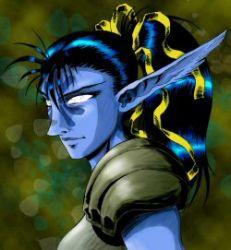

Joué par :
wiz Joué par :
[ Information masquée ] Age : 10000
Lieu de naisance : Zin'Azshari
Sexe : Femme
Race : Elfe
Faction : Alliance
Formation : Druide
Niveau : 60
Guilde : Pérégrins du Levant Artisanat 1 : Herboriste
Artisanat 2 : Alchimiste
Ère du Renouveau [5]
Lune de la Force
Décade du Panda
Décade du Gorille
Décade de l'Ours
Lune d'Agilité [1]
Décade du Tigre
Décade du Singe
Décade du Faucon [1]
Pensées de Duvnarel - 1
J'appréhendais un tant soit peu de rencontrer mes pairs. Je n'appartiens pas à ce temps, pas plus que je n'appartiens au passé. Coupée de toutes mes racines, comme la page d'un livre effacée et détrempée suite à un trop long séjour dans l'eau, je tente vainement de me reconstruire une vie. Partagée entre ma volonté de bâtir et celle de m'abandonner au désespoir, je ne parviens pas à me constituer un but avec certitude. Ma quête personnelle est une illusion. Je pourrais y passer les quelques dizaines ou centaines d'années qui me reste à vivre sans jamais aboutir. Mais aujourd'hui, c'est tout ce que j'ai. A moins que...
J'avais quelques espoirs à aller au devant de ces druides. La jeune génération, au fait des moeurs de cette époque, formée et élevée pour l'affronter, parfois envers et contre tout. J'y ai invité mon ami Ezequiel. Et nous nous sommes présentés à l'Autel de Remulos de Reflet-de-Lune. J'y fis connaissance de quelques druides seulement. Je m'attendais à plus de monde. Chessintra, Kramina, Cernunnos, Klomac, Oÿlon, Tirithaur, Tanatael, Phalenopsis, Ezequiel et moi-même. Nous n'étions que 10.
Nous avons commencé à nous présenter. Je fus invitée à le faire en premier. Quelle ne fut pas ma surprise d'apprendre que Cernunnos avait vécu la même chose que moi. La mémoire altérée par le Rêve Cristallin, il ne se souvenait plus de son passé, et il s'était éveillé comme moi, après la guerre... Une fois que tout était fini. Il arpentait le monde depuis plus longtemps que moi toutefois.
Je pouvais lire le respect et la compréhension dans les regards, au récit de mon histoire et de mes actions, mais je faisais figure de nouveau-né devant tous ces druides. Eveillée depuis 2 mois, vidée de la substance de mes souvenirs du passé, je n'étais que peu de chose, même face à cette jeunesse de 130 ans qu'était Kramina.
Nous n'eumes pas le loisir de finir les présentations. L'un des nôtres, Tirithaur, visiblement pris de folie, se mit à tuer des animaux sans raisons. Nous fûmes contraint d'intervenir. Il ne fut pas possible de lui faire entendre raison et nous dûmes user de la force. Après que nombre d'entre nous soit tombé en essayant de le neutraliser, moi y compris, c'est Chessintra qui mit fin à cette folie... De manière assez radicale, je dois dire, mais nous ne parvenions pas à envisager d'autre solution face à cette folie furieuse.
Je ne suis pas prête d'oublier ce moment de folie, comme si la corruption de Teldrassil s'était emparée de notre frère. Est-ce là l'avenir de la jeune génération ? Subir les effets d'une politique désastreuse ? Tenter vainement de réparer cet absurde projet de cet arriviste de Fandral ? Ô Malfurion, que n'es-tu là pour nous guider à travers ces temps obscurs.
Cette altercation marqua la fin de nos débats. Nous avons convenus de nous revoir, mais sans fixer de date. A la mention du temps que nous avions devant nous, je me forçais à répéter qu'il nous était compté... Une constatation difficile à accepter pour nombre d'entre nous.
Ezequiel et moi avons quitté Reflet-de-Lune en dernier, en direction d'Astranaar en Ashenvale, où d'autres tâches nous attendaient. Etait-ce cette troublante rencontre que nous venions de vivre ou autre chose, mais mon manque de concentration eut tôt fait de nous mettre en danger lors d'une dangereuse exploration. Nous avons rapidement rejoins des zones moins hostiles pour nous reposer. Ma nuit fut hantée de cauchemars tragiques...
Lune de l'Esprit [4]
Décade de la Chouette [1]
Pensées de Duvnarel - 2
Mes voyages se poursuivent inlassablement. Partout des conflits intérieurs rongent les sociétés. Partout mon espoir de découvrir le calme et la tranquillité est anéanti par la première rencontre locale. Le plus étonnant est de voir les peuples soi-disant alliés de la Horde se livrer à de semblables combats en leur sein. Et puis, le reliquat des affrontements terribles de la dernière guerre semble encore bien présent, avec son lot de batailles irrésolues, de territorialité contestée et de souffrances.
Je me demande parfois où cela me mène. Dans notre pays, les choses semblent différentes. Il m'apparaît que nous avons créé nos propres problèmes. A moins qu'une force insidieuse ne se joue de nos intentions. Et je le ressens dans la jeune génération, la rébellion gronde. Et, à vrai dire, je crois bien que je suis d'accord avec eux. J'aimerai que Malfurion soit des nôtres. J'aimerai qu'il retrouve son chemin, qu'il revienne du Rêve Emeraude, si tant est qu'il s'y trouve ainsi que ses proches l'affirment. Je ne connais pas le secret qui nous a permi d'atteindre le Rêve Emeraude, du moins pas dans le détail. Ce présent du dragon Ysera demeure un mystère pour moi. Mais je suis prête à tenter le voyage à nouveau, ne serait-ce que pour retrouver Malfurion. Lui seul pourrait comprendre mon point de vue. Lui seul a pu appréhender la manière dont les Quel-Dorei ont été happé dans leur voie maudite. Aujourd'hui, je suis convaincue qu'il détient grand nombre des réponses que je poursuis.
J'ai donc poussé mes recherches en ce sens. Je dois trouver une des nombreuses portes du Rêve. Je comptais boucler quelques-uns de mes engagements avant de m'y rendre. Cela peut sembler étrange aux miens, mais les Gobelins de Booty Bay sont, de mon point de vue, des alliés potentiels. Ceux-là s'opposent, selon des critères qui sont leurs, aux avancées de la Venture Co, cette horrible organisation qui déciment les forêts des Serres-Rocheuses. Il y a donc une forme de bénéfice pour nous, Kaldorei et Alliance, à s'en faire des amis. Il semble pourtant que certains membres de la Horde suivent le même raisonnement. Il n'est pas rare de les croiser à Booty Bay, négociant eux aussi leurs services. Je fais peut-être fausse route en pensant que les Gobelins puissent à un moment ou à un autre s'engager pour une cause. Mais à proposition égale, au moins iront-ils vers ceux qui leur semble les plus honnorables et dignes de confiance, et c'est dans ce sens que je me dévoue.
Donc, en revenant vers Stranglethorn, où une tribu de Troll sévit, je m'apprétais à poursuivre cette tâche d'épuration, qui n'a rien de plaisante en soi, quand je croisai un ami que je n'avais plus vu depuis quelques temps : Lethiel. Il était toujours aussi taciturne et mystérieux. Pourtant c'était un véritable plaisir de le voir. Comme moi, il chassait les Trolls. Pour des raisons peut-être différentes, je n'ai pas eu la présence d'esprit de le lui demander. Comme d'habitude, il n'a pas été rétiscent à m'accompagner dans cette chasse. Curieusement, il ne semble pas toujours d'accord avec les remarques de son loup Fenrir, lorsque je suis présente. Je connais la souffrance de Lethiel. Il m'a raconté son histoire lors de notre première rencontre. Et il connaît la mienne. Je crois qu'il me respecte énormément du fait de mon âge et de mon passé. En tant que Druidesse des premiers âges, j'appartiens aux guides millénaires de notre peuple. Mais il sait que je n'ai plus aucun souvenir ou presque de cette époque.
Ce que Lethiel ignore en revanche, est la raison pour laquelle je l'ai abordé. Je lui laisse penser que je ne sais rien des remarques de son compagnon. Mais je le sais troublé. Innéxorablement, je ressens le besoin de consoler sa douleur. Dans le même temps, je ne peux ignorer que ma présence lui fait du bien, tout autant que la sienne m'enchante. Il aimerait sans doute me le dire, et il s'y est essayé plus d'une fois. Mais il vit encore dans le passé... Et moi aussi à vrai dire. Je ne me souviens même pas si j'ai eu un compagnon avant mon sommeil. Je n'ai aucun souvenir d'une vie de famille, et il y a un trou, un creux insupportable au fond de mon coeur. Un creux que j'aimerai combler. Se peut-il qu'il soit la personne qui le comblera ? Je l'ignore. Mais je suis disposée à ne pas m'apesantir sur le passé, sinon pour en tirer des leçons ou en extraire la vérité. Alors seul l'avenir me dictera la suite.
Après avoir commis l'erreur de sous-estimer ces Trolls, nous avons failli périr plus d'une fois. En quittant le repaire des Bloodscalp, victorieux, Lethiel m'annonça abruptement qu'il devait partir. Encore une fois, comme il le fit à chacune de nos rencontres, il tenta de me dire quelque chose, puis se ravisa. Comme toutes les autres fois, je l'incitais à me parler sans succès. Je voudrais qu'il me parle. Quoi qu'il ait à me dire, même s'il devait me rendre triste, mais qu'il me parle. Cette fois, j'étais décidée à ce qu'il se rende compte, enfin, que je n'attends que cela. Je lui envoyai un baiser avant de partir. Ce qu'il en pensa, la façon dont il réagit, je n'en sus rien, j'étais déjà trop loin. J'espère simplement qu'il a compris qu'il peut me parler de ce qu'il veut, quand il le veut. Et si lui ne l'a pas compris, je suis sûre que Fenrir saura l'instruire à ce sujet.
Comment puis-je parler de ce genre de chose ? La mort et la destruction, devrai-je dire l'auto-destruction, s'insinuent partout dans le monde et je ne pense qu'à ce que pourrait me dire un chasseur pétri de souffrances. Aurai-je perdu le sens des priorités ? Quoiqu'il en soit, je dois me concentrer sur mon objectif... Retrouver Malfurion. Me concentrer.
Décade de la Baleine [2]
Verre émeraude - Chapitre 1 - Rêve d'un Rêve.
Chapitre 1 - Rêve d'un Rêve.
Duvnarel respira un grand coup et ce fut une surprise. Elle crut s'être réveillée là où elle s'était endormie, à Dolanaar, à l'étage de l'auberge. Elle avait pourtant suivi toutes les instructions de Tallonkai. Tout avait été fait comme il se doit, depuis son rituel de purification à Reflet-de-Lune, jusqu'à l'absorption de la potion dûment composée pour l'occasion. Entrer dans le Rêve n'était pas une mince affaire, mais elle aurait du y parvenir. Son regard explora les alentours et lui transmit des images qui apaisèrent son tourment.
Elle avait tout oublié depuis son dernier séjour ici. Elle ignorait donc que tout y était aussi réel que le monde qu'elle venait de quitter. Autour d'elle s'élevaient des pins gigantesques. La tête lui tourna et elle faillit perdre l'équilibre. A sa grande surprise, elle était debout, sur le flanc rocailleux d'une colline ou d'une montagne. Elle n'aurait su dire, car sa vue ne portait pas à plus de deux cent mètres sans compter la densité végétale. Un brouillard étrange brouillait le paysage au-delà de cette limite.
Elle était persuadée d'avoir quitté Azeroth en esprit, mais tout ici, son corps y compris, et sans doute ses capacités physiques, constituait une réalité aussi vraie que son monde : elle était dans le Rêve Emeraude. Passée sa première impression et sans en être pleinement convaincue par ce qu'elle voyait, elle sentait qu'elle avait atteint sa destination. C'était une sensation viscérale, intuitive, de ces certitudes qu'il est impossible de mettre en doute et qui, quand la raison s'y essaye, demeurent toujours aussi inaltérables, balayant tout argument.
Le Rêve avait-il changé toutefois ? Etait-il conforme à ce qu'elle attendait ? Aucune réponse ne vint. Elle n'avait pas le moindre souvenir de ses pérégrinations millénaires en ces lieux. Cela était une déception. Elle avait tant souhaité que ce voyage ait au moins pour résultat de lui restituer une partie de sa mémoire, abandonnée ici quelques mois plus tôt, lorsqu'on l?avait tirée du Rêve Emeraude et qu'on l?avait ramenée dans un monde bouleversé. Mais elle tenta de se rassurer en se convaincant que ce ne serait peut-être pas immédiat. Une raison de plus pour accomplir ce qu'elle imaginait être une longue quête.
Elle n'ignorait pas le danger. Le Rêve Emeraude pouvait lui ravir tout ce qu'elle avait vécu depuis son réveil, ou la garder ici éternellement. Dans ce voyage où aucun de ses nouveaux compagnons ne pouvait l'épauler, elle s'était donné un objectif que nul autre druide avant elle, depuis ces dernières années, n'était parvenu à atteindre : retrouver Malfurion Stormrage.
Un mouvement à droite ! Elle tourna vivement la tête et se mit sur ses gardes. Elle s'empara de son bâton, mais ce dernier n'avait rien de commun avec celui qu'elle manipulait sur Azeroth. Lorsqu'une forme quitta l'abri d'un buisson pour se cacher derrière un tronc, Duvnarel invoqua le pouvoir de la nature pour l'enchevêtrer. Mais rien ne se produisit. La druidesse pesta intérieurement. Elle savait, sinon se doutait, que ses pouvoirs pouvaient ne pas fonctionner ici. Le temps qu'elle le réalise et adopte une autre stratégie, la forme quitta son dernier refuge pour se précipiter sur elle.
Le choc coupa le souffle à Duvnarel et la renversa. Elle dévala la pente sur laquelle elle se tenait sur quelques mètres avant de heurter violemment la base d'un arbre. Sonnée, elle se releva néanmoins pour faire face à...
- Un satyre ?!
Elle avait laissé échapper cette parole, tellement elle ne s'attendait pas à trouver l'un de ces êtres corrompus dans le Rêve.
- Mielkin Gok pour te servir, fit la créature en s'inclinant à la grande stupéfaction de la druidesse.
A quelques pas, il se tenait debout sur ses sabots, le bas de son corps recouverts d'un poil épai, probablement brun sous la crasse et la boue sechée qui le recouvrait, le haut de son corps nu quoique recouvert d'une toison masculine assez fournie. Son visage souriant était avenant, même si les difformités faciales propres à sa race tentaient vainement de l'enlaidir. De grandes cornes torsadées surplombaient son front dégagé, et une longue tignasse mal peignée cascadait sur ses épaules, ne laissant ressortir que le bout de ses oreilles plus courtes que la normale.
Mielkin ne semblait pas désireux de poursuivre les hostilités qu'il avait engagé, sa façon de se présenter engageant Duvnarel à converser plus qu'à combattre, mais l'elfe se méfiait.
- Pourquoi m'avoir attaqué ? demanda-t-elle.
- Attaqué ? s'étonna le satyre. Non pas noble Kaldorei. Je ne t'avais pas vu et je t'ai renversé par mégarde. Crois bien que j'en suis désolé. Tu n'es pas blessée au moins ?
Sans répondre, Duvnarel fit un rapide bilan de son état de santé. Plusieurs bosses et echymoses, mais rien de cassé, ni de plaie. Toutefois, elle considérait l'entrée en matière un peu abrupte, et l'excuse du satyre un peu légère. En outre, elle trouvait parfaitement anormal de rencontrer un tel être dans le Rêve. Mais il lui était difficile d'affirmer si cela pouvait ou ne pouvait pas être naturel.
- Comment t'appelles-tu ? persista Mielkin dans sa tentative d'engager le dialogue.
- Duvnarel.
Elle cherchait des yeux son bâton qui lui avait échappé des mains quand elle avait roulé sur le sol. Elle l'aperçut en même temps que son interlocuteur qui suivait son regard sans se départir de son sourire.
- Enchanté de te connaître Duvnarel. Tu n'es pas blessée ?
- Ca ira. Mais reste à distance !
L'hybride se contenta de lever les mains ouvertes en signe d'apaisement. Ne le quittant pas des yeux, Duvnarel franchit la distance qui la séparait de son arme et la ramassa. Réfléchissant à toute vitesse, elle nota que le satyre parlait darnassien. Mais cela n'avait rien de surprenant si l'on considérait les origines communes que partageaient les deux races. De plus, il paraissait naturel que tout un chacun s'exprime dans la langue des Kaldorei dans le Rêve. Même étranger à Azeroth, ce qui n'était pas certain, le satyre savait à qui il avait affaire. Duvnarel douta immédiatement de la possibilité que cet être soit issu du Rêve.
- D'où viens-tu ? questionna-t-elle en continuant à se déplacer pour s'offrir une position en surplomb.
- De Methil'Ashan. Et toi ?
"Sejour de l'eau" traduisit mentalement l'elfe. Elle ne daigna pas répondre à la question du satyre. Ce dernier n'obtenant pas de réponse, élargit son sourire et ajouta :
- Enfin peu importe en vérité, même si j'aimerai le savoir par pure curiosité. Je suis heureux de croiser une Kaldorei, qui peut-être, voudra bien nous aider moi et mon peuple.
- T'aider ?! s'etouffa Duvnarel.
Mielkin baissa la tête et son sourire s'effaça.
- Oui, car la menace est grande sur Methil'Ashan. La guerre gronde à nos portes et le Kelin'khan s'approche maintenant pour terminer ce que ses troupes ont commencé.
Il sembla à Duvnarel que son esprit perdait pied. La guerre ? Ici dans le Rêve ? Comment cela était-il possible ? Les druides qui avaient autrefois arpenté ce monde n'y avait trouvé que paix et harmonie. Cela n'avait aucun sens. Ce n'était pas un rêve mais un cauchemar. Dans quel monde débridé avait-elle soudain été projeté ? Parmi les milliers de questions qui se pressaient dans son esprit, une seule lui vint à l'esprit :
- Qui est le Kelin'Khan ?
- Le chef de guerre des Kelin, répondit Mielkin en haussant les épaules comme si c'était une évidence. Son nom est Malfurion Stormrage.
Définitivement troublée par les révélations du satyre, l'esprit envahi par l'incompréhension, Duvnarel perdit l'équilibre et se retrouva assise sur son séant, le souffle court. Mielkin laissa poindre un sourire sur ses lèvres et tenta de s'approcher de l'elfe qui réagit aussitôt, brandissant son bâton.
- N'approches pas ! Je ne sais pas ce que tu me racontes là, mais je n'y vois que mensonge. Je n'ai aucune raison de croire un satyre !
L'interpellé stoppa net.
- Et j'imagine très bien pourquoi.
- Viens-tu d'Azeroth ?
Mielkin seccoua la tête de gauche à droite.
- Encore un mensonge ?! Quoique...
Duvnarel se releva, un éclat dans les yeux.
- Je comprends tout à présent. Il se peut qu'il y ait la guerre en effet. Vous avez envahi le Rêve Emeraude et Malfurion vous combat !
Mielkin abandonna son ébauche de sourire et eut soudain l'air misérable.
- Mais non, tu te trompes. Je suis né ici et mon peuple vit sur ces terres depuis des centaines d'années.
La druidesse balaya ce qu'elle considérait comme une fourberie d'un geste.
- Assez, satyre. Tu ne connais même pas le sens du mot "vérité". Tu me fais perdre mon temps. Deguerpis avant que je ne décide de t'oter la vie.
Le ton de son interlocuteur se fit implorant :
- Non, je t'en prie. Laisse-moi une chance de te prouver que je dis vrai.
- Mais c'est bien là le problème. Je te crois ! Et je ne vais pas aider ton peuple contre l'un des miens.
Les épaules de Mielkin s'affaissèrent. Duvnarel se remit debout, continua à mettre de la distance entre elle et lui, et se concentra sur son environnement. Elle repéra très rapidement les points cardinaux. Le soleil était au zénith et éclairait le versant de montagne sur lequel elle se trouvait. Ce n'était pas une lumière franche, celle-ci diffusant une ambiance bleuâtre qui n'était pas sans rappeler l'atmosphère de Reflet-de-Lune. La mousse poussait sur la partie ombragée des troncs, donc vers le "nord", ou tout autre nom que pouvait lui donner les autochtones. Seulement, Duvnarel se dit qu'elle ignorait parfaitement où elle était et où elle devait aller. Elle considéra alors le satyre, hésitant à lui demander son aide. Celui-ci demeurait debout, 2 mètres en contrebas, la tête basse.
- Dans quelle direction est Methil'Ashan ? demanda-t-elle.
Mielkin redressa la tête, une lueur d'espoir dans le regard :
- Ne te méprends pas ! trancha aussitôt Duvnarel. Je veux aller à la rencontre de Malfurion. S'il marche sur ta ville, c'est là que je le trouverai. Réponds-moi !
Sans un mot, l'hybride tendit un doigt vers le sud-ouest.
- Qu'est-ce qui me prouve que c'est la bonne direction ?
Mielkin soupira :
- Rien. Puisque tu sembles douter de tous mes propos, je ne vois pas très bien ce que je pourrais dire qui puisse te mettre en confiance. Mais permets-moi de te dire une chose ?
La druidesse apesantit son regard sur lui. Il enchaîna sans attendre la réponse.
- Si je te disais que notre extermination n'est pas justifiée ? Si je t'affirmais que le Kelin'Khan se livre aux pires exactions qui soient ? Si je te prouvais que les Kaldorei sont nos alliés dans ce conflit ? Serais-je en droit d'espérer un peu plus de considération ?
- Ta cause est perdue d'avance, satyre. Avec des "si", on pourrait boire toutes les eaux du lac Elune'Ara. Franchement, je ne vois pas vraiment comment je pourrais admettre tes fantaisies.
- Alors laisse-moi te guider jusqu'à Methil'Ashan. Tu sauras au moins que je ne cherche pas à te duper.
Duvnarel hésita. Ce n'était pas la meilleure idée qu'elle puisse avoir, mais au cas où le satyre avait menti, partir seule l'aurait confronté à la même difficulté d'ici quelques heures. Alors que si Mielkin venait, elle pourrait toujours l'interroger à nouveau de manière plus persuasive.
- Très bien satyre. Passe devant, je te suis. Et pas un mot de plus sur la route !
Mielkin esquissa un sourire et se tourna dans la direction qu'il avait indiqué, commençant à dévaler prudemment la pente. L'elfe le suivit, laissant toujours au moins 5 mètres entre eux. La pente commença à s'adoucir, bien que le terrain demeura très irrégulier. Les arbres avaient l'air plus clairsemés, mais l'horizon était toujours aussi bouché.
Duvnarel et Mielkin quittèrent l'abri des pins pour se retrouver sur une douce pente recouverte d'herbe grasse. En jetant un oeil vers le nord, la druidesse vit les cîmes des montagnes s'élever au-dessus du brouillard. Cette chaîne semblait traverser ce monde d'ouest en est, formant une barrière infranchissable. Côté vallée, il était impossible de distinguer quoi que ce soit, hormis quelques crêtes qui perçaient par-ci ou par-là. L'elfe s'apprétait à demander quelque chose quand elle s'arrêta net, envahie par une étrange sensation.
Rien ne pouvait laisser penser au satyre que son accompagnatrice s'était arrêtée, mais un sourire se forma sur ses lèvres, tandis qu'il stoppait à son tour, se dévissant le cou pour regarder derrière lui. Duvnarel se concentra un bref moment sur sa sensation, les yeux mi-clos, avant de les ouvrir en grand en voyant les contours d'un elfe se matérialiser devant elle. Elle ne l'avait vu qu'une fois, mais le reconnut sans peine : Cernunnos. Elle se souvenait de ce frère, victime de la même malédiction qu'elle, ayant perdu l'essentiel de sa vie dans le Rêve Emeraude. Elle avait sans doute beaucoup en commun avec lui, et réciproquement. Mais aucun d'eux ne se souvenait exactement de leur vie d'avant. Se pouvait-il que cette image soit une réminescence de sa présence passée dans le Rêve ? Au contraire, tentait-il de rejoindre le Rêve lui aussi ?
Elle n'obtint aucune réponse de cette image translucide qui disparut presque aussitôt, et bien plus brutalement qu'elle n'était apparue. Des secondes s'écoulèrent avant qu'elle ne se rende compte que Mielkin l'observait. Elle se demanda si le satyre avait vu Cernunnos, mais ne pouvait se résoudre à lui poser la question.
- Souhaites-tu faire une pause ? s'enquit-il.
- Non. Continue ! Je te suis.
Les deux voyageurs reprirent leur route. Le brouillard semblait se dissiper peu à peu, repoussant de plus en plus loin les limites du champ de vision. Mais il ne révélait pour l'instant aucun indice permettant de savoir si l'hybride disait ou non la vérité, et si non, dans quel piège il tentait de mener la druidesse. La pente s'accrut légèrement alors que l'on pouvait entendre le bruit lointain d'une chute d'eau. Quelques arbres éparts tentèrent de constituer l'orée d'un bois, mais il fallut plusieurs minutes avant de pouvoir goûter à l'ombre rafraichissante de ces feuillus. Le bruit de l'eau qui s'écoule calmement vint bercer les oreilles et la fraicheur reposante s'imposa un peu plus. Ils arrivèrent au bord d'une petite rivière. Le satyre s'approchait du cours d'eau avec l'intention manifeste d'y pénétrer.
- Pourquoi avons-nous changé de direction ? questionna Duvnarel avant qu'il n'atteigne le rivage.
- J'ai obliqué vers le sud pour franchir le cours d'eau à cet endroit, répondit Mielkin sans la moindre hésitation. Plus à l'ouest, il y a une chute et un lac plus difficile à franchir sur plusieurs lieues.
A quelques centimètres sous la surface de cette eau claire apparaissait un lit de roche qui formait un gué. L'elfe hocha la tête comme pour donner son accord et Mielkin s'engagea dessus. Elle le suivit. Mielkin manqua de glisser plus d'une fois sur la roche rendu glissante par les lichens, mais parvint intact de l'autre côté. Duvnarel eu plus de facilité, la nature refusant de se dérober sous ses pas, l'aidant même à ne pas tomber.
Ils parcoururent silencieusement la forêt, réobliquant vers le sud-ouest alors que la pente redevenait plus sérieuse. Cette fois, le sol était couvert d'humus, rempli d'humidité, à tel point qu'il en devenait friable et glissant. Mielkin faillit tomber plus d'une fois. Duvnarel trouvait habilement des points d'appui sûr, se risquant même parfois à quelques sauts. Elle aurait souhaité prendre une forme animale, mais ne se sentait pas encore assez d'affinité avec la nature du Rêve Emeraude. Finalement, ils arrivèrent à l'orée du bois, l'abrupte fin de la forêt : une falaise de plusieurs centaines de mètres de haut. La vue était parfaitement dégagée, et aucun brouillard n'empêchait de voir la cité qui se trouvait en contrebas. Pas plus que la vision d'horreur qui assaillit alors la druidesse.
Au-delà de la ville, et jusqu'à l'horizon, le paysage était désertique. Mais cela n'avait rien de naturel. Quelques foyers ou fumées noires témoignaient encore de la froide détermination d'une force occulte à l'élimination de toute forme de végétation. La vallée quasi entière et les montagnes qui la cernaient au sud, tout n'était que ruine. Défrichée et brûlé, ce monde était à l'agonie. Cette découverte étreignit le coeur de Duvnarel jusqu'à lui en faire mal. Son regard perdu dans la contemplation de ce désastre erra encore quelques minutes avant de se poser sur les rangs d'une force armée qui marchait sur la ville.
- Que... Que se passe-t-il ? balbutia-t-elle.
- La folie du Kelin'Khan dans toute sa grandeur, déclara Mielkin d'un air sinistre.
La colère s'empara de la druidesse et elle fit un ample geste en montrant la scène :
- Tu es en train de me dire que Malfurion Stormrage aurait commis toutes ces horreurs ?!
- A quoi bon réitérer cela, puisque tu ne me crois pas.
- Je ne te crois pas en effet. Ce sont toi et les tiens qui ont brulé la terre et qui êtes poursuivis par Malfurion pour vos exactions !
Le satyre haussa ostensiblement les épaules puis émit un long soupir.
- Je ne te propose pas de rejoindre les Kaldorei qui se trouvent dans Methil'Ashan alors...
- Des prisonniers, je suppose ?!
- Non, répondit Mielkin. Des alliés. Mais t'en convaincre est au-dessus de mes forces.
Il prit l'air misérable. Duvnarel n'était pas dupe. Toutefois, elle voulait profiter de la situation pour s'informer. Sa position au-dessus de la cité où les satyres habitaient prétendument lui permettait d'analyser leurs défenses. Se pouvait-il d'ailleurs que les Kaldoreis aient investi la place pour s'y réfugier et que l'armée soit en fait là pour les détruire ? Dans ce cas, il se pouvait que Mielkin tente de la convaincre de sa mauvaise foi dans le seul but de l'entraîner à rejoindre l'armée. Elle n'était sûre de rien.
Toute à ses observations, elle remarqua une corniche, une cinquantaine de mètres plus bas, qui lui paraissait une excellente position pour espionner les mouvements dans la cité. Le haut de la falaise culminait à plus de 200 mètres au dessus de la plus haute bâtisse. La ville, construite en terrasse, accueillait 3 chutes d'eau de faible débit émanant de cavités naturelles formées dans la paroi rocheuse. Retenus dans des bassins et des canaux, ces volumes aqueux se mélaient à l'architecture exceptionnelle des lieux. Aux pieds de la ville, un lac recueillait ce sang argenté qui se deversait ensuite dans un fleuve s'évadant vers l'est. C'est de l'autre côté du lac que se trouvait l'armée. Les pourtours de cette étendue d'eau était innaccessible à moins d'escalader la falaise ou de contourner l'escarpement pour parvenir à l'endroit où se trouvait l'elfe et le satyre, ce qui, à en juger par la géographie du coin, ne paraissait pas aisé.
Duvnarel hésitait à annoncer sa volonté de descendre sur la corniche. Elle savait que Mielkin ne pourrait pas la suivre, ses sabots réduisant ses capacités d'escalade. Mais elle ne pouvait pas simplement le laisser partir. Elle songeait à différents moyens de neutraliser l'hybride quand un craquement de branche proche la tira de sa reflexion.
Surgissant soudainement du sous-bois, deux formes humanoïdes se précipitèrent vers l'elfe et le satyre. Réagissant à la vitesse de l'éclair, la druidesse abattit son bâton sur son assaillant, le stoppant net, puis tournant sur elle-même tout en s'acroupissant, elle le faucha. Elle s'étonna de la difficulté de mener à terme son retournement, quand elle vit les jambes puissantes et la queue qui soutenaient l'adversaire. Le cri de quelqu'un qui chute dans le vide détourna son attention. Le deuxième agresseur venait de résoudre pour elle le problème nommé Mielkin Gok.
Elle contourna rapidement l'être qu'elle avait mis au sol pour ne pas laisser le dangereux à-pic dans son dos. Ce faisant elle se concentra pour invoquer les forces de la nature. Cette fois, elles voulurent bien se mettre à son service, faisant surgir du sol de nombreuses racines qui s'emparèrent de la créature la plus proche, la faisant pousser un léger cri de surprise puis un râle de douleur. Le second ennemi s'approchait sans chercher à aider son camarade emprisonné et compressé par cet étau naturel. Duvnarel prit le temps de le détailler.
Il ne s'agissait nullement d'un humain. Ses deux jambes puissantes et sa queue, assez longue pour traîner par terre, n'étaient pas les seuls signes particuliers qui la distinguait. Sa tête était draconique, faite d'un visage allongé en forme de gueule remplie de crocs, d'yeux globuleux jaunes fendus d'un iris noir, d'une crête membraneuse et d'une peau à la texture écailleuse. Hormis le long cou qui supportait le crâne, le torse et les bras était proportionnés comme ceux d'un humain. Toutefois ses mains ne comportaient que 4 doigts, dont un pouce opposable, et ressemblaient davantage à des serres, griffes incluses. Elle portait des vêtements visiblement conçus pour le camouflage, vert et épais, recouvrant une cuirasse et quelques pièces de cuir.
Duvnarel tint l'antagoniste à distance grâce à l'allonge de son bâton, tout en reculant dans les bois. Si son compagnon se libérait, elle tenait à avoir le plus de temps possible devant elle avant de devoir en affronter deux à la fois. Lorsqu'elle considéra avoir mis suffisamment de distance, elle lança quelques assauts rapides. Elle fit mouche plusieurs fois, provoquant un grognement en guise de réponse. Son adversaire ne semblait pas spécialement sensible à ses attaques, ou alors il le cachait bien. Mais elle ne faisait que gagner du temps et rassembler ses forces pour autre chose.
Visiblement agacée par ce combat, l'être reptilien lança des assauts de plus en plus furieux. Ses griffes atteignirent plus d'une fois l'elfe qui portait de nombreuses estafilades malgré l'épaisseur de sa propre armure de cuir. Lorsque des cris de rage et de nombreux craquements indiquèrent à Duvnarel l'arrivée iminente du troisième protagoniste, elle sut qu'elle ne pouvait attendre davantage. Laissant sa propre colère la submerger, elle fit appel à l'esprit de l'ours qui s'insinua en elle, transformant ses perceptions, modifiant ses intentions, modelant son physique pour exprimer toute la plénitude de sa force séculaire. Envahi des plus sombres et instinctives pulsions animales, l'elfe transfigurée engagea alors un combat sans merci.
L'ours se dressa plus d'une fois pour abattre puissamment ses pattes griffues sur ses ennemis. Mais rapidement, l'avantage de la force et de la surprise céda doucement du terrain à la sournoiserie et la ruse. Harcelant le mammifère de tous les côtés, les reptiliens détournaient sans arrêt son attention, accroissant sa rage mais aussi son aveuglement face à cette stratégie. Donnant des coups de plus en plus puissants, l'animal ratait plus souvent sa cible, s'affaiblissant un peu plus à chaque seconde, exposant son flanc ou son dos à l'autre adversaire. L'instinct de l'esprit ancestral révéla à la conscience de son hôte le danger mortel qui se profilait.
Réagissant alors, la volonté enfouie de l'elfe dicta une action désespérée. Laissant son dos exposé, l'ours força l'une des créatures à reculer, puis, contre toute attente, le chargea sur le peu de distance qui les séparait. Lui rentrant dedans, puis le renversant, il le piétina de tout son poids et s'élança pour sauter hors de portée de celui qui le suivait et tentait de lui labourer l'arrière-train. Le saut de l'ours se termina en roulade de Duvnarel qui, bâton en main, se releva et se retourna violemment lançant son arme à la hauteur du cou. Le bâton eut été une épée que l'être reptilien eut été décapité. Le bruit d'une coquille d'oeuf que l'on malaxe illustra l'ampleur des dégâts. L'ennemi projeté par la puissance du coup s'ecroula sur le flanc, la tête formant un angle parfaitement anormal avec le reste de son corps.
L'être reptilien qui avait été piétiné commençait à se relever, révélant l'incroyable endurance de ces monstres. Rassemblant son énergie, la main tendue vers lui, la druidesse invoqua à nouveau la nature pour l'emprisonner. Herbes, racines, fougères et lianes s'allièrent pour immobiliser leur cible. Mobilisant ce qui lui restait de force, elle concentra en elle les processus régénérateurs et guérisseurs de la vie végétale et animale, soignant presque instantannément toutes ses blessures. Bien qu'intacte en apparence, Duvnarel était épuisée intérieurement, mais son adversaire n'avait pas besoin de le savoir. Elle fit un dernier effort pour prendre le contrôle des plantes qui enserraient le dernier survivant et s'approcha de lui.
- Qui es-tu ? interrogea-t-elle en s'efforçant de masquer son essoufflement.
- Ssivian, siffla l'humanoïde draconique.
- Pourquoi m'avoir attaqué ? Et qu'es-tu exactement ?
- La réponse à tes deux questions est la suivante : je suis un Kelin et tout ce qui vit et qui n'est pas comme moi doit être détruit !
Duvnarel en eut le souffle coupé. Elle croyait cette créature sur parole. Elle suintait le mal, la haine de la vie, le dégoût pour la beauté. L'elfe se rappelait les paroles de Mielkin à propos des Kelin. Elle devait donc considérer que ce dernier avait menti en prétendant que Malfurion était leur chef. Malfurion ne pouvait pas guider les Kelin dans une voie si malsaine. Mais elle ne put s'empêcher de poser la question :
- Qui est ton chef ?
- Le grand Kelin-Khan Malfurion Stormrage !
- C'est impossible ! cria-t-elle ordonnant inconsciemment aux plantes de resserer leur étreinte.
Les végétaux s'efforcèrent d'obéir, arrachant un râle de douleur à leur victime puis cédèrent les uns après les autres sous la pression prodigieuse exercée par le corps grandissant du Kelin. Duvnarel recula immédiatement, échappant de peu à la morsure d'un crocilisque géant. Le reptile mesurait plus de 8 mètres de long et se jeta sur elle aussi vite que lui permettait ses six pattes.
L'elfe esquiva la charge de justesse. La forêt était assez dense pour réduire davantage encore la faible manoeuvrabilité du monstre. Cela lui laissa le temps de réfléchir à une nouvelle stratégie compte tenu de son état. Tapant du bâton, harcelant le crocilisque tout en se cachant derrière les arbres, elle attendit son heure. L'épuisement physique la gagnait alors que son adversaire paraissait infatigable. Utilisant ses ultimes ressources, elle invoqua cette fois l'esprit du félin. Après avoir savamment coutourné l'arbre qui la protégeait, c'est sous la forme d'une panthère noire que Duvnarel grimpa sur le dos du reptile.
Ce dernier s'employa à la renverser, en se cabrant et en se tournant violemment d'un côté comme de l'autre. Mais l'équilibre du félin était fantastique. Tantôt s'agripant à l'aide de ses griffes aiguisées, tantôt progressant sur l'épine du monstre, la panthère atteignit son objectif et frappa. Les paupières épaisses du crocilisque ne suffirent pas à protéger ses yeux. Sa gueule s'ouvrit pour laisser échapper un grognement de colère et de douleur mélées. L'instant d'après, le félin bondit loin de son perchoir en émettant un feulement, puis courrut dans les bois. Fou de rage, le reptile lui emboita le pas, en droite ligne, heurtant les arbres sans s'en rendre compte, parvenant même à rattraper son ennemi dont il percevait l'odeur. Mais la panthère fit un bond de côté au dernier moment. La longue machoire dentée claqua en même temps que les pattes antérieures de l'animal perdaient leurs appuis. Le monstre n'eut pas le temps de comprendre, basculant par dessus le bord de la falaise, tombant dans le vide en poussant un cri rageur.
Duvnarel avait retrouvé son apparence elfique au moment où s'éteignit la longue plainte du reptile. Elle se dit que sa présence était sûrement révélée, imaginant que les citadins n'avaient pas pour habitude de voir une pluie de crocilisque. Ayant perdu son douteux guide, et n'ayant aucune bonne raison de mettre en doute les paroles de ce dernier concernant les Kelin, elle hésitait pourtant à rallier la cité. Même s'il était plus probable que ces êtres draconiques aient été des éclaireurs de l'armée qui marchait sur Methil'Ashan, elle n'en avait pas la preuve. Bien que perçante, sa vue ne lui permettait pas d'identifier les troupes lointaines. En risquant un oeil sur les terrasses de la ville, elle n'avait vu que des satyres.
Renonçant à se reposer, et peu désireuse de rester au même endroit, elle longea le bord de la falaise en direction de l'est. Elle se replia dans la forêt pour ne pas être trop visible. Il était peu probable qu'elle croise d'autres éclaireurs dans cette direction, le fleuve ayant pu gêner leur prise de position de ce côté du lac. A la réflexion, rien n'était moins sûr, mais cela n'entravait en rien son projet. Sa trajectoire s'incurva vers le sud, le promontoir rocheux dominant maintenant les eaux du lac et non plus la ville. Elle s'approcha du bord et jaugea de la hauteur et du dénivelé. La pente n'y était pas aussi abrupte qu'à l'aplomb de Methil'Ashan. Duvnarel commença à descendre prudemment, avec, toutefois, l'aisance propre à sa race. Elle savait qu'on la verrait aisément, grande silhouette se déplaçant sur un pan de roche éclairé par un soleil de fin d'après-midi. Après une vingtaine de minutes, elle parvint sur une corniche qui surplombait les eaux du lac maintenant noyées dans l'ombre allongée des montagnes. Elle plongea. Au terme des 20 mètres de chute, elle pénétra dans l'eau avec perfection, amorçant aussitôt une nouvelle métamorphose, assumant la forme du lion de mer.
Même si sa position était moins intéressante d'un point de vue stratégique, elle lui permettrait de voir assaillants et défenseurs de près, chacune des factions se massant sur les bords du lac. Ainsi décida-t-elle d'abord de traverser l'étendue d'eau pour observer l'armée. Elle eut rapidement la confirmation de ses soupçons. Les forces militaires qui s'approchaient étaient bien des Kelin. Leur menaçante apparence donnait à l'ampleur de leur mouvement une aura inquiétante. Les premiers bataillons prenaient positions sur la rive sud du lac et Duvnarel devina très rapidement leur stratégie. Certains d'entre eux se transformeraient en crocilisque pour servir de barges au reste des troupes. Soudain inquiète pour sa propre sécurité, la druidesse s'éloigna rapidement et retraversa le lac vers le nord en direction de Methil'Ashan. Alors qu'elle approchait de la zone portuaire de la cité, son coeur bondit dans sa poitrine en remarquant d'autres formes sous-marines.
Trois autres lions de mer croisaient à quelques dizaines de mètres. Elle s'approcha pour vérifier si sa théorie était juste. Un comportement similaire de la part des animaux aquatiques confirma son idée. Comme un seul, les 4 lions de mer se dirigèrent vers le port de Methil'Ashan. Au moment d'émerger sur une rampe qui montait vers le quai, les animaux prirent la forme d'elfes. Trois hommes se tournèrent vers Duvnarel.
- Ishnu alah, soeur, fit l'un d'eux.
- Ishnu dal-dieb, répondit la druidesse ravie de rencontrer les siens.
Les deux autres inclinèrent poliment la tête, mais l'une des paires d'yeux la dévisageait.
- Je suis étonné de voir une de nos jeunes soeurs ici, déclara celui qui l'avait salué. Je suis Linen'Orath.
- Je me nomme Duvnarel. Je ne vois pas...
- Duvnarel ! l'interrompit l'elfe au regard insistant.
Elle le fixa sans comprendre le sens de son intervention. Elle lui trouvait un air familier, mais sans plus.
- Je suis Toret'Guil. Tu ne me reconnais pas ?
La druidesse secoua négativement la tête.
- Tu la connais Toret ? demanda Linen'Orath.
- Oui, répondit l'interrogé. Je l'ai connu voici quelques siècles, ici, sur Lom-Terena. Duvnarel a disparu comme tant de nos frères voici 1 an.
- Te rappelles-tu les circonstances ?
- Non, je l'avoue. Et toi Duvnarel, te souviens-tu de moi et de ce qu'il t'est arrivé ?
La druidesse regardait ses 3 frères de race depuis un moment sans avoir le moindre souvenir d'eux. Elle secoua négativement la tête et ajouta :
- Non. Je suis désolée. Je n'ai aucun souvenir du Rêve Emeraude, ni même antérieurement au Rêve.
- Le Rêve Emeraude ? s'étonna le troisième. De quoi parles-tu ?
Duvnarel ouvrit de grand yeux, surprise de voir la même expression de doute sur les visages qui l'entouraient. Des égarés ! Ils étaient des égarés ! C'est la seule hypothèse valable qu'elle voyait. Elle aurait pu faire partie de leur groupe. D'ailleurs elle en avait sans aucun doute fait partie. Les égarés étaient ceux qui n'avaient pas retrouvés leur chemin vers la réalité. Leurs esprits étaient prisonniers à jamais du Rêve, à moins que leur corps ne soit retrouvé et réveillé comme le sien l'avait été. C'est d'ailleurs ce qui pouvait expliquer sa perte de souvenir, comme si son esprit avait vécu dans le Rêve une vie totalement différente, et l'avait abandonné ici en étant rappelée sur Azeroth. Pour Toret'Guil, elle avait disparu, alors que son esprit avait été happé hors du Rêve. Elle se demandait comment répondre à ses frères sans les troubler. Elle n'avait jamais imaginé que les égarés aient pu avoir une perception aussi différente de la réalité, du moins, pensaient-ils que ce monde était la réalité. Cela lui donna une idée.
- Le Rêve Emeraude est là où j'ai tenté de me rendre. Un autre monde. J'y suis parvenue et j'ai donc quitté ce monde.
Les visages de Linen'Orath et du troisième elfe s'étaient fermés. Toret'Guil paraissait réfléchir aux implications de cette révélation.
- Et tu dis que depuis que tu t'es rendue sur cet autre monde, tu n'as plus la mémoire de ce que tu y a vu, pas plus que ce que tu as vécu ici avant d'y aller ?
Le coeur de Duvnarel se serra. Mentir à ses frères la dégoutait, fut-ce pour leur bien. Mais elle voulait obtenir leur collaboration et le meilleur moyen était de ne pas passer pour une folle à leurs yeux.
- Non, en effet. Ce monde s'appelle Lom-Terena ?
- Oui, fit le troisième.
Il s'inclina légèrement et ajouta :
- Et je me nomme Irilar. Enchantée de te connaître Duvnarel.
Duvnarel s'inclina en retour. Le regard d'Irilar lui parut soudain bien insistant, au point de la déranger.
- J'aimerai en savoir un peu plus sur ce qui se passe ici, sur ce que veulent ces Kelin et sur qui les dirige ?
- C'est légitime, fit Linen'Orath, mais je crains que nous n'ayons pas tellement de temps devant nous pour te l'expliquer. Un crocilisque est tombé du haut de la falaise dans la ville. Il doit...
- Oui, c'est moi qui l'ait... combattu, coupa Duvnarel. Ils étaient 2. Le cadavre de l'autre est resté en haut. Il s'agissait sûrement de 2 éclaireurs.
Ses interlocuteurs en restèrent bouche bée.
- Je ne sais pas s'ils enverront des troupes à cet endroit, poursuivit Duvnarel. Si leurs éclaireurs ne reviennent pas, ça les convaincra peut-être que nous surveillons les hauteurs, mais rien n'est moins sûr.
Duvnarel voulait s'impliquer dans les défenses de la ville maintenant qu'elle savait que ses frères l'habitaient. Les elfes restant muet et visiblement plongé dans leur reflexion, elle ajouta :
- Dites-moi. N'auriez-vous pas trouver le cadavre d'un satyre également ? Il est tombé peu de temps avant le crocilisque.
Linen'Orath et Irilar se regardèrent. Toret'Guil fronça les sourcils avant de répondre :
- Non Duvnarel. Tu es sûre de toi ?
La druidesse était sceptique. Mais elle ne voyait aucune raison à ses frères pour lui cacher la vérité, à moins qu'ils se méfient d'elle. Elle n'eut pas le temps de répondre que les 3 elfes s'écartèrent soudainement.
Au centre du cercle formé par eux et Duvnarel, une forme fantomatique venait d'apparaître. La druidesse connaissait déjà ce phénomène, et si elle s'inquiéta de l'identité de celui qui se matérialisait, elle était visiblement peu méfiante comparée à ses frères de race. Toutefois, elle fut particulièrement surprise de découvrir le visage du nouveau venu, qui, contrairement à la première apparition hésitante et fragile de Cernunnos, se fit bien plus marquante et définitive. Elle l'avait rencontré sur Azeroth et lui écrivait régulièrement, car le groupe qu'elle avait fondé avait beaucoup en commun avec celui que le nouveau venu dirigeait : Arowän, Grand Archiviste de la Ligue des Archivistes.
Voyant qu'il s'agissait de l'un des leurs, les autres elfes se détendirent, mais s'inquiétaient maintenant du phénomène en lui-même plus que de son résultat. Duvnarel s'inclina pour saluer Arowän qui lui faisait face :
- Ishnu-alah Arowän.
- Ishnu dal-dieb, fit-il séchement avec dans le regard un soupçon lointain de reproche.
Il se retourna pour observer les alentours et croiser les regards incrédules de Toret'Guil, Linen'Orath et Irilar.
- Ishnu-alah frères, ajouta-t-il à leur attention.
Puis ses yeux se focalisèrent sur la druidesse. Il respira profondément, et s'appréta à prendre la parole, mais Duvnarel le prit de vitesse pour lui dire exactement ce qu'il s'apprêtait à dire lui-même :
- Pourquoi es-tu venu dans le Rêve Arowän ?! Tu n'aurais pas du prendre ce risque !
- Et toi ?! répliqua-t-il. Tu inquiètes tout le monde avec ta décision, les risques inconsidérés que tu prends et tu finis par appeler au secours. Qui de nous deux est le plus inconscient d'après toi ?!
- Appeler au secours ? Mais de quoi parles-tu ?
- Hey là ! intervint Toret'Guil. Qu'est-ce qui vous prend ?
- Nous aimerions comprendre, renchérit Linen'Orath.
Arowän leur tournait le dos et adressa un regard lourd de signification à son interlocutrice qui inclina très légèrement la tête en signe d'assentiment. Il s'apprétait à dire quelque chose quand Irilar coupa court à toute discussion :
- Je crois qu'il faut prévoir de remettre toute explication à une autre fois. Les Kelin arrivent.
Duvnarel se retourna. La lumière avait fortement baissé, mais des terres ravagées du sud, une aurore enflammée illuminait assez l'horizon pour capter l'ombre mouvante formée par les troupes ennemies qui recouvraient en parti le lac.
- Qu'est-ce ? murmura Arowän que cette vision étonnait.
- Une force armée vouée à l'anéantissement de ce monde, répondit Duvnarel sans la moindre trace d'émotion.
- C'est impossible...
- C'est exactement ce que je me suis dit, compléta la druidesse.
Puis se tournant vers les autres druides :
- Quelles forces avons-nous ici ? Quelles défenses ? Et surtout pourquoi chercher à défendre cette cité ?
- Methil'Ashan est le dernier bastion des habitants de Lom-Terena, dit Irilar. La défendre est symbolique, car nous savons qu'elle ne pourra pas être tenue. Les femmes et les enfants satyre ont été évacués par des cavernes qui s'enfoncent dans la montagne. Le reste des habitants souhaitaient faire le plus de mal possible aux assaillants avant de se retirer et de mener une guérilla depuis des refuges camouflés dans les forêts des hauteurs. Toute la ville est un immense piège. Ses ruelles compliquées offrent l'occasion d'innombrables embuscades.
- Combien ? demanda simplement Arowän.
- Presque un millier de satyres, dont un tiers véritablement entraîné pour le combat.
- Contre ?
- Plus de trente milles Kelin parfaitement en état de se battre, dont la plupart sont des métamorphes.
Les épaules du vieil archiviste s'affaissèrent. Le fait qu'il y ait des métamorphes parmi les ennemis n'était pas ce qui l'accablait le plus. Il ne comprenait pas tous les tenants et aboutissants de cette guerre, mais il cernait assez aisément, dans tout ce que son regard pouvait embrasser ici, que le danger qui s'avançait sur ces eaux était voué à l'extinction de toute vie, qu'elle soit animale ou végétale. Cette perception lui donnait le vertige. Il n'avait jamais connu une telle volonté de détruire à part dans les rangs de la Légion Ardente sur Azeroth. Ce qui se passait ici, il l'avait déjà vécu et en avait déjà souffert.
- Combien de druides ? demanda Duvnarel, sortant du même coup Arowän de ses noires pensées.
- En plus de nous, 3 autres.
- C'est tout, fit Duvnarel déçue.
Elle évaluait leurs chances réelles d'infliger des dommages sérieux à une telle armée. Mais que pouvait faire 8 druides, même très bien entraînés contre une telle rage d'annihiler. Contrairement à Arowän, qui renonçait déjà à tout affrontement et qui portait la défaite sur les traits de son visage, Duvnarel réfléchissait activement à une stratégie de combat. De tout son coeur, elle voulait se battre, et si son ultime souffle ne devait servir qu'à ôter la vie d'un seul de ces monstres, elle en aurait été fière. La rage bouillait en elle. Une énergie comme elle n'en avait jamais connue. Si elle ignorait les détails de son passé, elle se rappelait l'importance des actes historiques auxquels elle avait jadis participé. Son devoir était là, sans équivoque. Détruire ce qui était en train d'ignominieusement anéantir ce monde.
- Bien, ajouta-t-elle les dents serrées. Qu'il en soit ainsi. J'échouerai dans ma quête, mais je n'échouerai pas à consacrer ma vie à la vie !
Décade du Lapin [1]
Verre émeraude - Chapitre 3 - Cristallisations
Chapitre 3 - Cristallisations
Duvnarel ouvrit les yeux et constata qu'un visage familier était penché au-dessus du sien.
- Arowän, dit-elle avant de reconnaître son erreur.
- Toret'Guil, rectifia l'elfe.
- Où suis-je ?
- A l'abri pour le moment.
Elle voulut se lever, mais Toret'Guil l'en empêcha doucement.
- Reposes-toi. Tu n'es pas tout à faire remise.
Elle observa les alentours et constata qu'elle se trouvait allongée sur le sol rocailleux et inégal d'une caverne faiblement éclairée.
- Tu n'es pas blessée, ajouta l'elfe. Mais tu dois encore être fatiguée.
Rien n'était plus vrai. Elle se sentait toutefois nettement mieux que dans ses derniers souvenirs.
- Comment suis-je arrivée là ? J'étais poursuivie par les Kelins et l'un d'eux m'a rattrapé...
- Non, pas l'un d'eux. Et je m'excuse de t'avoir aussi stupidement projetée au sol, mais ma forme d'ours ne me donnait pas l'habileté nécessaire à un sauvetage plus doux.
Duvnarel le regarda les yeux plein de gratitude.
- Merci, dit-elle.
- C'est normal. Mais tu as eu de la chance, car tu n'aurais pas porté ce pendentif, je n'aurai pas pu te retrouver.
Elle acquiesça.
- Combien de temps s'est écoulé ?
- Pratiquement une journée depuis la fin de la bataille.
- Les pertes ?
- Les rapports que j'ai reçu parlent d'une petite centaine de survivants. Cela en dehors des familles qui ont été mises à l'abri.
La druidesse soupira.
- Et parmi nous ?
- Toi et moi. Ton ami est introuvable. Comme Irilar, Linen'Orath, Kilane, Maden'Sath et Ofa je suppose qu'il est mort. Du moins n'en suis-je pas certain du fait qu'il n'avait pas de pendentif comme toi.
- Et les forces ennemies ?
- Elles occupent Methil'Ashan. Elles avaient jusque là tout détruit sur leur passage, mais elles semblent vouloir se servir de la ville comme base d'opération.
La druidesse buvait les paroles de Toret'Guil, y cherchant la moindre trace d'espoir, mais même si le ton neutre qu'avait employé l'elfe ne laissait paraître aucune opinion, la situation parlait d'elle-même. La guérilla que prévoyaient les satyres n'avaient pas été imaginée avec si peu de force dans leur camp. Elle abandonnait déjà l'idée qu'il y ait la moindre possibilité de renverser la situation. Finalement, une seule chose l'intéressait vraiment maintenant : retrouver Malfurion, et accessoirement Arowän. Or, la seule piste à sa disposition l'entrainaît innévitablement vers les Kelins.
Elle n'ajouta rien, laissant Toret'Guil juger de lui-même qu'il devait aller prodiguer ses bons soins ailleurs. Ce qu'il fit après avoir adressé un sourire à Duvnarel. Elle attendit qu'il s'éloigne, regardant autour d'elle et étudiant son environnement. Elle vit qu'elle était relativement isolée. Dans les cavernes attenantes, des réfugiés satyres attendaient visiblement les bons soins de Toret'Guil. Elle prit son inspiration et bougea. Elle constata qu'elle avait récupéré l'essentiel de ses forces, ce dont elle allait avoir grand besoin. Sans provoquer trop de bruit, elles se mit à quatre patte, enleva le pendentif qu'elle portait pour le poser à terre, puis se concentra pour acquérir la forme d'une panthère noire. Aussitôt après, ne laissant entendre qu'un léger feulement, elle se fondit dans les ombres.
Duvnarel n'eut aucun mal à contourner Toret'Guil concentré sur sa tâche dévenue épuisante compte-tenu du nombre de blessés. Elle le remercia silencieusement de son acte de bravoure et de son dévouement. Humant les odeurs et observant les traces, aussi légères soient-elles sur le sol, elle mit à contribution ses talents félins pour éviter les satyres et retrouver la voie de la sortie. Après plusieurs dizaines de minutes dans une obscurité qui ne dérangeait nullement la créature de l'ombre, des sons se firent entendre. Il s'agissait de voix et de mouvements, et Duvnarel reconnut les altérations sifflantes des syllabes émises par les Kelins, même si elle ne comprenait aucun des mots prononcés.
Elle s'arrêta d'abord pensant devoir réfléchir à une stratégie avant de se rendre compte que ce qui l'avait stoppé était sa seule appréhension. La terreur ressentie devant la vague inexorable des Kelins n'avait pas disparue. Bien au contraire, elle s'était inscrite au plus profond de ses phobies. Ce qu'elle désirait faire allait à l'encontre de tout ce que lui dictait ses instincts les moins contrôlés. Elle passa un long moment à essayer de rationnaliser sa peur, s'imaginant que celle-ci était sans doute la principale arme des Kelins. Puis, n'y parvenant pas vraiment, elle se focalisa sur son objectif. Son but avait une force considérable, une importance telle dans son coeur, qu'elle parvint à se convaincre de combattre ses démons, qu'il valait la peine de risquer sa vie, et que sa vie même n'était rien en regard de sa réussite. Sa détermination réhaussée par cette pensée, c'est tout de même l'estomac noué qu'elle se remit en route vers les positions Kelins.
Plus aisément qu'elle ne l'aurait cru, Duvnarel passa sans encombre les sentinelles, franchit l'issue des grottes et pénétra dans une cité dévastée. Pratiquement plus aucun bâtiment n'était debout, et ceux qui l'étaient abritaient des centaines de Kelins. La gorge sèche et serrée par l'angoisse, la discrète panthère marchait prudemment entre les envahisseurs, affalés, pour la plupart, assis dans le sang à peine séché de leurs victimes. Les Kélins ne festoyaient pas. Ils ne buvaient ni ne mangeaient. Surnaturels ou tout simplement démoniaques, ils attendaient patiemment de pouvoir étancher à nouveau leur soif de destruction. Leurs yeux variant du jaune au rouge en passant par un vert irisé d'orange, fixaient le vide.
Duvnarel se sentit rapidement opressée. Elle se demandait si les Kelins la voyaient ou non. Ils ressemblaient tous à des statues vivantes, figés là dans un immobilisme relatif. Car ils respiraient et faisaient parfois bouger leurs griffes ou leurs membres, par saute, comme un reflexe nerveux. La druidesse s'imaginait qu'ils avaient reçu l'ordre de la laisser passer, l'attirant dans un piège et la laissant croire qu'elle avait des chances de réussir alors qu'elle se condamnait un peu plus à chaque pas feutrés. En outre, elle ignorait où se rendre et où chercher. Errant un peu au hasard durant de longues minutes angoissantes, elle crut remarquer de l'activité vers le centre de la ville où un bâtiment encore intact se dressait. Elle y dirigea ses pas.
Elle constata que la densité des Kelins à cet endroit était particulièrement importante. Elle se faufila avec bien plus de difficulté et bien plus de crainte d'être repérée. Enfin, elle put souffler. L'intérieur du bâtiment était désert et l'espace qu'elle avait pour se mouvoir libérait quelques unes de ses appréhensions, la seule encore vivace étant l'idée d'affronter à nouveau cette masse compacte d'ennemis pour ressortir. Elle s'étonna des arrangements qui avait été prodigué en ce lieux. Au milieu d'un grand Hall se trouvait quelque chose qui ressemblait à des appartements. Meubles, table, chaises, commode, lit, tout le nécessaire à un confort relatif. Elle nota cependant la taille anormalement grande du lit et la masse gigantesque qui s'y trouvait allongée.
Prise de tremblement, elle dut faire un effort de volonté pour se calmer. Humant l'air, la panthère ne détecta aucun signe d'agitation ou de réveil. En revanche, elle capta quelque chose de singulier, une chose qui rappela à elle l'esprit de Duvnarel. La druidesse transfigurée reprit le dessus et abandonna l'esprit du félin dans un coin isolé et abrité de la grande pièce. Usant de ses capacités naturelles d'elfe de la nuit à se fondre dans tout environnement, elle demeura là, cachée, aux aguets et les sens en éveil. C'est alors qu'elle comprit ce qui l'avait intrigué. Poussée par une curiosité bien plus forte que la prudence, elle quitta sa cachette pour s'approcher en silence de la créature endormie.
En elle, naquit le dégoût et la surprise. Elle ressentait la présence de Malfurion. Elle en était certaine. A proximité de cette énorme chose, l'essence, l'affinité de cette créature avec la nature ne faisait aucun doute, et portait la marque de l'Archi-Druide. C'est alors qu'une clameur la fit sursauter. A l'extérieur il semblait que les Kelins s'agitaient, et aussitôt, face à elle, le Kelin géant qui dormait devant elle ouvrit les yeux et s'agita.
Prise de panique, Duvnarel se mit à courir vers l'une des issues, mais de partout, les Kelins pénétraient dans le hall, grognant, menaçant et avide de sang comme la druidesse les avait déjà vu. Toujours en proie à une peur incontrôlable, la druidesse n'avait nulle part ou allé. Elle resta là, pétrifiée, pendant que les créatures reptiliennes s'approchaient d'elle avec lenteur, comme si elle savourait la terreur de leur proie. Puis, sans prévenir, elles se jettèrent sur l'elfe.
Le coeur de Duvnarel cessa de battre un instant. Les Kelins se figèrent, stoppant leur assaut, parfois avec difficulté, sous le cri terrible qui résonna dans le hall. Toutefois, seuls les Kelins s'y trouvant cessèrent d'agir, l'agitation régnant toujours à l'extérieur.
- Elle est à moi ! rugit une voix sifflante de stentor derrière elle.
La druidesse ne devinait que trop bien à qui appartenait cette voix. Elle se força à se retourner et fit face à sa némésis. Le Kelin mesurait près de 4 mètres de haut. Il conservait malgré sa taille les mêmes proportions que les autres membres de sa race. Duvnarel s'empara de son bâton en essayant de réprimer ses tremblements.
- Je suis le Kelin Khan, lança son ennemi. Qui es-tu, toi qui t'opposes à ma volonté ?
L'elfe desserra les dents avec peine pour lui répondre :
- Duvnarel.
- Oh oui, Duvnarel. Je te connais.
Elle ne put cacher son étonnement tandis que se dessinait ce qui pouvait ressembler à un sourire sur la gueule garnie de crocs du Kelin Khan. Autour d'eux un cercle compact de Kelins assoifés de sang et se retenant avec peine s'était formé.
- Duvnarel, je te fais l'honneur de mourir ici et maintenant de ma main, annonça le monstre.
La druidesse encore envahie par une terreur sans nom fit un effort de volonté. Il était hors de question qu'elle périsse sans combattre. Pas cette fois. D'autant que l'ennemi lui laissait une chance, si infime soit-elle, de le vaincre et de mettre fin à cette guerre abominable, ou tout du moins de désorganiser les Kelins. Elle se focalisa sur cet espoir, le seul à sa disposition. Dehors, la rumeur des Kelins se propageait sans raison apparente. Elle n'imaginait pas avoir provoqué ce remue-ménage et se demandait s'il ne se passait pas quelque chose qui put lui être utile. Pourtant le Kelin Khan ne semblait pas s'en préoccuper. Le regard du monstre était rivé sur elle. Elle se prépara à l'assaut. Rassemblant ses forces, bandant ses muscles, enfouissant ses appréhensions au plus profond d'elle, elle se tendit, se concentra et attendit. En la circonstance, elle ne pouvait être plus prête à gérer ce combat.
Les adversaires s'observèrent et commencèrent à se tourner autour. Malgré sa masse, les pas du Kelin étaient souple et vif et non lent et pesant comme le laissait imaginer sa stature. Il n'avait pas d'arme, mais l'allonge de ses bras et ses griffes aiguisées proportionnelles à sa taille ne requeraient pas qu'il en porte. Le temps qui passait accroissait la pesante ambiance et la force des émotions refoulées. Cela laissait à Duvnarel le temps de refléchir, et donc le temps à ses angoisses de reprendre le dessus. Avant d'être vaincue par son esprit, elle poussa son corps à l'action. Elle s'approcha et porta un coup de bâton. La réplique du Kelin fut fulgurante. Ne se contentant pas de parer, il donna un furieux coup dans l'arme qui s'échappa des mains de la druidesse et vola à travers la pièce, se perdant dans la masse des spectateurs qui réduisirent le bout de bois en miette, comme une meute de fauve s'arrache un morceau de viande fraiche. L'autre patte griffue du Khan errafla le flanc exposé de Duvnarel qui recula vivement.
Désormais sans arme, la druidesse n'avait aucun espoir de tenir le monstre à distance. Le corps-à-corps était inévitable. Elle décida d'user de ses pouvoirs, mais elle devait minuter ses assauts avec soins, sans quoi elle allait se retrouver sans défense durant ses efforts de concentration. Le Kelin Khan se jeta sur elle. Anticipant son mouvement, Duvnarel concentra un éclat lunaire juste devant elle. Une trombe de lumière se forma, englobant le monstre, tandis qu'elle roulait sur le côté. A peine remise debout, elle se concentra pour invoquer une véritable tempête de feu stellaire, mais la désorientation du Khan ne dura pas assez longtemps. Encore fumant, les chairs gresillantes sous l'effet des flammes lunaires, il se retourna et asséna un coup de taille à l'elfe. La force du coup projeta Duvnarel à terre, mais elle maintint sa concentration et relacha toute la puissance du feu stellaire qui tomba littéralement, telle une météorite, sur le géant. Profitant du répis que cela lui offrit, la druidesse usa de son pouvoir pour soigner son abdomen cruellement touché, invoqua l'essence de la nature pour renforcer sa résistance et ses capacités, et fit pousser des épines sur tout son corps.
Le Kelin Khan semblait un peu sonné par les assauts, mais ne paraissait pas souffrir des blessures infligées. Observant sa proie de ses yeux jaunes fendus d'une mince pupille, il demeurait immobile. La druidesse imagina un instant qu'il attendait qu'elle lui offre une nouvelle ouverture pour contre-attaquer, avant de se rendre compte que l'énergie, l'aura qui entourait son ennemi s'enflait, illuminant sa silhouette d'un teinte verdatre. La présence de Malfurion était de plus en plus forte. Alors, au moment où le Khan tendit sa patte griffue vers elle, l'air s'enflamma autour de l'elfe, la douleur d'une brulure profonde assaillit tout son être. Elle reconnut le pouvoir qu'elle venait d'utiliser, l'éclat lunaire, mais dôté d'une puissance qui dépassait l'imagination. Elle crut défaillir. Tandis que l'aura de l'attaque se dissipait, ses chairs la brulait encore. Elle dut mobiliser toute sa concentration pour réunir en elle la force de se soigner et d'atténuer cette douleur.
Enfin libérée du joug de la souffrance physique, elle observa le Kelin Khan qui n'avait même pas profité de cette attaque pour en finir.
- D'où tiens-tu ces pouvoirs de druide ?! vociféra-t-elle à l'attention de son ennemi.
- Je suis un druide, se contenta de répondre le Khan en souriant.
Duvnarel savait qu'il disait vrai. Il était bien plus puissant qu'elle, elle le sentait. Et la puissance qu'il invoquait était si familière en même temps. Il ne faisait aucun doute à ses yeux que ce monstrueux Kelin avait pris le contrôle de la tempête invoquée par Linen'Orath durant la bataille de Methil'Ashan. Mais cette énergie était celle de Malfurion.
Anticipant cette fois l'attaque, elle évita un premier, puis un deuxième éclats lunaire. Elle répliqua une fois, aveuglant un Khan peu désireux d'éviter le coup, et se jeta sur son ennemi en se laissant envahir par la rage animale. Debout sur ses pattes arrière d'ours, Duvnarel faisait presque un mètre de plus. Sa masse et sa taille accrues réduisaient un peu l'écart de force, mais pas suffisamment. Elle asséna plusieurs coups pour tenter de renverser l'ennemi, mais ce dernier avait un équilibre à toute épreuve. Sous forme d'ours, elle subissait l'assaut des griffes de son adversaires, qui entamaient ses chairs et projetaient son sang alentour. Comme une serre, la patte griffue de l'ennemi enserra la gorge de l'ours et le souleva de terre. Se débattant dans une position impossible, le mammifère ne put éviter la cruelle morsure portée contre son ventre. Malgré la masse de l'ours et ses mouvements frénétiques, le géant reptilien tenait fermement sa proie loin du sol. Grogant de douleur et de rage, l'ours remua violemment son arrière train, déplaçant d'un coup le centre de gravité du Khan qui bascula en avant.
Le sol trembla. L'ours heurta violemment le marbre du hall sous le poids de son ennemi, lequel lâcha prise et effectua une roulade pour se relever quelques mètres plus loin. Eventré, l'ours, affalé sur le sol, perdit de sa consistance et céda la place à une Duvnarel en très mauvais état. Ignorant totalement son adversaire, elle invoqua une nouvelle fois la force de la nature pour se soigner et se releva avec peine. Pendant ce temps, le Khan se contentait de se pourlecher les babines, pour ne pas perdre une goutte du sang qu'il avait si rageusement volé à sa victime.
Le regard las de la druidesse se leva vers la gueule triomphante de son ennemi. Mais avant de croiser les yeux jaunes, son regard s'arrêta sur un pendentif, une pierre cristaline verte suspendue à une chaine et qui irradiait de cette même lumière que lorsque le Khan invoquait les pouvoirs druidiques. Celui-ci avait du être, jusque là, caché sous la tunique du Khan, et trônait maintenant sur son torse. Pour la première fois depuis le début du combat, Duvnarel songeait à autre chose que d'affronter cet ennemi impossible. Elle observa rapidement les alentours et opta pour une nouvelle stratégie. Son ennemi était probablement impitoyable, mais il était fier et orgueilleux. Il voulait démontrer à Duvnarel à quel point elle était impuissante contre lui. Mais vaincre un ennemi au combat n'est pas le seul moyen de remporter une victoire, songeait-elle.
Elle rassembla ses forces et projeta un nouvel éclat lunaire sur le crâne du géant. Aussitôt après, elle fondit sur lui. Le Kelin Khan a peine surpris par cette attaque, se pencha en avant pour la déchirer de ses griffes. Duvnarel changea alors de forme, devenant félin, évitant l'assaut, bondissant entre les bras du Khan et attrapant la chaine du pendentif dans sa gueule au passage. Par reflexe, son adversaire se releva brusquement. La panthère noire, juchée sur l'épaule du Khan, d'un coup de tête rompit la chaîne du pendentif, et profita de l'élan que lui donnait le Khan pour bondir vers le plafond. Elle parvint de justesse à agripper le bord d'une poutre, presque 3 mètres au dessus de la tête du Khan, puis à se hisser dessus, sans lâcher le précieux pendentif.
Le cri de rage du seigneur des Kelins emplit la salle, repris en écho par la foule des spectateurs reptiliens. La charpente du Hall était constituée d'un enchevêtrement complexe de poutres et de solives. Bondissant d'un perchoir à un autre, Duvnarel esquivait adroitement les tentatives du Kelin Khan pour l'attraper tout en progressant vers un trou de la toiture. Le géant faisait des bond prodigieux et donnait des coups puissant pour la toucher. Il ne parvenait qu'à démolir un peu plus la structure. Comme elle l'avait espéré, Duvnarel tenait dans sa gueule la source des capacités du Khan et aucun pouvoir druidique ne venait la contrecarrer. Au moment où elle s'engouffra dans l'ouverture pratiquée dans la toiture, elle sentit l'ensemble de la structure en train de s'affaisser. Le toit s'effondra sur le Kelin Khan et ses séides. Avant d'être emportée par l'écroulement, la panthère bondit sur l'assise de pierre du bâtiment, et se précipita vers les toits voisins. Alors que la précédente clameur des Kelins se faisait encore entendre vers le sud, une nouvelle clameur naissait tout autour de la druidesse. Ces voix vociférantes et sifflantes emportaient les ordres rageurs d'un Khan rendu fou furieux, l'assurance, pour Duvnarel, d'une condamnation rapide et douloureuse si elle tombait dans les pattes de l'un de ces reptiles.
Durant plus d'une heure, la poursuite dura. Entrecoupée de courses éperdues et de jeu de cache-cache, ce n'est qu'à ce terme que la panthère noire pu quitter la ville et plonger dans le lac. Elle fut encore pourchassée par de nombreux crocilisques que Duvnarel sema grace à sa forme de lion de mer, beaucoup plus adaptée à la nage. Elle découvrit une grotte sous-marine où elle pu prendre du repos. Dans une portion émergée de ce refuge, elle soigna les multiples blessures dont elle souffrait et s'allongea, dans le noir, sans plus de force pour examiner le trésor pour lequel elle venait de risquer sa vie. Elle céda à la fatigue et s'enfonça dans un sommeil sans rêve.
Un nombre d'heure indéterminé plus tard, elle s'éveilla en sursaut sous la voute rocheuse de sa cachette illuminée de vert. Elle n'avait pas lachée la chaîne du pendentif et souleva l'objet pour l'amener au dessus de ses yeux. Le pendentif irradiait et Duvnarel pouvait sentir la présence de Malfurion. Il ne faisait aucun doute pour elle que ce cristal vert était porteur de son pouvoir et d'une part de sa personnalité. Il ressemblait à ces artefacts qu'utilisaient les druides rencontrés ici. Elle se demanda s'il pouvait s'agir de la même chose et si cet objet la mettait directement en relation avec Malfurion. Il avait pu inventer ces artefacts avant que le Kelin Khan ne s'empare de l'un d'eux et ne découvre comment contrôler le pouvoir des druides à travers eux. Il avait pu opéré de la même manière pour prendre le contrôle de la tempête de Linen Orath. La druidesse pouvait cependant émettre longtemps ce genre d'hypothèse, elle n'avait aucun moyen de les vérifier dans l'immédiat. En revanche elle songea que si cet objet lui apportait l'aura de pouvoir de l'Archi-Druide, elle pouvait l'utiliser dans l'autre sens. Elle prit l'objet dans ses mains et se concentra dessus. Elle envoya ses pensées, espérant qu'elle serait entendue de Malfurion.
Durant de longues minutes, elle focalisa son attention sur la pierre verte et brillante. Elle n'obtint qu'une seule véritable certitude, la présence de Malfurion était lointaine et elle la sentait loin d'ici au sud. Pour le reste, elle ignorait si Malfurion l'avait ou non entendu. Un bruit anormal brisa sa concentration. Quelque chose remuait dans l'eau non loin d'elle. A la seule lumière émise par la pierre, Duvnarel aperçut une ombre ramper sous l'eau, provenant de l'endroit par lequel elle avait pénétré cette grotte sous-marine.
Aussitôt elle s'agita, invoquant les pouvoirs de la lune pour attaquer la forme. Le feu stellaire se répandit dans l'eau ce qui rendit encore plus enragé le crocilisque qui en émergea. Elle insista en noyant la créature sous les éclats lunaires avant que celle-ci ne parvienne à l'atteindre. Le monstre s'immobilisa à moins d'un mètre d'elle, sa chair calcinée envoyant des volutes de fumée dans la grotte. Une odeur insupportable de graisse brulée assaillit Duvnarel. Elle plongea aussitôt dans l'eau et prit la forme du lion de mer pour remonter à la surface du lac. Là elle constata qu'il faisait jour et que le soleil était presque au zénith. Des crocilisques et des Kelins juchés dessus sillonaient le lac et elle ne put échapper au regard de l'un d'eux. Mais cette fois, elle savait où fuir. Elle se dirigea vers la rive sud, prit pied sur la terre ferme et arbora rapidement sa forme de guépard pour se lancer dans une course éperdue sur des terres rendues sèches et arides par la folie des Kelins.
Quelques heures plus tard, elle fit une pause à l'abri d'un rocher. Elle était exténuée. En observant l'horizon nord, elle vit le nuage de poussière soulevé par une troupe importante. Il ne faisait aucun doute que les Kelins la pourchassait. Elle avait une ou deux heures d'avance sur eux et ignorait s'ils devaient ou non se reposer. Dans la pire des hypothèses, elle pouvait se faire rattraper si elle décidait de se reposer. Même si elle courrait plus vite, elle ne pouvait espérer maintenir très longtemps le rythme. Elle prit à nouveau le joyau vert et se concentra dessus. Il lui semblait s'être rapprochée de Malfurion. Mais selon elle, il lui faudrait plusieurs jours de voyage. Contemplant à nouveau la pierre précieuse, elle eut une idée. Elle l'a rejeta immédiatement. Réflechissant à d'autres solutions, cette idée revint sans arrêt dans son esprit.
- Je m'en veux de te faire ça Malfurion, murmura-t-elle alors la gorge serrée.
Elle répara comme elle put la chaîne du pendentif et passa la tête dedans, déposant délicatement la pierre précieuse sur sa poitrine. Aussitôt, elle sentit une puissance fabuleuse envahir son corps, gommant sa fatigue, et diffusant une aura de bien être. Son esprit, encore secoué par les récents évènements, se rasserèna. Une onde de tranquillité s'insinua en elle. Duvnarel se sentit capable de tous les exploits. En outre, elle localisa instantannément et avec bien plus de précision la source du pouvoir de l'amulette : Malfurion Stormrage. Revigoré par ce contact, elle se relèva et se tranforma à nouveau en guépard. Infatigable, elle reprit sa course alors que le soleil déclinait.
Elle mit trois jours et trois nuits à atteindre sa destination : les ruines d'une cité. Dans l'intervalle, le paysage n'avait pas changé. Les vallons, premiers contreforts des montagnes situées au nord, étaient devenus arides et secs. La poussière était de la cendre et l'absence du moindre vestige de végétations démontraient de la cruauté et de la méticulosité de cette oeuvre de destruction. Toutefois, les ruines qui se dressaient devant Duvnarel n'avaient pas été nivelées. Oubli ou négligeance ? La question demeurait. Il paraissait évident que la pierre avait brulé, de manière si intense par endroit qu'elle avait fondu. Elle s'élança dans ces ruines en constatant que la pierre verte l'attirait vers le sous-sol. Aucun passage apparent ne lui permettait de s'y enfoncer. Grimpant sur une butte, elle prit le temps de regarder vers le nord. Elle n'avait pu creuser davantage l'écart. Contrainte de se reposer pour ne pas épuiser plus qu'elle-même celui qui déversait son pouvoir en elle, les infatigables Kelins avait maintenu la poursuite, sans s'arrêter. Elle n'avait qu'une heure devant elle tout au plus.
Duvnarel reprit sa forme elfique. Elle avait occupé si longtemps l'aspect du guépard qu'elle se sentait étrange. Elle dut se concentrer un moment pour récupérer tous ses sens. Elle contempla ensuite les ruines de ce qui avait du être une grande cité. Il devait avoir de nombreux accès aux sous-sols, mais l'état de la cité rendait leur localisation difficile. Si nombre d'entre eux n'étaient pas ensevelis sous les décombres, aucune construction n'apparaissait plus assez grande pour savoir si elle avait pu être conçue sur la base de fondations profondes et d'un éventuel sous-sol. Duvnarel se rendit à la verticale de l'endroit où elle ressentait la présence de Malfurion et commença à arpenter le terrain en formant des cercles concentriques. Cette méthode de recherche pouvait s'avérer longue, mais elle ne pouvait pas compter sur le hasard dans un moment pareil.
En l'espace d'une quarantaine de minute, elle découvrit et explora un petite dizaine de passages qui s'avérèrent se finir assez vite en cul de sac. Dans son exploration, elle passa sur une zone surélévée et jetta un regard vers le nord. Le nuage de poussière avait grossi. Un énorme contingent de Kelin courait vers la ville. Elle ne pouvait le distinguer, mais imaginait assez bien le Kelin Khan en personne mener cette poursuite. Elle devait réussir, se dit-elle. Elle était si proche de toucher Malfurion, de le libérer de cet endroit. Elle reprit frénétiquement sa recherche, tout en sentant monter en elle l'angoisse d'une nouvelle confrontation. Elle commençait à distinguer des silhouettes au sein du nuage de poussière quand elle s'engagea dans un douxième souterrain. Celui-ci ne se terminait pas abruptement comme les autres. Duvnarel hésita. Si elle poursuivait l'exploration maintenant et rencontrait un cul-de-sac, elle n'aurait pas le temps de ressortir. Mais elle se rendit compte que son hésitation ne lui laissait déjà plus le choix. Elle prit la forme d'une panthère noire pour bénéficier de tous ses sens accrus et s'enfonça dans les ténebres sans espoir de retour.
Elle progressa aussi vite qu'elle le put. Rencontra des intersections, dut faire des choix. Parfois bloquée par un éboulement ou un gouffre, elle faisait demi-tour pour retourner à l'intersection précédente. Et toujours elle descendait quand elle le pouvait. Dans ce réseau complexe, elle espérait que les Kelins seraient aussi perdus qu'elle. Un espoir bien fragile. Elle entendait déjà de nombreux échos de leur présence dans les tunnels. Il ne faisait aucun doute qu'ils connaissaient les lieux, s'ils s'étaient aussi directement introduit dans ce passage. Cela la confortait dans l'idée qu'elle était sur la bonne voie, mais eux savaient où aller, pas elle.
Au fur et à mesure que le temps passait, elle s'enfonçait un peu plus profondément, entendant les rumeurs de la poursuite de plus en plus près d'elle. Elle se rapprochait aussi de Malfurion, elle le sentait. Dès qu'elle le verrait, elle n'aurait pas beaucoup de temps pour décider quoi faire. Certains échos trompeurs la laissait penser que les Kelins occupaient beaucoup de galeries et tentaient en fait de la rabattre. Duvnarel commença à choisir les passages qu'elle empruntait parce que les autres résonaient de la présence de l'ennemi. Opressée, elle finit par atteindre un passage dont la vue lui réchauffa le coeur : au bout du couloir, il semblait y avoir une salle dans laquelle une douce lumière verte irradiait. Elle s'y précipita aussi vite qu'elle le put, maintenant convaincue qu'elle était cernée par les reptiliens. Elle déboucha bien dans une salle qui lui offrit un spectable à couper le souffle.
Dans ce qui semblait une sorte d'ancien temple souterrain, son regard fut captivé par la vision d'une grande chrysalide cristalline verte qui diffusait le même type de lumière que la pierre précieuse en sa possession, et plus encore par cette portion de la chrysalide, transparente comme du verre, et derrière lequel elle pouvait voir le visage torturé de douleur de Malfurion. Elle reprit sa forme elfique et se précipita vers la chrysalide tout en ôtant le pendentif de son cou. Avant qu'elle ne l'atteigne, elle fut prise de vertige et entendit des voix qui ne semblaient pas venir d'ici.
- Allez, Duvnarel, réveilles-toi, dit l'une d'elle.
- Courage, Duvnarel, supplia une autre.
L'interpellée reprit alors conscience de l'endroit où elle se trouvait. Le Rêve Emeraude ou un cauchemar quelconque dans lequel Malfurion s'était perdu. Elle tenta de faire un pas de plus vers la prison de l'Archi-Druide, chancella et dut mettre un genou à terre. Aux voix qui l'encourageaient à revenir au monde réel, se méla le tumulte des Kelins vociférant qui arrivaient maintenant par différents passages.
- Tu vas mourir, druidesse, lança la voix sifflante et tonitruante du Kelin Khan.
Perdant totalement pied avec cette réalité comme sur le pont d'un bâteau secoué par la tempête, la rage s'insinua en elle. Une rage impuissante, alors qu'elle n'était qu'à quelques pas de Malfurion, que la fureur des Kelins allait se déverser sur elle et que des inconnus tentaient de réveiller son corps rester à Dolanaar. Serrant les poings, se tendant à l'extrême, elle laissa sa rage éclater, elle l'expulsa par ses poumons alors qu'elle focalisait toutes ses forces sur la seule action de se lever.
- Nnnooooonnnnnnn ! hurla-t-elle.
Elle constata alors qu'elle était debout sur son lit de Dolanaar, entourée d'une vingtaine de visages familiers.
Ère du Conflit [8]
Lune de la Force [3]
Décade du Panda [2]
Verre émeraude - Chapitre 4 - Fuites et poursuites
Chapitre 4 - Fuites et poursuites
Lancé à vive allure dans l'escalier en colimaçon de la tour, Arowän, envahi par l'esprit du félin, talonait sa proie. A l'extérieur grondait le tumulte de la tempête qui lui semblait se rapprocher. Il ne savait si Linen Orath survivrait à sa blessure mais Duvnarel était auprès de lui et savait quoi faire. Malgré l'assurance que lui donnait ses sens félins, et son agilité accrue, le druide n'arrivait pas à rejoindre le tireur, un satyre dont la trahison ne le surprenait pas le moins du monde. Entre deux maux le moindre. Les satyres semblaient victime d'une force maléfique supérieure, mais à ses yeux, n'en restaient pas moins des formes abatardies de démons dont l'extermination ne pouvait que le satisfaire.
Il parvint au bas de la tour et s'engagea dans le passage qui menait à une haute place de Methil'Ashan. De là, il ne pouvait voir la base de la tornade déclenchée et contrôlée par Linen Orath et il se demandait si celle-ci se rapprochait où si elle avait grossi. Il ne se posa pas longtemps la question, car il se lança aussitôt à la poursuite du satyre. Sans distancer son poursuivant, ce dernier ne se laissait pas rattraper. Et puis une véritable marée de satyres sortit des rues basses de la ville. Troublé, l'esprit d'Arowän reprit le dessus et le félin se changea en elfe. Essayant de ne pas perdre de vue la créature qu'il pourchassait, il tenta de prendre la mesure de ce qui était en train de se passer.
Il était évident que la tornade avait échappé au contrôle de Linen Orath, et qu'elle rongeait maintenant les rangs embusqués des défenseurs qui avait sûrement décrété la retraite face à cet imprévu. Toutefois, cela avait davantage l'air d'une débâcle qu'un repli. Très vite, Arowän se perdit au milieu des fuyards qui couraient tout autour de lui vers les hauteurs de la ville tandis qu'il s'évertuait à progresser perpendiculairement, à la poursuite d'un satyre dont il n'était plus sûr de distinguer correctement la silhouette. Il était inutile de chercher à se faire entendre, tant le vent était puissant et emportait toute parole.
Luttant pour progresser dans la cohue, le druide se rendit vite compte de l'inutilité de son insistance. Il n'était même pas sûr de suivre encore le satyre. Tant de visages quasi-identique venaient de passer devant ses yeux dans cette indescriptible fuite qu'il était impossible de savoir si celui qu'il suivait n'avait simplement rejoins le mouvement. Il lui semblait qu'aucun satyre ne se déplaçait maintenant comme il le faisait. Renonçant intérieurement à cette poursuite, il se concentra sur la situation. Le vent commençait à tomber. Toutefois la tempête avait du faire des ravages dans les structures basses de la ville, réduisant à néant les barricades et les embuscades savamment préparée. Maintenant, suivant la vague des satyres affolés, c'est un raz de marée de crocilisques géants et assoifées de sang qui surgissaient par les ruelles, par les fenêtre et les toits, attrapant tout ce qu'ils pouvaient sur leur passage. Avec horreur, Arowän comprit pourquoi Duvnarel avait pris le parti des Satyres. Ce qui se précipitait sur les habitants de Methil'Ashan était bestial, inique, amoral et impitoyable. Là où les satyres, socialement organisé, décidé à défendre les leurs et leurs vies, pouvaient paraître sensibles voire méritants, les Kelins, ainsi qu'ils se nommaient, ne semblaient exister que dans un seul but, un but que seules les pires créatures issues du Néant Distordu partagent : la destruction et la mort.
Parcouru d'un frisson, Arowän réprima sa peur, un sentiment irrationnel et plus susceptible de le géner que de l'aider en la circonstance. Il jeta un regard inquiet au sommet de la tour où il avait laissé Duvnarel et Linen'Orath, puis la grande place qui le séparait de l'entrée de la bâtisse, lentement rongée par la présence des Kelins qui s'y déversaient et dévoraient avidement les hybrides trainards. Soucieux maintenant de sa propre existence, Arowän fit son choix entre la fuite vers les falaises et les grottes qui s'y enfonçaient, une fuite condamnée par la panique qui s'était emparée des défenseurs, ou une échapatoire différente.
Il suivit un moment le mouvement des derniers fuyards pourchassés par les Kelins qui surgissaient des bas quartiers à son niveau, puis changea de direction et se précipita vers un canal de Methil'Ashan, un plan bien arrêté en tête. Quelques satyres, parmi les derniers qui le séparait de la horde des reptiliens affamés, le suivirent. Il n'était pas sûr de vouloir les défendre, à défaut de le pouvoir. Les cris de terreur de ceux qui se faisait couper en deux ou happé par les gueules terribles des crocilisques lui rapellaient à chaque seconde que sa némésis approchait un peu plus. Maintenant totalement isolé du reste des fuyards, Arowän et son groupe de satyres étaient tout simplement traqué pour être anéanti. Pas de prisonnier, ni aucun compromis dans cette attaque. L'ordre était clair. Toute vie devait disparaître. Ils n'étaient plus qu'à 10 pas du quai du canal quand 2 crocilisques en surgirent pour lui barrer le chemin.
Arowän dut rapidement se décider. Prenant le risque de penser que les satyres se battraient, acculés comme ils étaient, il se choisit une cible et chargea. Avant d'atteindre sa cible, il avait invoqué en lui l'esprit de l'ours et c'est en trombe furieuse qu'il rentra littéralement dans le plus proche des crocilisques, l'atteignant au flanc et le faisant reculer d'un bon mètre, ce qui eut pour effet de le refaire basculer dans le canal. Il évita la gueule du second qui claqua très près de sa tête oursine, abandonnant sa forme manquant de l'adresse nécessaire à échapper à ces monstres, pour assumer immédiatement après celle du félin. Il profita de l'avancée du reptile géant pour bondir au dessus de sa machoire et se retrouver sur son dos. Il jeta un coup d'oeil rapide derrière lui : c'en était déjà fini des satyres, même si le morceau de hampe qui dépassait du cou de l'une des créatures témoignait de la tentative désespérée de l'un des hybrides à se défendre. Pas moins de 10 crocilisques se ruaient, au point de se géner, pour dévorer l'ultime résistant qu'il était.
Celui qui avait été remi à l'eau, en sortait de nouveau, prêt à grimper sur son compagnon pour attraper la panthère. Réprimant son souhait inconscient d'éviter de mouiller son pelage, l'animal courut sur le dos de la créature pour rejoindre le canal et y plonger. Il nagea aussi vite qu'il le put dans la forme qu'il occupait et rejoignit un angle du quai alors que le bruit de multiples corps massifs se jetant à l'eau le suivait. Sans céder à la panique angoissante qui lui titillait l'esprit, il plongea et retint son souffle, profitant de ses capacités surnaturelle pour se fondre dans le décors, juste après avoir franchi le coude du canal. Et il resta là, sous l'eau, attendant que l'orage passe.
Une demi-douzaine de reptiles géants passèrent devant lui, les autres ayant probablement renoncé à la poursuite pour si peu de nourriture à se partager. Il attendit encore un moment avant que l'asphyxie ne le guette et qu'il se tranforme à nouveau, en lion de mer cette fois, abandonnant sa relative invisibilité. Puis il commença à progresser dans les canaux de Methil'Ashan, vers le sud, et avec prudence.
Arowän parvint à sortir de la ville et à s'enfoncer dans le lac, alors que les armées Kelins continuaient à prendre pied dans la cité. La vue de ce tapis de créatures hostiles bouchant la surface de l'eau le fit frissonner. Il ne pouvait s'empêcher de se demander comment il était possible de haïr autant, de vouloir à ce point détruire et de n'être focalisé que dans ce but. Il ne faisait aucun doute qu'un tel mode de pensée ne pouvait être que démoniaque. Déjà son esprit renonçait à considérer toute lutte comme possible. Ici, ce n'était pas son combat, et il ne songeait qu'à Duvnarel, qu'il était venu chercher, et qu'il avait déjà perdu.
Son errance dans les profondeurs du lac lui révéla l'existence d'une grotte immergée, un refuge potentiel. Il s'y glissa et trouva quelques poches d'air pour reprendre son souffle. Tout mammifère marin qu'il était, aussi surnaturel pouvait-il être, il ne pouvait indéfiniment respirer sous l'eau. Malgré le faible confort des lieux, il s'en contenta et prit un peu de repos. Sans pleinement s'endormir, une action qui, dans un rêve, le dépassait quelque peu, il récupéra lentement ses forces. Ses pensées divaguèrent et tentèrent de former une raison valable à sa présence dans ce rêve. S'il était convaincu d'avoir emprunté le même chemin que Duvnarel dans sa tentative de rejoindre le Rêve Emeraude, il ne savait pas vraiment où il se trouvait. Aucun souvenir de cet endroit ou d'un autre ne l'habitait plus depuis des lunes. Il pouvait être n'importe où dans le monde onirique d'Ysera, lequel récelait sans aucun doute des recoins sombres. Mais comment Duvnarel avait pu, quant à elle, arriver là ? Couché sur sa roche à demi-émergé dans une poche d'air à peine plus longue que son corps, Arowän fut soudain tiré de ses pensées par un clapoti proche.
Trop à l'étroit pour tenter quoi que ce soit en cas de danger, et trop plongé dans l'obscurité pour avoir la moindre chance de se défendre, Arowän opta pour la discrétion. Il appela en lui l'esprit du félin, se plaça silencieusement, tapi sur la roche en évitant que la moindre partie de son corps ne touche l'eau, puis se fondit dans le décor et attendit. Il distingua une silhouette émergeant de l'eau, celle d'un être humanoïde. L'odeur lui révéla très vite qu'il s'agissait d'un Kelin, même s'il ne les avait encore jamais vu de près sous cette forme.
Il se rendit très vite compte des faiblesses de son plan. Le Kelin n'avait nul autre endroit où prendre appui que la roche sur laquelle il se tenait. L'être reptilien s'approcha de plus en plus en rampant dans la cavité, et finit par sentir la présence invisible. Il balaya sauvagement l'air d'un coup de griffe qu'Arowän évita en reculant un peu dans l'eau. Il répliqua aussitôt, ravageant impitoyablement la gueule draconique de son adversaire. L'animal était acculé et n'avait nulle part où aller. Le Kelin se débattit pour repousser les assauts, agitant furieusement ses pattes griffues devant lui, mais il ne semblait pas vouloir faire retraite, animé d'un incompréhensible désir de se battre jusqu'à la mort. Il continua à avancer, réduisant un peu plus l'espace vital de la panthère.
Alors, l'esprit d'Arowän refit surface. Il parvint à agriper les poignets de son adversaire, non sans subir quelques méchantes coupures, et mobilisa toutes ses forces pour tenter de les retenir tandis qu'il se concentrait. Totalement enragé, poussant sur ses jambes, le Kelin parvint à s'approcher encore refermant sa puisante machoire sur l'avant bras droit de l'Elfe. Serrant les dents pour résister à la douleur, il finit par sentir les forces de la nature avec lui. Des algues se mirent à pousser à une très grande vitesse et vinrent s'enrouler autour du Kelin depuis tous les recoins de la cavité. Très rapidement, la créature fut totalement immobilisée et Arowän lâcha prudemment les poignets au bout desquels s'agitaient encore les long doigts acérés. Se tassant dans le fond du refuge, loin de la chose, il prit la parole :
- D'où viens-tu créature ?
- Ca n'a pas d'importance, je vais te tuer ! cracha-t-elle alors qu'elle étouffait sous la pression des végétaux constricteurs.
Arowän soupira, peu convaincu de tirer la moindre information devant une telle certitude. Il insista néanmoins.
- Qui est ton chef ?
- Le Kelin Khan Malfurion Stormrage. Il va détruire ce monde.
Le druide en eut le souffle coupé. Certaines pièces de puzzle commencèrent à s'assembler dans son esprit. Se pouvait-il que le Malfurion qu'il connaissait puisse s'être engagé dans cette oeuvre de destruction ? Il imaginait assez aisément que si Duvnarel avait appris la même chose, elle aurait souhaité en savoir plus. Cela expliquait sans doute sa détermination à se mêler à ce conflit.
- Pourquoi détruire ce monde ? questionna-t-il.
- Tout ce qui n'est pas comme nous doit être détruit ! affirma le reptile.
- C'est absurde ! contra Arowän.
- Moins que la vie elle-même, ajouta le Kelin entre les dents.
Les végétaux cédaient les uns après les autres, sous la pression insensée du Kelin en train de changer de forme.
Toute l'indicible volonté de destruction de la créature s'affichait ici, sachant que son corps de crocilisque géant mourrait dans cet espace réduit, elle n'hésitait pas à se sacrifier pour emporter avec lui la vie d'Arowän qui périrait lui aussi écrasé de la même manière. Réagissant immédiatement, le druide se concentra sur les forces de la nature pour renforcer l'étreinte des plantes. L'enchevêtrement doubla de volume, stoppant l'accroissement de taille et de masse de la bête. Elle se débattit avec une force redoublée, alors qu'Arowän assumait à nouveau la forme du félin pour lui labourer le crâne.
Le calme revint quand la créature expira, étouffée, faute d'avoir pu poursuivre sa transformation. Elle avait tout de même doublée de volume et bouchait la sortie de la cavité. Sans perdre de temps, reprenant sa forme elfique, le druide s'échina à dégager le passage, considérant ce lieu comme peu sûr depuis qu'il avait été visité par un Kelin. Il finit, à force d'effort, par repousser le corps reptilien enchassé dans le boyau d'accès, appela en lui l'esprit du lion de mer, et s'éloigna de la zone aussi vite qu'il le put.
Après avoir nagé une dizaine de minutes, il s'arrêta et observa. Il faisait jour, mais ce dernier déclinait. Il estima alors qu'il s'était reposé près d'une journée malgré l'inconfort de sa cachette. Il y avait encore quelques crocilisques qui croisaient à la surface du lac, sans doute à la recherche de survivants. En outre, le fait qu'ils explorent systématiquement les cavités sous-marines susceptibles de servir de refuge dénotait à nouveau de la méticulosité des Kelins dans leur abominable tâche. Il réfléchit.
Si Duvnarel avait appris la même chose que lui, ce qui était probable, et si elle s'était tirée vivante de cette bataille, alors elle voudrait certainement en savoir plus sur le Kelin Khan. Cela mettait en jeu beaucoup d'hypothèses, mais Arowän était convaincu que la druidesse était toujours en vie, une certitude pour laquelle il n'avait pas d'explication, pas plus d'explications que pour ce qui l'avait poussé à la suivre seul dans ce rêve pour la sauver, envers et contre tout bon sens. Mu par le souhait de lui épargner de prendre des risques inconsidérés vis-à-vis des Kelins, il se mit lui-même en route vers la surface, dans l'intention de vérifier que l'armée reptilienne stationnait bien à Methil'Ashan et peut-être, envisager de l'infiltrer.
Prudemment, il fit surface à quelques centaines de mètres du port, là où la tempête déclenchée par Linen'Orath avait éclaté. Là, il scruta les abords de la cité, les rives voisines sur le lac et la falaise. Les derniers rayons du blafard soleil finissaient d'éclairer le fait du mur de roche surmonté par la forêt en même temps qu'il élaborait la suite de son plan. Il reprit un peu de profondeur pour échapper à la vigilance des guetteurs qui arpentaient le plan d'eau monté sur des crocilisques géants. Il passa sous l'ensemble du dispositif de défense et pénétra dans la ville par un canal isolé qu'il avait repéré. En passant par un réseau de passage souterrain, puis plus ouvertement dans les canaux dont il s'assura de la faible surveillance, il traversa la ville, parfois à contre courant, jusqu'à parvenir dans un bassin d'accueil de l'une des cascades alimentant "le Séjour de l'Eau".
Il assuma alors l'aspect du félin et se rendit invisible alors que l'obscurité de la nuit finissait de s'installer sur la cité calme. Il émergea de l'eau sans susciter la moindre alerte, le bruit de la cascade masquant sa sortie, et là, il se figea devant le spectacle qui se présentait devant lui, devant cette massive armée, stationnée, debout, ou assise, immobile comme des statues mais conservant cette apparence si vivantes, oeil ouvert et brillant, respiration lente, comme en sommeil jusqu'à ce qu'une force occulte se décide à les réveiller pour poursuivre leur oeuvre de destruction. Effrayant.
Rassemblant tout son courage, Arowän commença à se faufiler prudemment entre les Kelins, se demandant parfois si ces yeux reptiliens n'étaient pas rivés sur lui. Prêt à tout, il progressa lentement dans les compacts rangs ennemis. Il n'y avait pas un endroit où ceux-ci ne se trouvaient pas, ruelles, places et même bâtiments, ils occupaient la ville, comme un liquide s'insinue dans les anfractuosités, les rigoles, et contourne la moindre aspérité, ce sang noir et maudit stagnaient là, cimentant à jamais le funeste destin de ce lieu. Las de la tension que le déplacement au milieu de cette masse d'ennemis suscitait, le druide tenta d'atteindre des positions surélévées qui lui permettraient d'échapper à cette opression. Mais en passant sur le sommet d'un muret, un pan de celui-ci, fragilisé par de récents chocs, s'effondra sous son poids.
L'enfer se déchaîna aussitôt autour de lui. Les statues vivantes des reptiliens s'animèrent de toutes parts. Arowän bondit pour éviter de se retrouver à leurs pieds. Abandonnant son manteau d'invisibilité pour échapper rapidement aux belliqueuses créatures, il se mit à fuir les lieux. Mais il était au beau milieu de la ville, sans autres points de repère que le lac et la falaise qui cernaient Methil'Ashan. Il dut mettre à contribution toute son agilité et toute son ingéniosité pour survivre.
Malgré tous ses efforts pour éviter d'entrer en contact avec les Kelins, recherchant l'abri relatif des toits d'immeubles et autres positions élévée, il subit de nombreuses blessures. Les reptiles tendaient leurs griffes lorsqu'il n'avait d'autres choix que de sauter au dessus d'eux, jusqu'à provoquer de terrible déchirures dans son pelage noir. Il n'avait pas un instant de répit. Les monstres se marchaient les uns sur les autres pour tenter de l'attraper et à l'évidence, ecraisaient à mort certains des leurs pour y parvenir. Mais cela était loin de rassurer le druide, bien au contraire. A un moment son regard fut attiré par une vive lumière. Elle fut trop brève pour qu'il put en déterminer la source exacte. Cela aurait pu être un éclair, mais le ciel était relativement dégagé. En outre, cela s'était produit trop loin de lui pour lui nuire. Toutefois, il dut immédiatement quitter le toits sur lequel il était arrivé, déjà investi par une horde folle furieuse.
Il lui sembla capter à nouveau de ces éclairs, à l'extrême limite de son champ de vision, sans avoir le temps de les examiner en détail. Il devinait qu'il n'était pas le seul centre d'animation dans la ville. Duvnarel ? Pouvait-elle avoir tenté la même chose que lui ? C'était très probable. Mais il n'avait pas le temps de se poser davantage de question. Une dernière bâtisse lui offrit l'accès à la falaise sur la pente de laquelle il s'engagea. Les Kelins n'étaient pas assez adroit, que ce fut en humanoïde ou en crocilisque pour le suivre sur les petites corniches qui s'offraient à lui. Il savait cependant que la moindre erreur lui serait fatale, non à cause de la chute elle-même qui pouvait tout de même s'avérer mortelle, mais à cause de la foule de Kelin rassemblée en contrebas qui attendait de le déchiqueter. En outre, même handicapé par leur physique, les reptiliens se risquaient à le suivre, faisant montre, à chacun d'eux qui tombait et se tuait ou se mutilait, d'un peu plus de détermination à le rattraper et à le tuer.
A mi-hauteur, l'inclinaison de la pente ne lui permettait plus de progresser sous sa forme. Il chassa l'esprit du félin et retrouva sa forme elfique. A ce moment, il prit un peu de temps pour observer la ville sous la lumière des quelques étoiles qui perçaient la couche nuageuse. Il y avait clairement une activité similaire à celle qu'il avait provoqué, autre part plus au sud. Il n'y avait pas d'autres éclairs lumineux cependant. A ses pieds, gravissant la muraille de pierre, des dizaines de Kelin appaissaient comme autant de tâches sombres, à sa poursuite.
Il pesta intérieurement, avant de reprendre son escalade. Il espéra aussi que les monstres ne l'attendraient pas en haut de la falaise. Mais c'est sur une corniche dégagée qu'il termina son ascension. Il reprit son souffle et s'enfonça aussitôt dans les bois, prenant soin de ne laisser aucune trace. A les entendre, les rares Kelins qui prirent pieds sur le fait de la falaise se lancèrent à sa poursuite sans attendre. Mais le son de leur progression se perdit rapidement dans la forêt. Lorsqu'il fut certain de ne plus rien entendre, Arowän s'effondra, rompu de fatigue, épuisé par la tension de ce qu'il venait de vivre. En se concentrant un peu, il comprit qu'il venait d'éprouver la peur, mais que sa survie intelligente avait été plus forte que la panique. Il en venait à penser que cette peur qu'inspirait les Kelins n'étaient pas naturelle. Elle n'était pas seulement due à l'indicible cruauté de cette race. Il devait s'agir d'une sorte d'émanation, un sentiment induit. Arowän ne doutait pas un instant de l'effet qu'elle provoquait sur les satyres. Sur lui, elle parvenait à glisser, mais il la ressentait comme une information. Et puis, plus profondément encore, il inspecta l'éventail de ses craintes et l'une d'elle, dans ce moment de péril, avait été plus la plus forte. Il renonça à y penser. Ne pouvant lui donner de sens, pas plus qu'il ne pouvait de donner de sens rationnel à sa présence dans ce rêve fou, il secoua la tête et ferma les yeux.
Il les rouvrit presque aussitôt. A moins que le sommeil ne lui ai joué un tour, car il n'était pas sûr d'être exactement dans la même position qu'auparavant ou d'avoir été conscient ce court laps de temps. Un bruit avait attiré son attention. Il retint un soupir en imaginant les Kelin en train d'effectuer une fouille systématique de l'immense forêt sur des kilomètres. Mais une voix discrète, qui n'était assurément pas celle d'un reptile, lança un ordre plutôt significatif :
- Moins de bruit ! Les Kelins ne sont pas loin.
Arowän, sans se relever, invoqua à lui l'esprit du félin, dont il assuma rapidement la forme. Se fondant dans l'obscurité, il progressa en silence vers les intrus. Il les détecta avec ses sens accérés, et les suivit quelques temps. Il s'agissait de 3 satyres. Ceux-ci progressaient vers la falaise qui surplombait Methil'Ashan, se dirigeant sans le savoir vers une zone qu'Arowän savait désormais surveillée et sous contrôle de l'ennemi. Il hésita un petit moment avant d'émettre un feulement sourd. Les hybrides se figèrent. Aux aguets, ils se mirent dos à dos et observèrent les alentours, sans voir le druide camoufflé. Pour ne pas contraindre les satyres à bouger inconsidérément, Arowän retrouva son aspect elfique derrière un arbre et se montra doucement.
- Vous ne devriez pas aller par là, dit-il en chuchottant.
- Un druide, dit l'un de ses interlocuteurs en souriant.
Arowän ne put s'empêcher de faire la grimace en voyant l'expression de contentement de la créature démoniaque. Il n'aurait jamais cru rendre un jour un satyre heureux de le voir. Les deux autres se tournèrent vers lui.
- Les Kelin occupent le fait de la falaise. Il ne faut pas aller dans cette direction, expliqua l'elfe. Savez-vous s'il y a d'autres druides survivants ? demanda-t-il aussitôt après.
Le satyre qui avait parlé jusque là acquiesca de la tête.
- Menez-moi à lui, ordonna Arowän.
Il n'était pas désireux de ménager la susceptibilité des hybrides. Ce n'était pas des alliés et il ne comptait d'ailleurs pas leur tourner le dos. Toutefois, les satyres ne semblèrent pas se départir de leur sourire et mirent même beaucoup d'entrain à le guider, le précédant des les profondeurs de la forêt jusqu'à des cavernes habilement dissimulées.
Décade du Gorille [1]
Verre émeraude - Chapitre 6 - Echec et mort
Chapitre 6 - Echec et mort
Arowän porta son regard à l'horizon nord. Là-bas, dans un nuage de poussière et de cendre, un vaste groupe rejoignait le gros des troupes Kelin massée à Methil'Ashan, la dernière cité conquises des satyres. Le jour s'était levé depuis peu, et avec lui, les reptiles s'en allait reprendre leur oeuvre de destruction, emportant la probable clé de la cage de Malfurion Stormrage. Le druide soupira profondément. S'il s'était convaincu d'accomplir cette mission, celle pour laquelle Duvnarel avait péri, il n'avait pas moins de crainte d'échouer qu'elle. Seul devant cette multitude, quel espoir avait-il ? Il se demandait pourquoi il continuait. N'eut été la difficulté d'échaper à ce rêve, ce contre quoi il n'avait pas sérieusement lutté à ce jour, il pouvait tout aussi bien revenir vers Azeroth et bâtir une sépulture décente à la druidesse qu'il était venu sauver. Mais il secoua la tête. Malfurion était là, attendant son assistance. Il ne pouvait faire moins pour celui qui lui avait tout enseigné. Un bruit derrière lui attira son attention. Il songea aussitôt à un ou plusieur Kelin restés sur place, se retourna et se mit sur ses gardes.
Son bâton lui tomba des mains de surprise.
- D... Duv... balbutia-t-il.
- C'est bien moi, fit Duvnarel qui s'avançait vers lui.
Elle semblait fatiguée mais ne portait pas de blessures sérieuses. Elle était là, devant Arowän, tel qu'il l'avait vu la dernière fois, quelques jours plus tôt avant que la tempête Kelin qui s'abattit sur Methil'Ashan ne les sépare. Il n'en revenait pas. Cette vision trahissait tous ses autres sens, toutes ses certitudes, toutes ses convictions.
- Comment est-ce possible ? demanda-t-il en se recomposant un masque impassible.
- J'ai échappé aux Kelins de justesse. Mais j'ai du leur rendre le pendentif. Après l'avoir récupéré, ils sont partis, comme si mon existence les indifféraient.
Arowän plissa le yeux, examinant le moindre détail de l'anatomie de la druidesse. Quelque chose en lui refusait de croire à ce qu'il voyait et entendait, mais il ne savait pas quoi. Tant de pensées se bousculaient à son esprit alors qu'il retrouvait cette femme dont il venait de se convaincre de sa mort. Mais la première interrogation qui franchit le seuil de ses lèvres lui parut absurde après coup :
- Qui es-tu, Duvnarel ?
La druidesse le regarda impassiblement, une pointe d'étonnement dans le regard :
- Je ne comprends pas bien ta question.
Sa réaction ne suprenait guère Arowän qui ne saisissait pas très bien ce qu'il attendait au juste de cette question. Mais enfoui en lui, il y avait un doute, un idée qui avait germé et semé le trouble dans son esprit, et plus particulièrement dans son coeur. Cette elfe-là, plus qu'une relation vaguement rencontrée à Auberdine un soir de printemps cette même année, était plus à ses yeux. Son visage, sa présence, sa voix, tout en elle l'attirait sans qu'il comprenne pourquoi. Elle était venue dans le Rêve Emeraude pour sauver Malfurion, ce n'était pas l'acte d'une jeune druidesse écervelée, autant par le fait que le Rêve Emeraude n'était pas un enseignement que les jeunes recevaient ou employaient à la légère, que par le fait qu'aucun jeune n'aurait su exactement l'importance que pouvait revêtir Malfurion pour les druides. Mais comment pouvait-elle être une ancienne ? Les femmes Kaldorei ne recevaient pas l'enseignement druidique par le passé. Il était impossible, selon lui, que Duvnarel ait pu être formée à la même époque que lui. Et insidieusement, en son for intérieur, la vérité innacceptable se formait, grandissait. Une vérité qui lui faisait se poser cette question dont il connaissait déjà la réponse, mais que son insconscient lui refusait comme un fait.
Duvnarel attendait visiblement des éclaircissements et Arowän se reprit :
- Nous parlerons de cela plus tard. Sortons d'ici.
- Sortir d'où ?
Les jambes d'Arowän eurent du mal à le soutenir. Il voulait qu'elle n'ait pas compris sa question, mais en un éclair, cette réponse avait simplement signifié que Duvnarel n'avait plus conscience d'être dans un rêve. Comme Toret'Guil. Cela expliquait sans doute son indéfinissable malaise. Et si le corps physique de Duvnarel était finalement mort ? Son esprit serait alors prisonnier ici, dans ce cauchemar. Le coeur d'Arowän se serrait. Il ne pouvait pas l'abandonner ici. Il n'y arriverait pas. Il le savait.
- Tu me sembles bien étrange, Arowän. Que se passe-t-il ? demanda la druidesse l'air interrogateur.
- Rien, mentit-il. J'ai besoin de réflechir.
- Alors ne restons pas là, à la lumière du jour. Mettons-nous à l'abri dans ces souterrains et devisons.
Le druide hocha la tête sans conviction. Duvnarel n'attendit pas pour se retourner et se diriger vers l'un des accès aux sous-sols reposant sous les ruines. Arowän lui emboîta le pas. Lorsqu'ils accèdèrent à une salle relativement vaste, la druidesse s'assit sur une marche. Son compagnon se plaça en face d'elle et attendit silencieusement.
- Que s'est-il passé depuis la bataille de Methil'Ashan ? demanda la femme pour briser le silence.
Arowän soupira avant de lui faire un bref récit de ses mésaventures, jusqu'à sa visite de la chapelle engloutie dans ces lieux. Duvnarel sembla intéressée par ces derniers détails sans toutefois paraître réellement impliquée. Lorsqu'il eut finit, le druide lui renvoya sa question. Elle confirma une partie des observations d'Arowän faites lors de sa visite nocturne à Methil'Ashan, le fait qu'elle avait dérobé un pendentif cristallins vert et qu'elle avait ensuite été attirée jusqu'ici, pourchassée par le Kelin Khan en personne.
- Mais comment as-tu été amenée à céder le joyau ? questionna-t-il, maintenant curieux de comprendre pourquoi son interlocutrice ne détaillait pas cette partie de son histoire.
- Je n'ai pas eu le choix, déclara-t-elle. Le Kelin Khan menaçait de me tuer. En lui livrant le joyau, il n'en aurait rien fait, et je conservais toutes mes chances de le récupérer. Nous avons procédé à cet échange.
Les yeux d'Arowän s'étrécirent. Même s'il ne connaissait pas très bien Duvnarel, il avait le sentiment qu'elle n'aurait pas cédé à un chantage sur sa vie. Outre cela, une telle proposition de la part des reptiles lui paraissait totalement incongrüe. Quelque chose n'était pas logique.
- As-tu eu l'occasion d'employer le joyau pour libérer Malfurion ?
- Non, je n'ai même pas trouvé Malfurion. J'ai été coincée dans les souterrains avant cela. Mais peut-être qu'à deux, nous pourrions le libérer ?
Arowän hocha la tête. Cela avait du sens et il existait dans cette proposition, une certaine promesse. Cela devait être tenté.
- Effectivement, fit-il. Nous devons essayer. Allons le trouver.
Il se leva et se dirigea vers l'un des passages. Tout en marchant, il ajouta :
- Ressens-tu sa présence, même sans le joyau ?
- Oui, répondit Duvnarel juste derrière lui.
Le druide fit silence et entreprit de s'enfoncer dans le passage qui lui faisait face. Un violent coup de bâton l'atteignit alors à la tête.
Il bascula en avant et fit une roulade. Il avait accompagné le coup. Il se redressa et fit face à Duvnarel, à peine sonné. Le passage dans lequel il s'était engagé était à l'opposé de la direction de Malfurion. Cependant, il ne savait trop comment cette elfe avait pu se rendre compte de son piège aussi vite, à moins qu'elle ait toujours eu l'intention d'attaquer dès que l'opportunité se présenterait. Elle poursuivit l'assaut. Dans l'étroit passage, les bâtons de l'un et de l'autre se heurtèrent aux parois et au plafond, gènant les manoeuvres. Arowän n'avait pas la compétence de Duvnarel au bâton, lui préférant l'usage de la masse, mais son adversaire ne semblait pas vraiment plus à l'aise que lui. En revanche, sa force était prodigieuse, bien plus qu'il ne l'avait supposé. Plusieurs coups puissants le contraignirent à reculer. Duvnarel frappait essentiellement d'estoc et l'Archiviste balayait les coups à droite ou à gauche. Lors d'une parade, la femme s'avança faisant glisser son arme le long de celle du druide et ils se retrouvèrent au même niveau dans le passage, Duvnarel prenant appui sur le mur opposé et forçant pour rapprocher son bâton de la gorge du druide. En résistance, son bâton en travers, Arowän souffrait du désavantage évident de sa position. Le visage congestionné par l'effort, il s'adressa à Duvnarel, les dents serrées :
- Ce n'est pas toi Duvnarel !
- Quelle importance ? Laisse-toi faire et ta mort sera douce !
L'idée traversa l'esprit du Vieux Hibou. A quoi bon ? Duvnarel conquise par ce rêve ou morte et remplacée par cet ersatz, la mort lui paraissait presque désirable. Qu'allait-il advenir de son corps qu'il avait pris soin de cacher sur Azeroth ? Qu'allait-il advenir des Archivistes ? Il ne souhaitait pas tant le savoir, comme si la plupart de ses raisons de vivre avait fini de s'envoler. Mais une lointaine et diffuse présence se manifesta à lui, une présence familière. Dans le même temps, une énergie nouvelle s'imisca en lui. Et tout cela le ramena à un nom : Malfurion. Il lui restait une raison de vivre et cette raison lui dictait de faire savoir à ce rêve, à cet imposteur qui tentait de le tuer, au Kelin Khan et au monde, que la force et la volonté des Kaldorei est et demeure la plus farouche qui soit quand il s'agit de défendre les siens et leurs valeurs. L'idée de bouter définitivement la Légion hors d'Azeroth ne lui paraissait plus impossible sous l'effet de ce feu qui l'animait. Et même ses hésitations à faire du mal à cette image de la druidesse, qu'il avait voulu sauver au péril de sa vie, fondirent.
- Non ! fut la réponse d'Arowän.
Il s'arc-bouta contre la paroi collée à son dos, bandant ses muscles pour se donner un peu de champ. Duvnarel était littéralement debout sur la paroi opposée du corridor, poussant sur ses jambes de toutes ses forces pour étouffer le druide. Mais ce dernier, d'un mouvement brusque, se décala sur la droite, provoquant une rupture de l'équilibre qui s'était créé en envoyant son adversaire vers la gauche, sans plus aucun appui pour l'arrêter. Le druide recula précipitamment pour mettre un peu de distance, tandis que Duvnarel, folle de rage, se relevait et fonçait vers lui. Les positions s'était échangée et Arowän revint dans la salle qu'ils avaient quitté, avec assez de champ libre pour se concentrer et appeler à lui la colère de la nature.
La vague d'énergie crépitante atteignit son adversaire sur le seuil du corridor et un hurlement de douleur accompagna le choc. Le druide s'était tenu prêt à en découdre à nouveau, mais à sa grande surprise, il n'y avait plus personne. Il se tourna et se retourna, guettant partout autour de lui, comme si la fausse druidesse avait pu soudain devenir invisible ou avoir assez de pouvoirs pour se transformer en animal et tromper sa vigilance. Ne repérant rien d'anormal, il invoqua en lui l'esprit du félin et se métamorphosa. Dès qu'il acquit les sens de l'animal, il fit à nouveau un repérage des lieux. Il n'y avait plus la moindre présence. Il se dit alors qu'il avait perdu bien assez de temps. Les sens en alerte, il s'engagea dans l'escalier qui le ramenait à la surface.
Une fois à l'extérieur, il nota la position du soleil et la distance qui le séparait du nuage de poussière caractéristique du déplacement des troupes Kelin. Retrouvant sa forme elfique pour un bref instant, c'est celle du guépard qui s'empara de son être. Rempli d'énergie et de volonté, quand bien même il avait toujours aussi faim et soif, il s'élança à la poursuite de l'ennemi. Bien que concentré sur son objectif, ses pensées divaguèrent un peu, s'interrogeant sur la nature de l'imposteur qui avait tenté de le tuer. Outre les Kelins, il existait manifestement une force occulte qui souhaitait qu'il échoue. Si cette force pouvait ainsi prendre toutes les apparences, il devait se méfier de tout : il était seul. Et puis à la reflexion, il se dit qu'il ne l'était pas. Malfurion était avec lui et faisait son possible pour l'aider. Cela lui redonna encore une fois le courage d'accomplir l'impossible. Galvanisé par la présence de son mentor, il accélera encore le rythme.
Après 3 jours et 3 nuits de chasse, il lui fut toutefois impossible de rattraper les reptiles. Au matin, ceux-ci retraversèrent le lac et rejoignirent les armées stationnées à Methil'Ashan. Arowän but abondamment l'eau du lac pour se désaltérer. Sa gorge était si sèche que cela en fut douloureux. Sous sa forme elfique, à l'abri des regards reptiliens, il repéra plusieurs plantes commestibles dont il se fit un festin. Il ne concevait qu'avec difficulté la nécessité de manger dans un rêve, mais il devait se plier à cette contrainte sous peine dépérir, ce qui eut été stupide en la circonstance. Le sommeil lui faisait défaut aussi, mais il n'en fit pas cas.
Afin d'élaborer un plan d'action digne de ce nom, Arowän voulait s'offrir une vue stratégique des lieux, ce qu'il n'avait guère eut l'occasion d'avoir jusque là. Il opta pour une route qui lui permettait de contourner le lac et la cité, son projet étant d'atteindre le sommet de la falaise qui surplombait la ville. S'enfonçant dans les bois montagneux, il usa de sa forme féline pour se déplacer furtivement. Sa progression fut rendue plus longue par son excès de prudence. A mi-chemin, il fit une pause. Son état de fatigue commençait à devenir plus que sérieux. Retrouvant sa forme elfique, il s'accorda un bref repos en méditant quelques instant à l'abri d'un buisson. A un moment, il sentit son esprit partir et son corps se relâcher. Il rouvrit immédiatement les yeux. Il dut faire un effort de volonté énorme pour se remettre debout, quand il aperçut, non loin de lui, un phénomène étrange.
Une silhouette indistincte se formait et prenait une apparence familière. Aussitôt la méfiance s'empara de lui et plus encore quand la forme s'adressa à lui d'une voix à peine audible, remplie d'échos étranges :
- Arowän, tu m'entends ?
- Je t'entends et je te vois, fit l'interpellé d'un ton sceptique.
Il se demandait si la fatigue ne lui jouait pas des tours. Mais la plupart de ses doutes donnait à cette apparition une origine plus funeste, lui rappelant trop bien son affrontement à mort avec l'imposteur qui s'était fait passé pour Duvnarel. Cette image intangible d'elle, là devant lui, pouvait être une autre forme de tromperie.
- J'ai réussi à te joindre. Je suis soulagée de te voir en vie.
- Tu n'as pas toujours dis ça, fit le druide, employant pour l'occasion un ton sarcastique qui n'était pas dans ses habitudes.
Duvnarel haussa les sourcils, l'air surprise.
- Ecoute, reprit-elle, je n'ai pas beaucoup de temps. Tu dois me dire où se trouve ton corps. Je peux t'aider à te réveiller à ton tour.
Sans la moindre hésitation, Arowän répondit sèchement :
- N'escompte pas que je tombe dans ce piège. Disparais !
- Mais...
L'image de la druidesse vacilla l'espace d'un instant, puis sembla prendre un peu plus de consistance.
- Tu dois me faire confiance. C'est moi, Duvnarel. Tu es en danger.
- Ainsi donc, mysterieux ennemi, tu aimerais savoir où se trouve mon corps pour me tuer et ainsi m'empêcher d'agir par ce moyen, puisque tu ne le peux autrement.
Duvnarel semblait sincèrement étonnée, et le doute, l'infime possibilité qu'il s'agisse de la vraie druidesse, sortie du Rêve et tentant d'y entrer à nouveau pour l'aider à en sortir, fit son chemin dans l'esprit de l'Archiviste.
- Mais non, cria-t-elle. Tu te trompes. Je suis ici pour t'aider !
Arowän ne dit rien. Il voyait l'image de la druidesse osciller légèrement, et, par transparence, déformer le paysage qui se trouvait derrière. Joignant le geste à la parole, elle avait ponctué d'un geste sec des bras ses propos, marquant ainsi une forme d'agacement caractéristique de Duvnarel. Le vieux hibou n'avait pas vu ce genre de détails significatifs chez l'imposteur, constatation insinuant encore plus le doute dans son esprit. Et s'il était déjà mort ? Il n'y avait dans ce cas rien à faire de plus. Son esprit resterait à jamais prisonnier du Rêve, comme il avait cru que Duvnarel l'était. Jusqu'à présent il s'était convaincu du décès de la Pérégrine, une façon pour lui, si paradoxale soit-elle, de ne pas souffrir de sa perte. Tout à ses réflexions, il continuait d'observer avec méfiance la fragile projection de son amie. Celle-ci plissa le front et semblait faire des efforts :
- Arowän, je sens que... On me repousse... Le Rêve me rejette... Vite, dis-moi où tu as mis ton corps.
Hésitation. Etait-il dans une position où il pouvait prendre le risque de livrer cette information à un potentiel ennemi ? Il décida que non et ne dit rien. Mais cette illusion de Duvnarel semblait avoir tellement plus de réalité que la dernière qu'il avait croisé. Et si elle disait vrai ? Elle serait alors sortie du Rêve et ne serait pas morte. Quel fol espoir serait-ce là, pour son coeur broyé par cet impossible sentiment de perte qui l'avait étreint. Il revint sur sa décision. Il ouvrit la bouche mais aucun son n'en sortit. Duvnarel avait disparu.
L'elfe soupira. Si cela avait été un piège, elle serait encore là à écouter son avoeu. Le fait même qu'elle ait disparu comme elle l'annonçait, signifiait donc qu'elle disait vrai. Un étrange soulagement l'envahit. Il n'était pas tiré d'affaire et n'avait pas donné à Duvnarel l'information qui lui permettrait de le sauver. Mais peu importait maintenant. Elle était en vie ! Cette information valait toutes les peines du monde, et sa fatigue en fut presque gommée instantannément. Rempli d'une énergie et d'une détermination nouvelle, Arowän se décida à croire que la seule chose à faire maintenant était celle pour laquelle il s'était engagé : libérer Malfurion. Il savait qu'une femme, en laquelle il découvrait avoir pleine confiance, faisait le nécessaire pour le sortir d'affaire. De son point de vue, tout était pour le mieux.
Il invoqua à nouveau en lui l'esprit du félin et reprit sa progression. Il estimait qu'il lui faudrait moins d'une heure pour arriver à la position qu'il souhaitait atteindre. Il s'écoula la moitié de ce temps avant qu'un bruit anormal de branche brisée ne le fasse sursauter.
Tapi dans les fourrés, Arowän se fit plus discret encore. Une odeur caractéristique assaillit ses sens. Il ne se demanda pas bien longtemps d'où et même plus précisément de qui elle émanait. Il put observer un satyre qui progressait à travers la forêt avec la discrétion d'un crocilisque géant courant sur un parterre d'oeufs. Et ce satyre avait été son guide pour sortir de ces bois quelques jours plus tôt. Il réfléchit quelques instants pour tenter de se souvenir de son nom : Mielkin Gok. Se disant que l'hybride le menerait peut-être là où il souhaitait aller, il décida de le suivre sans révéler sa présence. Ainsi la créature le précédait, dans une direction approximativement identique à celle qu'il suivait. Ce qu'Arowän ne pouvait pas voir, c'était le sourire mauvais qui fendait la face de Mielkin. Ce dernier avançait avec assurance, son affreuse odeur de sueur et de boue séchée se répandant derrière lui, troublant les sens du druide-félin.
Il progressa quelques minutes dans la même direction avant de changer brutalement d'orientation, et toujours sans hésiter. Le vieux hibou le suivit malgré tout, tout en se demandant ce que le satyre faisait au juste. Mielkin Gok s'approcha d'un escarpement fendu en deux par un passage étroit et s'y engouffra. Arowän hésita. Arrivé à l'entrée du passage, il observa l'hybride qui, subitement, s'arrêta. Le vent apportait au félin son insuportable odeur, et c'est l'instinct qui parla alors à l'esprit du druide. Il était en danger. Mielkin Gok fit volte-face. Arowän allait partir quand il perçut, autour de lui, de nombreuses présences, dont les silhouettes reptiliennes se distinguaient maintenant entre les arbres.
- Le jeu s'achève ici, mon cher Arowän, déclara le Satyre à haute voix.
Peu désireux de lui répondre, l'Archiviste cherchait une échappatoire, mais passer entre les mailles du filet lui paraissait particulièrement improbable. Il opta pour la seule solution qui se présentait en partant du principe qu'il s'agissait sûrement d'un piège. Il s'engouffra dans le passage, abandonnant la couverture des ombres pour attaquer Mielkin. A sa grande surprise, pendant qu'il avait eu le dos tourné vers les Kelins en approche, l'étrange satyre avait disparu. Même son odeur était absente, comme s'il n'avait jamais été là. Les monstres écailleux s'étaient lancés à sa poursuite. Arowän ne s'arrêta pas, et fonça vers l'issue du passage, lequel, en pente, débouchait probablement au sommet de l'escarpement. Mais en face de lui, plusieurs Kelins venaient à sa rencontre, se bousculant les uns et les autres, pressés de dévorer un morceau de tout ce qui pourrait tomber dans leur gueule.
Pris en sandwich, le druide abandonna sa forme féline. Il ne pouvait pas espérer manoeuvrer efficacement dans un espace aussi réduit. Il jeta un oeil au dessus de lui, estimant tant ses chances d'escalader la paroi que le temps qu'il mettrait à le faire. Mais ce qu'il vit lui laissait peu d'espoir de réussite, des yeux reptiliens le fixant du sommet avec une lueur de sauvagerie dans le regard. Il s'arma de son bâton pour accueillir ses premiers adversaires, décidé à se battre jusqu'au bout. Un premier Kelin réceptionna l'embout de l'arme en pleine face, sa gueule explosant littéralement sous le choc. L'elfe avait en même temps invoqué le pouvoir de la nature pour enchevêtrer les adversaires qui lui arrivait dans le dos, ne lui laissant qu'un front à gérer. Sans un mot, avec un calme et une détermination qu'il ne se connaissait pas lorsque des situations sans équivoques comme celles-ci se présentaient à lui, il abattit encore et encore son bâton sur ses ennemis, les premiers rangs vaincus et bloqués par la force des assauts. Cependant, dans son dos, les plantes ne pouvaient retenir davantage ses ennemis. Invoquant en lui l'esprit de l'ours, il leur fit face et déchira le premier Kelin encore à moitié enchevêtré d'un coup de patte fatal. Se retournant aussitôt, il fit de même sur celui qui escaladait ses comparses à peine transformé en cadavre par les premiers assauts du druide. Arowän poussa un grognement en recevant sa première blessure dans le dos.
Il allait succomber, il le savait. Sa peau et sa fourrure ne le protégeaient pas des terribles griffes des reptiliens. Mais il était décidé à emporter le plus d'adversaire avec lui dans la mort, aussi futile paraisse cet acte simplement désespéré. La rage l'envahit. Rugissant comme un lion, se levant sur ses pattes de derrière, il se jeta sur la créature qui l'avait frappé, ignorant la douleur qui irradiait maintenant sur ses flancs et dans son dos, au milieu de la mélée. Oubliant tout, laissant son esprit gouverné par l'animal, pour la première et la dernière fois de son existence, s'abandonnant à la colère qui décuplait ses forces dans des proportions ahurissantes, c'est un ours sauvage et indomptable qui mourrait ici, n'ayant que sa vie à sauver, livré à son seul instinct de survie : Arowän était déjà mort.
Le sang fut versé tant de fois, tant le sien que celui de ses adversaires. Plus rien ne comptait, alors que l'ours lui-même faiblissait face à la multitude investie d'une volonté de tuer proprement illimitée, se fichant d'y laisser la vie, se fichant du nombre qui y périssait, et voué à un objectif, un seul, aussi stupide soit-il devant l'ampleur des pertes : tuer le druide-ours. Submergé, le mammifère qui fut Arowän n'avait pratiquement plus aucune marge de manoeuvre, portant à droite ou à gauche, devant ou derrière, un coup violent qui ratait maintenant ses cibles. Mais à ses grognements furieux, faisaient maintenant échos d'autres cris sauvages et des voix :
- Arowän, sors-toi de là ! criait l'une d'elle.
- Attention Duvnarel ! lança une autre.
La force défaillante de l'ours céda à nouveau la place à l'intelligence du druide, qui reprit lentement les rènes du pouvoir. Retrouvant sa forme elfique, Arowän trouva assez d'espace pour se mouvoir et échapper de justesse à la masse poilue et puissante qui, passant au dessus de lui, attérit violemment et sans précaution sur les Kelins qui lui faisait encore face du côté le plus bas du passage. S'éloignant un peu, reprenant ses esprits, il tomba dans les bras d'un individu dont il faillit se défaire d'un coup de bâton avant de le reconnaître :
- Cernunnos ?! laissa-t-il échapper.
- Duvnarel ! hurlait une autre voix derrière son sauveur à un ours lancé dans un combat effrayant.
Comprenant enfin ce qu'il se passait, et convaincu de ne pas être tombé dans un nouveau piège, Arowän se joignit aux efforts de la druidesse, Itah, qui appelait l'ours, sans résultat. Il sentait aussi d'autres présences, beaucoup plus lointaines cependant, qui, régulièrement, manifestaient leur existence, spirituellement, d'une manière insidieuse. Des ancres.
- Duvnarel ! hurlèrent en choeur Cernunnos, Itah et Arowän, attirant enfin l'attention du mammifère perdu dans son combat.
Les Kelins n'arrêtèrent d'avancer que parce que la masse de cadavres ne leur permettaient plus de le faire. Duvnarel recula en reprenant sa forme elfique. On pouvait encore lire toute la colère et la sauvagerie de l'animal sur son visage déformé par la haine et il fallut que des bras l'ensèrent et la force à reculer. Autour du groupe maintenant compact formé par les 4 druides, le paysage s'estompait peu à peu, devenant un peu plus vert. Les deux autre présences se firent plus précises, et des noms vinrent illustrer leur personnalité dans l'esprit de l'Archiviste. Il reconnut Mënlui et Tanatiel, lesquels semblaient faire des efforts démesurés pour garder les 4 égarés du Rêve auprès d'eux.
Tous ressentirent une difficulté réelle à revenir. Ils étaient 4 a être attirés par le cauchemar Kelin dont les silhouettes indistinctes à la fois présentes et absentes se massaient autour d'eux. Tanatiel commençait à faiblir et seule Mënlui, pleine de courage, maintenait l'équilibre fragile dans cet espace onirique.
- Faites nous revenir ! ordonna Cernunnos quelque peu inquiet.
Ce à quoi, le jeune Tanatiel répondit par un effort qui acheva de lui faire perdre connaissance.
- Unissons nos forces ! hurla Itah.
Ils se concentrèrent tous pour échapper à cet environnement hostile, redoublant d'efforts, malgré leur épuisement. Mënlui n'y tenait presque plus. Dans un dernier soubressaut, les Kelins se firent un instant plus réels, faisant mine de porter un coup au groupe de druides, avant de disparaître totalement. Ils étaient sorti d'affaire.
*** FIN ***
(ainsi s'achève ce récit et le cours normal des évènements s'est poursuivi dans le jeu. J'espère qu'il vous aura plu. La fin de ce récit intervient très tardivement par rapport à la date effective à laquelle le sauvetage d'Arowän s'est accompli (le 23 mai si mes souvenirs sont exacts), mais il a fallu le temps de rédiger l'histoire. Les autres textes relatant les péripétie de Duvnarel apportent quelques compléments à ces évènements, autant ce qu'il s'est passé avant que après.)
Décade de l'Ours
Lune d'Agilité [1]
Décade du Tigre
Décade du Singe
Décade du Faucon [1]
Pensées de Duvnarel - 3
Le sommeil est-il plus doux que la vie ? L'innocence n'est-elle pas le plus béni des dons ? J'aimerai n'avoir jamais rien su de mon passé, renaissant voici quelques mois, après 10000 ans d'histoire, après la fin de tous les conflits, après la destruction définitive d'un monstre que notre peuple avait déjà affronté par le passé, dans un climat de paix relative et de haine non-exprimée. Mais je découvre par petit bout ce qui est mien, ma personnalité, mes exactions. Et plus j'en découvre et moins j'apprécie ce que je vois.
Tout commence par Arowän. Sa volonté incompréhensible à risquer sa vie dans le Rêve pour moi a tout déclenché. A son retour, il n'était plus le même et moi aussi. Si ce n'était que moi, c'est la peur indicible ressentie dans mon aventure onirique qui est la cause majeure de mon plus grand changement... Une honte dont il m'est pénible d'évoquer la nature. J'ai lâchement fui la bataille, le danger mortel, dans une guerre perdue d'avance, j'ai fui pour sauver ma vie... Ca n'avait rien de stratégique ou de réfléchi. Rien d'autre ne comptait que ma misérable survie face à un danger que je savais pourtant innéluctable. J'aurai du mourir dans ce combat... Dignement. Au lieu de ça je suis en vie et vidée de tout ce qui donnait un sens à mon existence. Lorsqu'on a échoué aussi irrémédiablement à accomplir son destin, il ne reste plus rien.
Et pourtant, je suis là et j'ose encore arpenter ces terres, tentant de me racheter à des yeux qui ne me regardent même pas, à des yeux qui sont prêt à ignorer mon échec. Cet échec n'était-il qu'un cauchemar ? Mais je sais que ce n'est pas le cas, car je n'ai pas vécu cela seule. Arowän a vu ce qui a provoqué ma défaite, ce qui a détruit la forteresse de ma volonté. Je ne savais pas, depuis mon retour, pour quelle raison je demeurais ici, pourquoi la nature ne m'avait pas rejeté, et pourquoi je continuais. Il m'a semblé un temps qu'occuper mon corps et mon esprits dans des batailles mortelles serait une libération, un exutoire. J'ai trouvé le réconfort dans les bras de Lethiel, mais pas l'absolution. Je continue à fuir. Et pire que tout, j'ai abandonné des compagnons au combat, devant l'adversité, j'ai fui une fois de plus. Arowän et Ezequiel ont failli en faire les frais, au beau milieu de Gnomeragan.
C'est après cette fuite qu'Arowän m'a retrouvé. Et là, les révélations les pires de mon existence ont commencé à poindre au grand jour. Arowän ressent quelque chose pour moi, je le sais. Quelque chose de fort. Il s'énerve quand il tente vainement de se souvenir de son propre passé et des sentiments qu'il éprouve à mon égard... Et moi qui ne me souvient de rien, moi qui n'ait pas les réponses... Pourtant cette fois, son agacement a éveillé quelque chose en moi. J'ai vu sa colère, dans mes souvenirs. En face de moi, son visage, sa rage. J'avais peur de lui dans le passé, j'avais peur de lui en cet instant.
Et je croyais que c'était le pire. Mais non. J'ai rencontré cet Augustin Tastalin. Un sosie d'Aerthur et un mystère de plus à nos portes. Cet homme étrange a usé devant moi de magie pour disparaître. Il se prétendait mage de Dalaran. C'est possible, mais son pentagramme... Son pentagramme tracé sur le sol était encore dans mes souvenirs. Un pentagramme que j'avais moi-même tracé... Dans mon passé. Une magie ancienne, millénaire, maudite entre toute. Tout cela me tourmente depuis des jours.
J'ai raconté tout cela à Wonis hier soir. J'ai failli le frapper. Il ne le sait pas. J'étais tellement à bout que... Il ne faut pas que j'y pense. J'ai aussi failli le perdre. Mais j'ai craqué. Je ne voulais pas qu'il m'abandonne. C'est mon plus grand ami. Il a toujours été gentil et patient avec moi, alors que je sais combien je peux être impossible. Je serais morte de le voir s'éloigner, rempli de mépris à mon égard. J'ai vu cela si proche, si réel, que je me suis jetée dans ses bras et que j'ai abandonné toute retenue. Je ne sais plus qui je suis. Mon passé me rattrape et ce passé est affreux.
Wonis a voulu me faire promettre de ne pas continuer, de ne pas chercher à savoir, mais je ne puis. Aussi douloureuse que soit cette expérience, je dois la poursuivre. Ce que j'étais est important pour moi. Redeviendrai-je alors ce que mon passé me renvoit ? Je ne sais pas. Je ne saurai rester intacte face à tout cela. Et puis j'ai promis à Arowän. Quelle qu'ait été notre relation jadis, nous en sommes sûrs à présent, nous avons un passé commun. S'il découvrait le sien, je découvrirais le mien, et vice-versa.
Je me relis et me dis que tout ceci est bien confus, comme l'était mon esprit hier soir. J'ai conscience d'avoir gâché mes adieux avec Anastasia et Eristoff. Je souhaite qu'ils ne m'en veuillent pas pour ça et qu'Elune protège leur route aussi absurde ait été leur décision. Perdre des amis, savoir que je ne les reverrai sûrement jamais, ne m'a pas aidé à y voir clair dans tout ça. C'était trop pour moi. Je suis devenue fragile... Ai-je jamais été forte ?
Lune de l'Esprit [4]
Décade de la Chouette
Décade de la Baleine [2]
Pensées de Duvnarel - 4
Je profite de ce moment pour écrire. J'aimerai parfois pouvoir écrire lorsque je suis quelqu'un d'autre, cela me donnerait peut-être l'occasion de comprendre qui je suis vraiment. Car en ce moment, j'ai assez de recul et de calme pour pouvoir exprimer mon désarroi, et peut-être assez pour exprimer le voeux que je forme en cet instant de lucidité. Suis-je victime de ce que les humains appelle "folie" ?
Je commence à retrouver des bribes complètes de mon passé, mais je me demande maintenant si ce que j'ai fais pour cela n'a pas simplement compromis mon avenir. Je suis devenue irrascible, sauvage, susceptible, méfiante, haïssable à un point tel que rien ne me surprendrait moins que de me retrouver très vite seule et abandonnée. Pourtant, en cet instant, je sais que je ne le désire pas. Mon coeur souffre. Je me sens perdue. Je me bats contre un adversaire que je n'avais jamais affronté auparavant, le plus terrible et le plus incroyable des ennemis : moi.
Je dois relater ce qui me reste des souvenirs récupérés avant qu'ils ne disparaissent à nouveau dans les limbes de l'oubli. J'ai revécu un moment de mon passé, de ce passé lointain qui précéda le Rêve Emeraude, de ce passé que le Rêve m'a fait oublié. Je ne peux m'empêcher de me demander si je n'ai pas oublié à dessein, honteuse de ce que j'étais à l'époque. Car si je ne suis pas entrée dans le cercle très fermé des Bien-Nés, j'ai néanmoins étudié à leurs côtés. J'ai appris à manipuler les énergies du Puits d'Eternité et je me suis perdue dans sa contemplation bien plus d'une fois. J'ai connu la Reine Azshara et je l'ai servie. Et si tout cela ne fait aucun doute à mes yeux, je ne peux que me demander comment j'ai pu survivre à la guerre, à la destruction du Puits et m'endormir dans le Rêve Emeraude.
J'ai retrouvé ces souvenirs d'une manière peu commune. J'ai véritablement revécu cette époque. Avant-hier je me suis retrouvée en compagnie de quelques Archivistes, dont Arowän, au coeur du Monastère Ecarlate, ce lieu infâme depuis lequel la Croisade Ecarlate opère. Arrivé dans le saint des saints des la bibliothèque, je me suis sentie mal. Arowän m'a emporté à Reflet-de-Lune et là, j'ai basculé... Je suis redevenue plus d'un jour durant la jeune et naïve étudiante d'Eldarath, fascinée par la Reine et le Puits d'Eternité. Et Arowän faisait partie de ce passé. Nous nous sommes connus. Je me rends compte à présent qu'il essayait de me sortir de mon état, mais sans y parvenir. J'étais convaincue de me retrouver plus de 10000 en arrière, alors que le Puits existait encore, alors que la Reine Azshara régnait à Eldarath et alors que je vivais au palais, entourée des Bien-Nés. Et Arowän était d'une compagnie agréable. Il voulait me convaincre que je faisais fausse route et voulait me sortir de là.
Hélas, je ne sais ce qui s'est passé ensuite. Je n'ai pas revécu complètement ce moment. Le lendemain, je m'éveillai blottie contre Arowän qui dormait également. Je me trouvais dans un endroit que je ne connaissais pas. Je m'envolai sur une créature inconnue et me retrouvait au pied d'un arbre géant dont j'ignorai l'existence, alors qu'on me parlait de la capitale des Kaldorei devenue Darnassus : j'étais perdue. Dans cette capitale, je rencontrai un frère qui me reconnaissait et que je ne reconnaissais pas : Phalenopsis. Puis un autre qui s'appellait Cernunnos. Ils comprirent que je ne vivais pas dans le même "temps" qu'eux et m'emmenèrent aux ruines d'Eldarath dans Azshara, pour me ramener. Alors le rêve s'est brisée. De rage, en voyant la capitale Eldarath détruite, ruinée par le passé, anéanties par le temps, envahie de monstres qui s'appelaient Nagas, ma capacité à changer de forme m'est revenue. Aveuglée par la colère, sous forme d'ours, j'ai attaqué les Nagas. Et puis Phalenopsis et Cernunnos m'ont tirée de là.
Un temps, je suis redevenue celle qui écrit ici... Et puis j'ai de nouveau été envahie par la soif. Je me souvenais d'avoir revécu mon passé comme dans un rêve. Mais je me souvenais de tout. Duvnarel Lidakdel. C'est mon nom. La soif... Elle est revenue si vite. C'est là que j'ai révélé à Cernunnos ce que j'ai fais. C'est là qu'il a compris, je pense, les raisons de mon comportement erratique, les raisons de ma folie lors de notre dernière réunion druidique... La soif des eaux du Puits de Lune. J'en ai bu. Régulièrement depuis 2 semaines. Et chaque fois je me suis rapprochée de mon passé. Mais... Je ne peux plus me passer d'en boire... Je dois en consommer et le seul fait de l'évoquer provoque en moi... <gros pavé d'encre sur la feuille à cet endroit>
Après cette réunion druidique, mardi dernier, j'étais folle au point de croire que Cernunnos et Tanatiel complotait contre nous... Contre moi. Contre qui ? Cela n'a aucun sens à présent... Et pourtant. J'ai suivi Tanatiel jusqu'à Dolanaar, convaincue qu'il préparait un mauvais coup. Mais, passant devant le Puits de Lune de Dolanaar, la soif se fit plus forte. Je ne pus m'empêcher d'y quérir une gorgée que je bus avidement. Comme chaque fois que j'en prends, je ne me souviens pas très bien de ce qui se passe ensuite. Des souvenirs remontent à la surface, un temps, puis il me semble m'endormir. Et je m'éveille souvent dans un lieu inconnu, comme si rien ne s'était passé. Mais je sais qu'il se passe quelque chose.
Lorsque je suis revenue à Reflet-de-Lune avec Arowän avant-hier, j'étais en manque. J'ai réclamé de l'eau du Puits de Lune et Arowän m'en a donné. C'est un désir incontrôlable qui monte en moi. Et en même temps je sais que je ne dois pas en prendre... Plus en prendre. Cernunnos voulait me convaincre d'arrêter également, mais sa neutralité, sa contemplative immobilité ne m'aide en rien. Je crois lui avoir dit que j'essaierai. Avant que cette soif qui me consumme ne révèle un peu plus ma colère. Je sais comment la calmer, mais ce que je fais pour cela me révulse. Je tue. Expulser ma rage en combattant, en prenant la vie... Je me dégoûte. J'ai vu quelques uns des Pérégrins hier soir. Je voulais expulser ma soif en massacrant des Darkirons. Ils se rendaient comme moi à Uldaman, et nous avons fait équipe malgré l'inquiétude ou la colère qui les animaient à mon détestable contact. J'ai cru qu'il se fichait de moi. Je crois même que je les ai détesté pour leur indifférence. Alors que c'est moi, et moi seule qui détruisait notre relation à chacun de mes mots. J'ai tué, comme jamais je n'avais tué avant, laissant la rage oursine décider pour moi de ce qu'il fallait faire. Je ne sais pas ce qu'ils en ont pensé.
Je les ai laissé abruptement, pour épancher un peu plus, en solitaire, mon envie de massacre... Et puis, enfin lasse de tout ceci, j'ai cherché refuge à Thelsamar pour dormir. C'est là que je suis encore, réveillée de ma folie pour quelque heures, ou seulement quelques minutes, avant que la soif ne revienne. Jusqu'à ce que j'y cède, qu'elle ne me rende encore plus haïssable, ou que j'en meure. Le passé que j'ai découvert ne valait pas cela... Non. Il ne le valait pas. En rentrant à Thelsamar hier soir, j'y reçu du courrier. C'est peut-être grâce à lui que je me sens la capacité d'écrire maintenant. C'était une lettre de Wonis, accompagné d'un paquet. Mais le paquet, que je n'ai pas ouvert, ne représente pas grand chose au regard de ce qui était écrit dans la lettre. Mon ami, tu ne peux savoir à quel point je suis contente de ce que j'y ai lu. Mais tu ne comprends sans doute pas à quel point je ne vais pas bien. Tu ne m'as pas encouragé à découvrir mon passé, bien au contraire. Mais je suis allé trop loin. En fin de compte, je mérite ce qui m'arrive... La soif revient à présent, et je me demande à quoi ces écrits riment.
J'ai plus de sang sur les mains, plus de haine dans le coeur, plus d'orgueil dans la tête, que tout ce que je connais au monde. Je me déteste à présent. J'aimerai crier au secour, mais je n'y arrive pas. Désormais, ma volonté a cédé. Je dois boire. Encore... Il le faut, sinon je tuerai... Encore. Arowän... Lethiel... Wonis... Je vous ai failli...
Abandonnant la table, les feuilles, l'encrier et la plume, Duvnarel se lève, poussée par une force incompréhensible. C'est à peine si elle prend le temps d'attraper son havresac. Elle sort de l'auberge, très vite rattrapée par Hearhstove, l'aubergiste :
- Un instant, la demoiselle elfe. Vous me devez encore quelques pièces.
Regardant le nain avec un mépris considérable, Duvnarel, jete négligemment le montant par terre. Puis, sans un mot, se retourne et s'en va.
- Merci ma bonne dame, réplique l'aubergiste avec une politesse forcée.
Il ramasse son dû et ronchonant, maudissant intérieurement sa cliente et se jurant de ne plus jamais l'accepter dans son établissement. En rentrant dans la salle commune, il constate qu'elle a oublié son nécessaire à écriture et ses écrits. Décidé à se débarasser de tout ce qui lui rappele cette espèce de furie qui vient de partir, il attrape les feuillet et va pour les jeter au feu. Il constate alors que c'est écrit en commun et tombe sur la dernière phrase. Il regarde alentour. En cette fin de matinée, sa salle commune est vide. Poussé par la curiosité, il se cherche une chaise et s'insalle pour lire les pensées de Duvnarel. Il ne peut s'empêcher de verser une larme à la fin de sa lecture et, envahi par la pitié, révise son jugement sur le comportement de la druidesse. Finalement, il prend une décision. Il ordonne à sa serveuse de tenir l'auberge tandis qu'il va dans ses appartements, s'empare de quelques parchemins vierges, de son encrier et de sa plume et qu'il s'applique à reproduire le texte de la druidesse en 2 autres exemplaires. une heure plus tard, il écrit 3 missives identique :
"Je suis Hearhstove, l'aubergiste de Thelsamar. Une de mes clientes, du nom de Duvnarel Lidakdel, a oublié quelques petites choses chez moi, dont un texte. Bien que le nom de cette cliente me soit connu, compte tenu de la nature du texte, je ne peux simplement lui retourner son bien. Pardonnez-moi si vous jugez mon action intrusive, voire impolie et irrespectueuse, mais lorsque vous aurez lu son texte dont je vous joins une copie, j'espère que vous ne me jugerez pas mal. Un de mes amis a déjà eu, un jour, un problème avec la boisson. Il s'était entiché de la bière des Wildhammer. Il avait fallu déployer des trésors de patience et d'arguments, ainsi qu'un marteau, pour le dissuader de continuer dans cette voie. Evidemment, je ne suis pas certain que cela soutienne la comparaison avec ce qui arrive à votre amie, si c'est bien votre amie. Mais je sais qu'il faut parfois savoir aider les gens contre leur volonté. Aussi j'espère ne pas me tromper en vous envoyant ceci.
Ah, et tant que j'y pense, vous pourrez lui dire, si vous la voyez, qu'elle est encore la bienvenue dans mon établissement.
Hearhstove, Auberge de la Fortebière (bière 100% Ironforge et quelques décoctions locales)"
L'aubergiste se relit et sourit. Il prépare un pli pour chacun des trois exemplaires, y appose les noms d'Arowän, Lethiel et Wonis respectivement, puis se rend à la boîte au lettre magique sise au sortir de sa bâtisse. Il hésite une ultime fois avant d'introduire les couriers dans l'artefact postal.
Pensées de Duvnarel - 5
Je suis déchirée. Anéantie. Je n'arrive plus à savoir, à comprendre ce qui se passe. Tout m'a échappé le jour où j'ai pris la décision de m'enfoncer à nouveau dans le Rêve Emeraude. Avant cela, tout était limpide. Je pouvais être ancienne ou jeune, quelles importance ? Doit-on se soucier de ce dont on ne se souvient pas ? Ce que le Grand Sommeil m'a pris ce jour, je l'ignorai. C'était le monde qui m'importait, ce qu'il devenait par la faute d'être prétentieux, orgueilleux ou même simplement vivant dans l'erreur, et par ceux qui en menaçait l'intégrité. Je pouvais avoir un avis sur tout cela et y apporter ma pierre. Et ma pierre s'appelait Malfurion. J'ai voulu le ramener, et... Voilà.
Tout a changé. Ma mémoire a commencé à revenir. Je n'avais pas tant espéré retrouver celle-ci dans le Rêve... Et puis quel rêve d'ailleurs ? Un piège. Un lieu ou les druides périssent, où la nature est détruite sans considération aucune. La mort de tout espoir, la mort de tout ce qui représente quelque chose d'important à mes yeux et à ceux de tant de mes pairs. Un lieu effrayant. Un lieu qui a failli me prendre mon existence, et qui m'a volé au moins une chose : mon courage. Dans ce lieu j'ai vécu la peur, une peur incontrôlable, une peur que j'ai emporté avec moi et qui me suit désormais partout. Une peur qui a failli plus d'une fois couter la vie à des amis, des compagnons de route... Une peur avec laquelle je ne voulais pas vivre.
J'ai voulu alors savoir qui j'étais pour me retrouver, pour reprendre espoir, pour comprendre ce qui m'avait fait, et ainsi vaincre cette peur. Et je me suis enfoncée sur un chemin dont je ne soupçonnais pas l'obscurité, jusqu'à commettre la pire des erreurs qu'un membre de ma race, et mon ordre de surcroit, pouvait faire : boire l'Eau des Puits de Lune. Guidée par je ne sais quelle pratique enfouie dans mon esprit torturé, je me suis adonnée à ce rite et j'ai failli y perdre l'esprit. J'ai failli perdre tout ceux que j'aimais, car je les ai haïs un moment, un instant trop long. Mais c'est grâce à l'amour de deux d'entre eux que j'ai refais surface, que je peux à nouveau croire que je suis moi-même. J'ai cessé de boire l'eau des puits, pour un temps du moins. Je sens l'irrésistible appel de la soif. La proximité d'un Puits de Lune me subjugue, et je pourrais faire n'importe quoi pour m'en approcher et en boire sans la présence de quelqu'un pour me dire de ne pas le faire.
Mais, cela n'est rien... Ce conflit intérieur qui est le mien ne représente qu'une goutte d'eau dans l'océan de souffrance qui est mien. Car j'ai retrouvé la mémoire et je sais, à présent, qui est Arowän pour moi et lui sait ce que je suis pour lui. Notre passé commun s'est enfin révélé, et je ne saurai dire si c'est pour notre bonheur ou notre malheur. Car nous nous aimons et je n'aime pas moins Lethiel pour autant. Lorsque j'ai révélé ce passé à mon beau chasseur, celui-ci, comme préparé à cette éventualité, a tourné les talons. Il s'est éloigné de moi et a souhaité couper toute relation. Comme j'ai souffert à cet instant. Et c'est Arowän qui m'a consolé. Avec lui, j'ai passé de nombreuses heures et je me sentais mieux. Mais il y avait toujours cette douleur d'avoir perdu un être cher au fond de moi.
Et puis tout à basculé. Lethiel est revenu sur sa décision, m'annonçant son désir de vivre avec moi. Et je n'ai plus rien été capable de ressentir d'autre que le terrible déchirement qui est mien à présent. Comment puis-je aimer deux êtres autant, à tel point que les souffrances de l'un sont également les miennes et que je ne puisse pas rendre heureux l'un dans faire souffrir l'autre. Cette situation est... abominable. Si je le pouvais, je pourrais les aimer tous les deux, mais je sais qu'eux ne pourraient pas vivre cela. Je n'étais pas très sûre de ma décision hier soir. J'ai tant pleuré, j'ai tant ressassé tout cela, sans y voir aucune issue, aucune solution. En existe-t-il seulement une ? Alors, je les ai laissé tous les deux. Je ne pouvais pas "choisir". C'était au-dessus de mes forces. En faisant cela, je les rendais tous les deux tristes, et moi... moi je me tuais. J'ai poignardé mon coeur. Je souffre comme jamais je n'ai souffert. J'ai appelé mes amis à l'aide, totalement désespérée, désemparée. Des amis qui, les pauvres, n'ont peut-être pas vraiment compris ce qui me mettait dans un tel état. J'ai été incapable de leur expliquer clairement la situation.
J'étais là, prostrée dans un rue de Stormwind quand ils m'ont trouvé. Je n'avais plus aucune fierté, plus aucune dignité. Je leur avais même dit que je voulais mourir. L'ultime sommeil eut été moins pénible que de vivre cela. Leur présence m'a rassuré un peu... Jusqu'à ce que Lethiel arrive. Il m'avait crié son amour ce soir là, arrachant un lambeau de plus à mon coeur meurtri. Je ne voulais pas le voir. Pas plus qu'Arowän. Je ne savais pas où aller pour leur échapper. Une idée me vint. Syniel était à mes côtés et je lui demandais de m'aider. Pour échapper à Lethiel, je pouvais aller à Reflet-de-Lune mais il y avait des Puits de Lune à Nighthaven. Elle m'aida à les éviter, à ne pas les regarder et à m'arracher à leur attirance. En dehors de Nighthaven je l'ai quitté. Reflet-de-Lune est vaste. Même si Arowän a des facilités pour y venir, il ne pourra pas me retrouver si je ne le désire pas.
La fuite. C'est cela ma solution. Je n'en ai pas d'autre. J'ai besoin de comprendre, de déterminer si je ne fais pas fausse route dans mes sentiments. Ceux qui me rapprochent d'Arowän sont-ils obsolètes ? Pourtant je n'ai pas plus de doute à leurs sujets que je n'en avais à l'égard de Lethiel. Quant aux revendications de l'un comme de l'autre, je les comprends. Je ne sais ce que Lethiel pourrait devenir sans moi, pas plus qu'Arowän. Me dois-je à l'un plus qu'à l'autre ? A quelle point suis-je engagée ? Puis-je oublier mes sentiments et me concentrer uniquement sur mes devoirs ? Tout serait tellement plus simple si je n'avais pas à choisir, mais plus j'y pense et moins je me sens capable d'affronter les siècles qui me reste à vivre seule... Je pourrais égoïstement décider d'en rendre un heureux et moi par la même occasion... Mais rien que cette idée me déchire un peu plus. Ils doivent m'aider. Tous les deux. Je n'y arriverai pas seule.
Décade du Lapin [2]
Pensées de Duvnarel - 6
Dire que je suis plus sereine serait mentir. Il y a cette forme de tourment incidible qui rôde dans mon esprit et titille mon coeur régulièrement. Pourrais-je vivre toute ma vie ainsi ? J'y pense, parfois, espérant que je pourrais éviter de faire du mal aux êtres que j'aime. Serais-je heureuse moi-même ? Je ne pense pas. Mais je me dis que ce n'est pas le but que je recherche. Soit, inconsciemment, je me refuse à être heureuse, soit les circonstances me poussent à ce renoncement. Ce que je désire pour moi n'a finalement que très peu d'importance. Je vivrai malheureuse si mes amis et... mes amants devaient sans cesse se demander ce qu'ils doivent faire pour ne pas me voir souffrir.
J'ai sans doute choisi la voie la moins facile. La voie du choix. Avoir un choix, voilà qui est la pire chose que l'on puisse gagner. Et ce choix m'est venu parce que Lethiel me voulait et Arowän aussi. Et parce que je ne voulais qu'aucun ne renonce à son amour pour moi, alors j'ai commis une folie de plus. Je les ai poussé à attendre que je fasse mon choix. Que mes sentiments me poussent naturellement vers l'un d'eux. Je les ai poussé à attendre comme un couperet une décision de ma part. N'ai-je pas été tout simplement égoïste ? Pouvais-je leur demander cela ? N'ont-ils pas le droit de renoncer à moi ? Parce que je n'aurai su dire le départ duquel me fait le plus de mal, devais-je pour autant interdire qu'ils s'éloignent. N'était-ce pas mieux que l'un d'eux ait réussi à renoncer ?
Finalement, l'un après l'autre, ils en ont été capable un temps. Capable de renoncer... Moi pas. Lorsque Lethiel, aidé de Wonis, m'ont trouvé dans la quiétude de Reflet-de-Lune, je n'étais pas décidée à accepter ce que j'ai entendu. Arowän avait parlé à Lethiel par l'intermédiaire de la pierre de résonance que je lui avais laissé... Il lui a dit que lui renonçait à son tour. J'ai entendu Lethiel le dire à Wonis alors qu'ils sortaient du passage des Timbermaw et qu'ils ignoraient que je pouvais tout entendre. Cela m'a mit en colère. A ce moment, je réagissais envers le départ d'Arowän comme envers un affront. Je lui ai parlé par l'intermédiaire du Rêve et je l'ai sommé de venir m'empêcher de boire à nouveau de l'eau des puits. Une menace relativement sérieuse quand j'y pense.
Il est venu. Il ne voulait pas écouter. Mais il ne pouvait me dire ce que je réclamai de lui. Je le poussais à me dire qu'il ne m'aimait pas. J'étais folle de rage... Peut-être bien folle, tout simplement. Puis, alors que je prenais conscience de la situation, de l'horrible torture que je leur infligeais à tout deux, Lethiel et Arowän, je me dis que je ne pouvais pas simplement accepter qu'on décide à ma place, que je n'aie pas mon mot à dire. Je dus alors m'excuser de leur avoir laissé ce choix et leur promis de me décider quoi qu'il puisse advenir. Que l'un d'eux aurait ma préférence, et au-delà, tout mon amour. Autrement dit, je leur promis que l'un d'eux souffrirait par ma faute.
Etait-ce bien ? Etait-ce mal ? Je n'en sais rien encore à ce jour. Hier soir j'ai croisé Wonis au Bastion de Feathermoon. Nous avons pêché un moment ensemble, et parlé de choses et d'autres... Et de ça. Il a été honnête avec moi sur ce qu'il savait de toute la situation, en l'occurrence qu'il avait lui aussi été destinataire d'une lettre envoyé par cet aubergiste de Thelsamar. Je lui reprochais presque de ne pas l'avoir dit plus tôt. Il ne m'a pas caché sa préférence. Il défend Lethiel dans cette histoire. Peut-être parce qu'il s'identifie un peu à lui. Mais surtout, il m'a dit ce qu'il pensait d'Arowän et qu'il voyait son acte de m'avoir donné de l'eau des puits dans la détresse, non comme une erreur ou une faute, mais comme un acte conscient. Cette vision qu'il avait m'a fait frissonner. Je n'y crois pas du tout. Mais lui, y croyait. Et je peux comprendre sa position à présent.
Mais Wonis n'est pas ma conscience. Au fond de moi mon choix est déjà fait. Il ne me reste qu'à y croire et à en supporter les conséquences. Je disais hier soir à mon ami que le temps n'était pas encore venu. Mais plus il passe, et plus cela devient difficile. Je le sais. Il m'a convaincu d'écrire à Lethiel et Arowän pour donner de mes nouvelles. Ecrire... Je suis une hypocrite. Si je voulais donner des nouvelles à Arowän il me suffirait de penser. Sa voix me parvient des fois à travers le Rêve. Elle ne s'adresse pas à moi, mais à d'autres druides qui nous offrent leurs saluts. A chaque fois que je l'entends, je ne peux m'empêcher d'avoir un pincement au coeur.
Dans mon dilemme, je me suis décidée pour une chose dont je n'ai pas parlé à Wonis... Je ne pouvais pas lui dire. Ca n'avait pas d'importance en soi. Mais si je dois un jour exprimer mon choix, il sera définitif. Ou bien je serai heureuse avec celui que j'ai choisie, ou bien, s'il me rejette, je serai à jamais seule...
Pensées de Duvnarel - 7
Suis-je heureuse ? Il y a un certain sentiment de plaisir et de contentement, il est vrai. Mais suis-je heureuse pour autant ? Je ne saurai dire. J'ai encore besoin de temps pour accepter les souffrances que j'ai infligé autour de moi. Parce que je sais, sans être capable d'imaginer à quel point, que celui que j'ai quitté souffre atrocement. Et parce que je l'ai sincèrement aimé, j'éprouve beaucoup de peine. Le temps n'efface pas tout malheureusement. Si j'avais su quel était mon passé, jamais je ne me serai jetée dans les bras de Lethiel. Dussè-je être la seule à me souvenir de mon amour passé, je n'aurai pas cherché l'affection d'un autre.
Je croyais pouvoir faire un choix raisonné. Mais en l'occurrence, ce n'était pas possible. J'ai aussi cherché ce que me dictait mon coeur. Quels que soient les arguments, je ne pouvais convaincre personne que je pouvais aimer autant l'un que l'autre deux êtres, personne exceptée moi. Il y en a un que j'aimais plus que l'autre et j'ai été aveuglée. Car je n'étais pas en paix avec moi-même, car j'étais meutrie par mes expériences folles. Chaque fois que je vois un Puits de Lune, mon regard se fixe dessus et le désir de m'y désaltérer monte en moi. J'ai peur maintenant, de devoir vivre avec ça toute ma vie. Le prix de mes souvenirs passé ? Le prix d'une souffrance terrible pour tant de mes amis, et pour Lethiel et Arowän ? Un prix trop cher, amer, inique.
J'ai fais mon choix hier. En fait non. Je l'avais déjà à l'esprit depuis quelques jours. Ces derniers n'ont été consacré qu'à une chose : me demander comment je pouvais l'annoncer. Et je n'ai pas vraiment trouvé. Je voulais le moins possible le faire souffrir. Le moins possible. Ai-je réussi ? Je ne le saurai peut-être jamais. Il a été fort. Plus fort que moi en fin de compte. J'ai craqué. J'ai versé quelques larmes. Les siennes peut-être. Mais pourtant, j'ai été blessée et anéantie par ce que je lui ai dit. J'espère qu'il l'a compris. Nous étions dans le Parc de Stormwind. Je l'avais fait exprès. La proximité d'un Puits de Lune me forçait à me concentrer sur lui, sur ce que j'avais à lui dire. Une entrée en matière un peu longue, pour une conclusion si courte, si tranchante. Plus de mots auraient été inutiles. J'étais désolée. Je lui ai dit. A quoi bon ? Il est dignement parti. Je n'ai pas eu la force de lui dire adieu. Lui oui.
Et je suis restée là. En pleurs. Blessée. Je l'avais fait. J'avais pris ma décision. Je ne pouvais plus revenir en arrière. Je ne devais rien regretter à présent. Le pas était franchi, Le mal répandu. Peu avant la rencontre, je m'étais dit que j'attendrai de m'en remettre avant d'aller voir celui que j'avais choisi pour mon amour éternel. Mais j'étais bouleversée. Je devais savoir tout de suite s'il m'accepterait. Après ce que je lui avais fait, je ne savais pas ce qu'il penserait de moi. Je n'avais pas tout compris de sa réaction, de la distance qu'il avait mis entre nous. En fait, je n'avais même rien compris. Il m'avait rejetée d'une certaine façon. Mais c'est lui que j'aimais. S'il ne voulait plus me voir, s'il devait conserver la même froideur, alors tout serait fini cette fois. Mon coeur serait mort, et sans doute moi, car j'aurai vécu le pire de tous les chagrins. Mais ainsi l'avais-je décidé. Mes sentiments gagneraient cette guerre à n'importe quel prix.
Et dans mon désarroi, il est venu. Et là ma vie a changé. Il m'a prise dans ses bras, a posé ses lèvres sur les miennes, m'a parlé doucement. Je lui ai demandé pardon pour ce que j'avais fait, mais il m'avait déjà pardonné. Et je me suis perdue dans la joie de le retrouver. Il m'a emmené à Feralas, au sommet de l'un des Colosses Jumeaux et s'est comporté comme un enfant sur le chemin. Il était fou, fou de joie et sa joie me donnait de la joie. Chacun de ses regards débordait de bonheur, chacun de ses mots était un délicieux nectar de miel, chacun de ses gestes la caresse la plus douce. Mon coeur a cédé sous ce bonheur. Au sommet du pic, nous avons hurlé notre amour à Elune et au monde. Là-haut, il m'a dit qu'il ne voulait plus être un oiseau, qu'il était libre. Jamais je ne l'avais vu aussi heureux.
Au moment de décider si nous allions demeurer ici près d'Elune ou s'il était temps de retourner à nos vies terrestres, nous sommes resté sur cette cime et nous nous sommes endormis, l'un contre l'autre. C'est de là que j'écris ces mots. Je n'ai plus de raisons d'écrire mes pensées à présent. Tandis qu'il dort près de moi, sous le soleil, je sais que plus rien ne tourmentera jamais mon amour pour lui. Je ne laisserai rien ni personne se mettre en travers de nous et je le protègerai. Des tourments, j'en porte encore en mon coeur. Ils font partie de moi et ne disparaîtront pas. Car je ne souhaite pas t'oublier, Lethiel. Tu fus pour mon coeur un soutien et une source de joie. Je te souhaite, mon beau chasseur, de trouver l'âme soeur. Un bonheur que tu pourras garder le reste de tes jours, enfin. Je serai ton amie, si tu le souhaites, ta confidente. Tu peux me demander l'aide que tu voudras ou m'éviter à jamais. Mais je ne veux pas que tu crois que tu ne m'as rien laissé, que je n'ai rien gardé.
Et pour toi, mon amour,
Aucune montagne n'est trop haute,
Aucune rivière trop sauvage,
J'ai fredonné ces mots et tu fus à mes côtés.
A jamais tu y seras...
Arowän, je t'aime.
Troisième Ère [9]
Lune de la Force [2]
Décade du Panda
Décade du Gorille
Décade de l'Ours [2]
Libération de Thorgen
Une panthère noire rendue pratiquement indécelable par ses capacités surnaturelles d'occultation traversa la salle commune de l'auberge sans être le moins du monde perçue. Elle pénétra dans la cuisine à l'insu du cuisinier et descendit les escaliers qui se trouvaient à sa gauche. Ses sens accrus lui permettaient déjà de sentir l'odeur de sa proie, mélée à d'autres non moins fortes de bière, de vins, de sang et de sueurs. Des sons etouffés lui parvenaient, comme des cris qui ne peuvent s'échapper d'un baillon. Et les voix graves et moqueuses de six hommes devisaient sur l'endurance à la douleur.
Au bas de l'escalier, le félin croisa un nain, en train de contrôler la pression des tonneaux et, visiblement mal à l'aise, faisant tout son possible pour ignorer ce qui se passait non loin de lui. La panthère pouvait sentir sa peur et en joua, s'approchant de lui, avec la ferme intention de lui faire du mal si ce dernier ne partait pas. Le nain frissonna. Il dut trouver assez insupportable ce qu'il ressentait pour trouver une excellente raison de quitter les lieux. Le laissant monter les marches de l'escalier, l'animal se faufilla entre les tonneaux vers le fond de la cave et put enfin confirmer par la vue ce que ses autres sens lui avait décrit.
Sept hommes se tenaient là. L'un d'eux était le centre de toute l'attention. Il était allongé à même le sol, pâle, à demi-nu, apparemment inconscient et le torse couvert des stigmates d'un nombre invraissemblable de blessures soignées plus ou moins efficacement. Non loin de lui, un homme se tenait debout. Au fond de la pièce, adossé à un tonneau, un troisième observait silencieusement la scène. Les quatres autres, vautrés sur des caisses, formaient un cercle autour de ce qui avait tout l'air d'un prisonnier. Chacun de ces hommes était équipé et armé comme des militaires, à l'exception de quelques différences marquantes qui préservaient une certaines individualités.
L'esprit qui se terrait dans les replis de la conscience du félin commença a échaffauder un plan d'action.
- Bon, et maintenant, que faisons-nous ? demanda l'un des spectateurs.
- On attend qu'il se réveille, répondit l'homme le plus proche du prisonnier.
- Cette loque n'est même pas capable de se porter, ça ne changera pas grand chose, répliqua un troisième.
Ils rirent. Seul le prisonnier, pour des raisons évidentes, n'était pas de la fête. Ce dernier semblait terriblement affaibli. Si l'alter égo de la panthère ne le connaissait pas, elle n'aurait pu constater à quel point il était usé et meurtri. Il avait fallu de sévères privations et des tortures incessantes pour en faire ce qu'il était à ce moment.
Le plus proche des geoliers se pencha alors sur l'homme allongé. Jaillissant de l'ombre la panthère sauta sur lui, au milieu du cercle des geoliers. Les griffes accérées labourèrent son dos, déchirant la cage thoracique et les reins de sa victime qui s'effondra sous le poids de l'animal. Profitant de l'effet de suprise, le félin se projeta sur le seul homme debout apte à réagir et le renversa de semblable manière, cette fois, ses crocs arrachant la gorge de son adversaire, dont le cri se perdit au sein d'un gargouilli abject. Les quatres hommes restant, avait eu le temps de se mettre debout et de dégainer leur armes, épées et dagues. Lorsque la panthère noire se tourna, elle dut reculer précipitamment devant les premiers assauts.
Elle abandonna alors son enveloppe animale, chassant l'esprit du félin, et reprenant ses droits sur son corps elfique.
- Un druide ! s'exclama l'un des hommes.
L'effet de surprise donna assez de temps à Duvnarel pour se concentrer et lancer une vague d'énergie que l'un des combattants évita sans peine.
- Manqué ! lança-t-il tout fier de son exploit.
Acculée, la druidesse maintint ses assaillants à distance en donnant de grand coup de bâton dans vide. Elle se prépara à invoquer l'esprit de l'ours pour mener la suite du combat, mais elle avait sous-estimé les compétences de ses antagonistes. L'un d'eux para l'un des mouvements de son bâton, ouvrant une brêche dans sa défense et en profita pour lui planter sa dague dans la cuisse gauche. Réprimant un cri de douleur, l'elfe serra les dents et repoussa son assaillant, offrant un ouverture à un autre qui lui sauta dessus, l'attrapant à bras le corps et criant :
- Capturez-là !
Duvnarel se retrouva très vite empoignée de toute part, recevant des coups violents qui la sonnèrent et brisèrent sa concentration. Plaquée au sol, elle se débattit vainement jusqu'à ce qu'une voix rauque et faible ne domine le tumulte :
- Elle n'a pas manquée sa cible !
L'un des guerriers émit aussitôt un hoquet, ses yeux se révulsèrent et ses membres devinrent flasques, une épée plantée dans son dos. Un autre lâcha prise pour se retourner contre le prisonnier soigné et revigoré par la décharge d'énergie bienfaitrice de la druidesse. Cela donna assez de répit à l'elfe pour invoquer l'esprit de l'ours. A la fois étonné et incapable de maintenir leurs prises sur le sauvage animal qui venait de prendre forme, les opposants prirent leur distance. Trop affaibli par sa détention, le prisonnier avait été renversé par son ennemi, lequel luttait contre lui pour lui couper la gorge avec sa dague. Investi de rage et de puissance, l'ours balaya violemment ses adversaires d'un coup de patte aussi vif que mortel. Même celui qui s'acharnait sur son ex-prisonnier fut touché et renversé par la force de cet attaque, le flanc déchiré. Le supplicié en profita pour retourner l'arme de son opposant contre lui. Le moins touché des ennemis tenta de fuir le carnage, mais l'ours le renversa rapidement et l'écrasa de son poids. La druidesse retrouva sa forme elfique et se dirigea vers le dernier blessé.
- Tu peux sauver ta vie si tu parles ! cracha Duvnarel à l'attention de l'homme.
Mais une dague se ficha dans son crâne avant qu'il ait eut le temps de dire quoi que ce soit, quand bien même il en eut l'intention.
- Non, Thorgen ! tempéta la druidesse.
Mais l'Archiviste qu'elle avait contribuée à libérer avait épuisé ses dernières ressources dans cette futile vengeance et s'effondra sur le sol, sans connaissance. Pestant contre l'impulsivité du guerrier, Duvnarel réfléchit néanmoins à son acte en imaginant toute les souffrances que cet homme avait du endurer pour ne souhaiter rien d'autre que la mort de ses geoliers. En même temps, il ignorait sans doute ce qu'elle savait à propos de son aimée. Elle fit une pause, arrêtant son regard sur ses propres blessures et contusions. Elle invoqua les forces de la nature pour se régénérer. Avant qu'elle ne fasse de même pour Thorgen, elle perçut en limite de son champ de vision, la présence d'une autre personne.
Apeuré, l'homme qui se tenait en observateur hésita à fuir devant l'elfe qui s'avança vers lui. Mais elle lui tendit simplement quelques pièces d'argent qu'il réceptionna dans ses mains tendues en coupe.
- Pour le ménage et ta discrétion, dit Duvnarel.
Le tavernier hocha la tête et s'en alla sans un mot. La druidesse revint vers le Haut Archiviste et usa de ses dons pour le soigner, utilisant tout son savoir pour le régénerer du mieux qu'elle pouvait. Elle se pencha ensuite sur lui :
- Tu t'es assez reposé Thorgen.
- Oradunn ! dit l'homme en ouvrant les yeux.
Son regard croisa celui de Duvnarel, mystérieusement impassible.
- Nous allons tenter de la sauver, fit-elle.
- Il faut y aller. Vite ! dit le guerrier.
L'elfe était étonné de voir que Thorgen réagissait comme s'il savait qu'Oradunn était en danger. Comment avait-il pu être mis au courant ? Suggérant à l'humain de se vêtir, ce qu'il fit en dépouillant les mercenaires tués et en retrouvant, par là même, quelques unes de ses possessions, Duvnarel précéda le guerrier pour sortir de l'auberge de Southshore, les sens en alerte. Sur le chemin qui les menait vers Kalimdor, la druidesse expliqua qu'ils pouvaient suivre une piste grace à Prikat, une piste qui les mennerait vers une possession d'Oradunn. Tout cela, Thorgen ne l'écouta que d'une oreille, obnubilé par un seul objectif, retrouver son aimée. Duvnarel soupira, ne sachant si elle pourrait juguler la fougue et la colère du guerrier en même temps que la sienne. Elle pria aussi pour que la piste les mène bien vers Oradunn...
Pensées de Duvnarel - 8
Je ne pensais pas reprendre la plume de si tôt. Mais est-on toujours à l'abri du malheur, de la douleur ? Peut-on vraiment vivre en toute sérénité ? Je dirai que si je ne menais pas la vie que je mène, je pourrais peut-être l'envisager. En même temps, je ne suis pas sûre de le vouloir vraiment. Mes combats demeurent incessants et l'ampleur de mes responsabilités ne cesse de croitre malgré tout ce que je fais pour l'éviter. Et aujourd'hui, j'ai le malheur de deux êtres et la mort de 6 hommes sur la conscience. Je peux me dire que j'ai tué bien plus d'homme que cela. Je ne saurai les compter d'ailleurs. Ils ont été si nombreux. Mais aucun de leurs visage ne viendra jamais hanter mes cauchemars. Sans doute que l'on peut tuer sans commettre de meurtres pour autant. C'est peut-être ce qui fait la différence. Il me semble soudain que la vie ne recèle plus aucune valeur. Et pourtant, chaque fois que j'ai tué, c'était pour préserver la vie... Mais une vision de la vie, une éthique et une morale particulière, pour des êtres qui me sont chers ou qui, par compassion, mérite de vivre selon mes critères. Je suis devenue un juge et un bourreau, décidant de qui doit vivre et qui doit mourir, décidant des crimes des uns et des autres et appliquant la sentence, implacablement, impitoyablement.
Et pourtant, si j'écris ceci, c'est bien parce que je me demande ce que je suis en train de faire. C'est parce que j'ai commis une erreur. Sous le prétexte de libérer un ami des milles et un tourments qu'il a subi, j'ai assassiné les hommes qui, je le croyais, le retenaient prisonnier. C'est une terrible tragédie. Née d'une méprise, cette tragédie n'en est que plus horrible. Car les hommes que j'ai tué avait été payés pour mettre Thorgen hors de danger, tandis que celle qui les a engagé, Erebereth, se livrait en lieu et place de l'Archiviste, à celui qui le détenait. La vie de ces mercenaires pouvait être aussi terne ou peu méritante que je le souhaite, il n'en reste pas moins qu'ils étaient des alliers. Et ils sont morts.
Mais je n'apprends cela qu'aujourd'hui. Sadric savait peut-être de quoi il en retournait avant de m'envoyer à Southshore... Aurait-il pu négliger de me le dire ? Son courrier que je viens de lire et qui m'annonce l'erreur que j'ai commise me trouble. Mais cela ne fait qu'ajouter de l'huile sur le feu qui ravage déjà mon coeur. Par ma négligeance, Oradunn s'était faite enlevée... Ce qu'elle a subi durant le laps de temps entre son enlèvement et sa libération est donc entièrement ma faute...
Thorgen, à peine remis des souffrances de son emprisonnement, et moi, sommes allés à la rencontre de Prikat, un nain qui commence à me surprendre et qui me marque autant que ce Blitzkalt que j'avais rencontré plusieurs mois plus tôt, mais qui ne donne hélas plus aucun signe de vie. Il a réussi, je ne sais comment, à fabriquer une boussole pour retrouver Oradunn. En suivant la direction que son engin indiquait, il s'est retrouvé coincé au sud d'Ashenvale, ne connaissant pas assez le terrain pour franchir les Serres-Rocheuses. C'est là que nous l'avons retrouvé et que nous l'avons laissé après avoir emprunté sa boussole. Et cela a relativement bien fonctionné, nous entraînant, Thorgen et moi, jusqu'au coeur de Désolace, dans le Convent de Mannoroc où Oradunn était effectivement détenue.
La libérer du joug des démonistes et démons qui la gardait ne fut pas bien difficile. Thorgen voulait même tous les tuer jusqu'au dernier. Et je le suivais. Je me délectais moi aussi de la destruction de ces démons. Oh, de cela, je n'ai aucun regret, non aucun. Sinon celui d'avoir bêtement hurlé le nom d'Oradunn, alertant probablement ses geoliers que nous approchions. Aussi cruelles ou vicieuses soient ces créatures, pas une ne se servit d'Oradunn contre nous. J'abattis avec sauvagerie le dernier de ses gardiens, suivi de près par un Thorgen, fou furieux. Mais après avoir brisé les chaînes qui la retenait prisonnière, le comportement d'Oradunn me laissa pantoise. Elle se jeta dans mes bras après avoir repoussé son aimé, me remerciant de l'avoir sauvé. Thorgen semblait aussi décontenancé que moi outre le trait douloureux qui devait lui transpercer le coeur à cet instant.
Alors qu'Oradunn et Thorgen s'éloignaient du Convent, je m'acquittai d'une dernière tâche suggérée par la méfiance d'Oradunn. Je dois dire que j'étais d'accord avec elle. L'atteindre et la sauver avait été facile. Trop facile. Elle laissait entendre qu'on nous observait. Je fis alors place nette, éliminant tous les démonistes et démons alentour, avant de suivre les traces de mes compagnons. Quand j'arrivai auprès d'eux, ce fut pour entendre Oradunn me prier de dire à Thorgen de partir. Je ne comprenais rien à ce qui se passait mais je pouvais lire la douleur et l'incompréhension dans les yeux du guerrier, et une certaine peur et révulsion dans ceux de l'elfe. Aussi m'exécutai-je, ne sachant ce que l'un où l'autre ferai de mon intervention. Qu'est-ce qui m'a pris de m'imiscer dans cette histoire ? Peut-être que je me sens concernée en somme. Thorgen est un humain, Oradunn une elfe de la nuit. Je sais déjà qu'une telle histoire d'amour est possible connaissant l'exemple de Wonis et d'Aeldys que j'ai encouragé. Je ne pouvais pas croire qu'elle put se terminer ainsi, aussi abruptement. Alors qu'Oradunn avait fait ce qu'il fallait pour retrouver Thorgen et inversement. Ce ne pouvait se conclure ainsi et je m'en fis idiotement l'arbitre, refusant de laisser mes amis gérer eux-mêmes cette épreuve...
Oradunn était trop en colère pour m'expliquer clairement la raison de son soudain changement vis-à-vis de Thorgen. Je lui fis don d'une de mes robes et de ma pierre de foyer liée à Stormwind pour qu'elle se mette à l'abri. Je ne tenais pas à la laisser là. Thorgen s'était alors éloigné et une fois Oradunn disparue, je me mis à sa poursuite sous ma forme féline. Je l'atteignis et me confrontai en même temps à un autre problème. Si la conversation qui suivit mis en évidence que ce qu'Oradunn lui reprochait s'était vraiment produit, il apparaissait que Thorgen ne se contrôlait plus, incapable d'accepter qu'il ait pu provoquer lui-même ce soudain rejet de la part de la prêtresse. Je soupçonnais qu'il avait pu être victime d'un complot, d'une manipulation ou d'une quelconque forme de possession ou de coercition pour en être arrivé là, même si je ne le croyais pas totalement. Toutefois, je ne pouvais pas laisser mes doutes prendre le pas sur l'horreur d'une telle situation. Je ne pus m'empêcher de m'identifier à Thorgen, à ses souffrances et aux réactions violentes que j'avais pu avoir envers mes proches. Il me semblait qu'il était capable de tout, comme j'avais été capable d'attenter à la vie d'Arowän au pire moment de ma propre folie. Son déchirement, je le connaissais. C'est comme une longue descente aux enfers, une chute vertigineuse vers un abime de souffrance bien pire que la mort. La mort, c'est le renoncement, l'oubli, la certitude qu'il n'y a plus aucune certitude. Alors que ce que nous attend au fond de ce gouffre, c'est un rappel constant de notre malheur, des angoisses qui sont les nôtres, et le sentiment de désespoir absolu qui l'accompagne. La plus terrible des peurs est de se retrouver en bas, sachant que cette peur elle aussi contribue à nous attirer vers le fond. Et dans cette vertigineuse descente, nous hurlons et nous débattons pour tenter de nous raccrocher. Des bribes de motifs, de raisons, qui s'effritent sous nos doigts et se brisent les unes après les autres, ne faisant que révéler un peu plus l'horreur, ne faisant que renforcer le pouvoir indicible de ce qui nous attend au fond. Je sais combien il est difficile de stopper cette chute, de s'arrêter. Le malheur engendre le malheur et les inventions malignes de notre coeur torturés nous laisse imaginer de nouvelles façons de ralentir notre chute, de nous hisser hors de cet enfer, et chacune d'elle est un acte cruel que l'on commet envers ses proches, sans s'en rendre compte, l'inscrivant dans la normalité, et le plaçant en haute estime, alors que c'est un poids de plus, accroché à nos pieds, qui nous entraîne un peu plus, sans qu'on le sache vraiment, vers l'ultime désespoir... Ô comme je connais cela. Et, pas même à mon pire ennemi, je n'aurai souhaité que cela arrive. Voir un ami se débattre dans autant de souffrance ne pouvait que me blesser à mon tour, mais si je désirais qu'il s'en sorte, je ne devais pas faillir...
Il a repoussé toutes mes approches, tous mes arguments, comme je l'aurai fait moi-même. Il voulait tuer tous les elfes d'Azeroth, tous ces elfes qui l'avaient fait souffrir. Il pouvait commencer par moi, disait-il. Alors je lui ai donné raison. Comme Arowän l'avait fait pour m'empêcher de boire des eaux des Puits de Lune, je lui ai proposé de me tuer. Il aurait pu le faire. Il savait s'y prendre avec une lame. C'était un guerrier, il pouvait le faire... En un coup. Ma mort aurait-elle donnée du sens à sa vindicte, ou au contraire l'aurait-elle dénué de tout fondement. L'un dans l'autre, je sus, à cet instant, que je n'avais pas à me préoccuper de cette question. Je ne sais ce qui l'a retenu. La même étincelle de conscience qui m'avait empêcher de tuer Arowän sans doute. Etions-nous si semblables ? Je suis heureuse à présent qu'il n'ait pas donné suite à son geste. Perdu, le pauvre s'est allongé là, au milieu de Désolace, convaincu d'avoir perdu toutes ses raisons de vivre. Je ne pouvais pas lui dire qu'il avait tort, même si c'était vrai, et j'étais moi-même à bout de nerfs. Comme il ne voulait pas que j'active pour lui sa pierre de foyer, ni que je m'occupe de lui, je me suis passé de sa permission. Tenter de l'assomer n'eut aucun effet. Je lui ai donc administré une de mes potions, le Sommeil sans Rêve, un bon moyen de l'aider à récupérer physiquement de ses lésions, un bon moyen d'empêcher son cerveau de ressasser ses déchirements et un bon moyen de l'endormir assez pour le transporter. Avec l'aide d'Ouvam, je pus l'amener à la Combe de Nijel où je le confiais à la garde de Maradis. Je pris la pierre de foyer de Thorgen qui m'emmena jusqu'à Stormwind. Là, je pus rejoindre Oradunn, que je trouvais en train de faire la vaisselle dans une auberge. Je parvins pas pour autant à la rendre plus loquace quand à ce qui lui était arrivé et je dus céder à l'épuisement physique et mental qui était le mien...
Maintenant que le relis la missive de Sadric et l'horrible erreur que j'ai commise, je me sens mal. Je ne parviens pas à décider si je suis simplement responsable de tout ce gâchi, ou uniquement victime des circonstances. Je dois retrouver mon amour... Je dois lui dire tout ceci... J'ai besoin qu'il partage mes doutes et qu'il m'aide à les comprendre.
Quant à répondre à Sadric... Que lui dire ? Il m'a dit qu'il s'occuperait de Thorgen. J'imagine qu'il aura moins de mal que moi à se faire entendre. Mais pour ce qui est d'Erebereth, de son sacrifice, de ces mercenaires qu'elle avait engagée et qui sont morts inutilement, par ma main... Que dire ? Que faire ? Que les leurs me chassent à leur tour, s'ils le veulent. Ils méritent justice... Que ferai-je le jour où ils me condamneront comme j'ai déjà condamné tant de personne ? Ma vie comme ma mort me semblent soudain les actes les plus égoïstes qui soient... Et les plus stupides aussi. Je crois bien que je ne suis pas encore tout à fait remise de tout ce qui m'est arrivé ces derniers mois. Sans compter les évènements qui secouent grandement les Pérégrins, entre la disparition et l'amnésie d'Aeldys, la capture d'Aerthur, plus rien ne me semble sous contrôle, et moi, moins que le reste.
Lune d'Agilité [4]
Décade du Tigre [1]
Pensées de Duvnarel - 9
Exorciser ses pensées sur le papier ne suffit pas toujours. Il y a tant de violence en moi... Je le ressens du soir au matin, et dans chacun de mes actes, de mes gestes. Il me semble que je passe mon existence à refréner ces instincts, cette rage intérieure. Tant qu'il y a des ennemis à combattre, l'ours aveugle qui sommeille en moi trouve son exutoire. Mais qu'adviendra-t-il lorsque je n'aurai plus de quoi le satisfaire ? En fait je le sais déjà. Je suis devenue irrascible, susceptible et prompte à la colère. Je m'en rend compte parfois, m'agaçant pour un oui ou pour un non, sans aucune patience, pressée d'en découdre et d'en venir aux mains. Puis-je changer ? Et surtout, en ai-je vraiment envie ?
A côté de cela, je demeure torturée par ce que mes mauvais penchants provoquent. Je viens à me dire que ce n'est pas ce à quoi j'aspire et que je ne parviens pas pour autant à me placer dans le chemin le meilleur. Il y a quelque jour pourtant, je ne sais ce qui a retenu ma colère. Du moins, je le devine et cela m'effraie dans un sens. Indirectement, je fus mandée auprès de Fandral Staghelm, celui qui se prétend archi-druide. Cela m'ennuyait presque de me présenter devant lui alors que la dernière tâche qu'il m'avait confiée n'avait pas encore été accomplie, et pour cause. Je me suis mise à cultiver de la fibre d'aurore. Si Fandral avait requis ma présence à l'origine c'était pour me voir confier cette mission stupide de récolter de l'humus issu du cratère Un'Goro dans un but mystérieux. Finalement, Mathrengyl Bearwalker, le toutou de Fandral, m'expliqua en détail que les mystérieux dessein du "grand" Fandral était de rassembler de la fibre d'aurore.
Je l'ai fait. Mais pas pour lui. A la forteresse de Feathermoon j'eus l'occasion de rencontrer un envoyé du Cercle de Cénarius qui oeuvrait en secret pour découvrir à quoi Fandral allait utiliser la fibre. Il me demandait donc de la récolter non pas pour le prétendu Archidruide, mais pour le Cercle. Ce que je fis. Cela fait un mois que j'approvisionne régulièrement le Cercle, sans qu'aucun résultat probant ne se manifeste. J'allais commencé à penser que j'aurai tout intérêt à enquêter moi-même, feignant de répondre à la demande initiale pour en apprendre davantage. Maintenant, il est inutile que j'en fasse davantage.
Avant de me décider à le faire, je fus de nouveau invitée à rencontrer l'Archidruide. Ni "inviter", ni "rencontrer" ne sont les mots qui conviennent pour décrire cette entrevue. Avec tout ce que le monde peut produire d'orgueil et de suffisance, Fandral usa de termes peu elogieux pour me signifier la teneur de mon incompétence et le peu de diligence de mon service. Même s'il n'avait pas tout à fait tort sur certains points, il eut été hypocrite de ma part de le nier, le ton employé acheva de provoquer chez moi la plus terrible des colères. Après qu'il eut fini sa diatribe enflammée, je lui tint à peu près ce langage :
"Et pour ta gouverne, prétendu archidruide boursoufflé d'orgueil, je ne suis pas l'un de tes sous-fifres ou un chien que l'on peut se permettre de ranger dans un placard après usage. Et apprend de tes contemporains que tu porteras bientôt seul le fardeau de tes innombrables erreurs ! Tu n'as pas une once de la sagesse de Malfurion, et tu ne gagneras jamais un iota du respect qu'on lui voue !"
Je ne suis restée que le temps de lire la surprise dans ses yeux qui me dévisageaient, tentant sans nul doute, et vainement, de reconnaître en moi ce que je prétendais être. Mais je sais, aujourd'hui, qu'il ne me connaissait pas, car il ignore que j'ai reçu ma formation de druide à la même époque que lui de la part de quelqu'un qui n'aurait jamais dû me l'offrir. De cette altercation, je ne retiens qu'une chose, je n'ai pas cédé à ma colère... Si j'y avais cédé, l'un de nous serait mort à présent, je le sais. Parce que je nourris en moi la certitude que l'action de Fandral est une erreur, et parce que j'alimente mon propre orgueil à imaginer qu'il ne peut avoir eu raison, à aucun moment. Quand bien même ça serait vrai, ça ne serait pas à moi d'en juger. En fin de compte, lorsque j'ai préféré crier mon mépris plutôt que de sortir les griffes, c'est parce qu je vis un reflet de ce que j'aurai pu devenir en face de moi.
Est-ce une leçon ? Je ne sais pas. Je ne crois pas en la destinée. J'ai laissé depuis bien longtemps certaines illusions sur la spiritualité. Peut-être devrai-je écouter à nouveau les prêtres ? "Elune-adore" ne veut plus rien dire lorsque cette formule franchit mes lèvres. Qu'est-ce que la destinée vient faire là-dedans ? Simplement que je viens de m'engager sur une voie qui n'était pas celle que je souhaitais. Je viens de trahir les Enfants de Cénarius, ce cercle de ceux qui suivent la voie de Malfurion et qui veulent détruire l'influence malsaine de Fandral. Je viens d'annoncer à Fandral que j'étais ni plus ni moins que son ennemie. Mais de toute façon, je hais cet individu. Aucun de ces jeunes druides influençables ne devrait suivre ses avis. Ce n'est qu'un arriviste au coeur pourri et Teldrassil est une immense erreur.
Cependant, je me sens seule. Lors de la dernière réunion des nôtres à Reflet-de-Lune, j'ai été odieuse et mauvaise. Dominée par ma soif de l'eau des Puits, j'ai commi l'irréparable. Personne ne me fera plus confiance en apprenant ce que je viens de dire à Fandral. Et si cet ersatz de druide est aussi ignoble que je le pense, je suis probablement suivie et surveillée. Je pense pouvoir échapper à ces espions au besoin, mais je ne peux pas prendre le risque de les amener à l'une de nos réunions...
Tu me manques Arowän. Voilà des jours que nous ne nous sommes vu et ce jour-là fut celui du déchirement qui opposait Thorgen à Oradunn, au milieu duquel j'ai stupidement agi... Comme d'habitude. S'ils sont plus séparés encore maintenant, c'est sans aucun doute à cause de moi. De toute cette histoire, il existe encore quelqu'un pour lequel je peux faire quelque chose... Si on me le demande toutefois. J'ai offert mes services à Zargoareth. S'il requiert ma présence, je le suivrai, où qu'il aille, pour sauver son amie, Erebereth. Mais apporterai-je vraiment de l'aide ou ne serai-je que le vecteur de plus de malheur comme je le suis actuellement ? Me racheterai-je jamais de tout le mal que je fais ? Comme je suis perdue. Arowän...
Décade du Singe [3]
Pensée de Duvnarel - 10
Une fille.
La première fois que je l'ai vu, elle m'était apparue comme étrange... Elle avait un regard particulier. Je ne venais pas ici souvent, la Cathédrale de Stormwind, un lieu consacré à une foi à laquelle je ne comprends rien. Au milieu de la nef, je l'ai vu et lui ai demandé un renseignement, mais immédiatement, malgré ses tentatives pour masquer son visage, pour cacher son identité dont je ne savais rien et me fichait éperdument, je vis ses yeux, et ceux-ci retinrent mon attention. Pourquoi étais-je si curieuse de savoir qui elle était, d'où elle venait ? Je n'en sais rien.
Elle me conta une part de son histoire. Je compris assez rapidement qu'elle était recherchée et qu'en faisant cela, elle me faisait une confiance absolue. Naïve ? Sans aucun doute. Jeune et naïve. Imprudente aussi. Mais il peut m'arriver de l'être encore. Je ne sus pourquoi je lui proposai de l'aider dans sa quête. A Ironforge, relativement loin de tout risque de mauvaise rencontre pour elle, je convoquais l'un de mes amis, Thorgen l'Archiviste. S'il existe des personnes sur Azeroth qui peuvent avoir des informations au sujet de cette fille, les Archivistes constituaient un excellent parti pour commencer ces recherches.
Premier échec. La rencontre avec Thorgen s'avéra un fiasco. Je compris qu'elle n'était pas remise de ce qu'elle avait subi. Son mari, l'être immonde qui la cherchait, l'avait battu et violé, et moi, j'amenai devant ses yeux un guerrier humain, le symbole de ce que représentait son mari, qui plus est, et je n'en veux pas à Thorgen pour ça, un être rendu amer par sa rupture avec son aimée dans des circonstances qui me pèsent tout autant qu'à lui. Je pensais redonner à Thorgen un peu du goût de vivre à travers son rôle d'Archiviste, mais pour finir, devant son inertie, son désintérêt total, je m'énervai et lui dis ce qu'il ne fallait pas. Nous en restâmes là Thorgen et moi. Lui avec son mal de vivre indicible, et moi avec le sentiment d'échec. Je laissai la jeune fille dans les bras de sa compagne, Zénia, une sentinelle kaldorei, qui nous avait rejoins, et je quittai cet endroit chaud et bruyant le coeur gros.
Toutefois je ne pouvais abandonner. J'avais promis à cette fille que je l'aiderai, que les Archivistes pourraient lui rendre service. Je leur écrivis une lettre pour demander de l'assistance, en précisant bien la nature fragile de ma protégée. J'obtins pour réponse que Tyranael pourrait peut-être m'aider. Je me mis donc à pister la jeune fille jusqu'au Carmines, où je comptais que l'Archiviste nous rejoigne. Tyranael semblait apparemment occupée à autre chose. Je ne fis donc qu'amener la nouvelle. La jeune fille était au plus mal. Elle semblait se remettre de blessures terribles, dont j'aperçus les marques sur son corps frèle. Mon coeur se serra. Je saignais de la voir ainsi. Zénia me pria de partir, ce que je fis pour aller chercher quelques plantes et composer une potion qui pouvait l'aider à se remettre. Je revins avec les remèdes et lui donnait, ainsi que mes recommandations quant au traitement de ses blessures. Elle et Zénia me remercièrent puis je quittai la chambre d'auberge où elles s'étaient retranchée, non sans avoir précisé que les Archivistes avait dépéché quelqu'un pour s'occuper d'elle.
A Lakeshire, montée sur Ouvam, j'attendis. Je ne savais pas où aller. M'éloigner de l'endroit où se trouvait cette fille blessée et pourchassée était au dessus de mes forces. Je ne pouvais pas les laisser toutes les deux, elle et Zenia, mener seules leur existence dans un monde qui leur était hostile. Mais avais-je le droit de m'impliquer ? J'étais encore tiraillée par le tragique echec de mon intervention dans les affaires d'Oradunn et Thorgen, deux êtres séparés autant par ma faute que par les circonstances de leur enlèvement. Je n'eus pas à décider à ce moment, de ce que j'allais faire. Je n'en eus plus l'occasion avant longtemps. Lorsqu'elles me trouvèrent, pensive, juchée sur mon tigre, me demandant si je voulais les aider à résoudre les problèmes des citoyens de la ville avec les Blackrock et les Gnolls, je dis oui. Et je ne les quittai plus.
Nous taversâmes le Loch Modan, les Paluns et le Bois de la Pénombres ensemble. Déesse, que j'appréciais leur compagnie. Mon amour était loin, toujours loin de moi plongé dans ses recherches ou ses méditations. Est-ce que comme moi, il souffrait d'être en ce monde, des luttes qu'il menait pour un univers échappant à sa compréhension ? Ces jeunes femmes comblaient un peu de ce vide. Si je n'étais pas convaincue du bien fondé des actions que j'entreprenais à leur côtés, leurs convictions me suffisaient, me donnaient la force de vouloir le faire. Et puis, un après-midi à Darkshire, je commis la seconde erreur. Une erreur qui faillit couter la vie à ma protégée.
Elle avait été attaquée, quelques heures plus tôt à Stormwind. Je la trouvais réfugiée à Darkshire, en compagnie de Teiana, une elfe que j'avais déjà rencontré quelques mois plus tôt à Ironforge. Cette elfe avait été son chirurgien. Je ne demandai pas de détails sur cela. Nous échangeâmes quelques propos sur l'état de santé de la jeune fille avant d'aborder cette histoire d'agression. Des voleurs qui avait voulu s'emparer de l'Epée... Ah l'Epée ! Elle est au coeur de tout le problème. Loredala, ainsi que Prikat l'Archiviste a rebaptisé ma jeune amie, possède une Epée. Dois-je dire une malédiction ? Cette arme semble être la clé de son passé. Grande, belle, inutilisable en tant qu'arme, l'Epée est le coeur des interrogations. Et lors de cette agression, elle devint le coeur de tous nos ennuis. Les assaillants voulait l'Epée. Teiana et Loredala parvinrent à leur échapper. Et moi, comme une sotte, je faisais les déductions qui allait conduire la jeune fille à sa perte.
La vie même de Loredala était menacée par le fait qu'elle possède cette Epée. En cachant l'objet, en le mettant dans un lieu où nul ne pourrait la trouver, nous donnions de l'importance à la vie de sa porteuse, que personne n'oserait tuer avant de savoir où se trouve l'arme. Un raisonnement qui donnait de la valeur à la vie de Loredala pour n'importe quelle personne intéressée par l'arme, et encore fallait-il mettre la main sur elle. Loredala ne devait jamais retourner à Stormwind, là où son mari réside et peut la trouver à tout moment. Là où les murs ont des yeux et des oreilles. Je proposais de mettre l'épée dans un lieu difficile à atteindre, Reflet-de-Lune. Loredala se sépara avec difficulté de l'arme, se rendant néanmoins à mon jugement. Aussitôt après, je disparus, emportant l'épée à Nighthaven.
Quelle ne fut pas ma déconvenue en entendant l'objet gémir, puis chanter et enfin hurler. Au début, résolue à l'enfouir au fond du lac Elune'Ara, je me dis que l'endroit était trop fréquenté par les jeunes druides en formation pour prendre un tel risque. L'objet eut été inerte que cela n'aurait eu aucune importance. Ce n'était pas le cas. Aussi, m'envolai-je pour Auberdine. Là, l'Epée faisait un bruit terrible et inhumain de plainte. Dans mon esprit, un message désespéré de Teiana me parvenait, mais je n'en compris pas la signification de suite. J'enfonçai l'Epée dans les flots, au large d'Auberdine. Loredala, le nom choisi par Prikat, signifiait, la Mer Voilée. Quel meilleur endroit pour y cacher l'histoire de ma protégée ?
Lorsque je remontai à la surface, à nouveau un message de détresse. Plus clair cependant. Loredala était au plus mal. Mon coeur se serra à ce moment. Qu'avais-je donc fait ? Comprenant alors qu'il pouvait y avoir un lien entre cette épée, magique à l'évidence, et la vie de Loredala, je réfléchis vite et pris encore une décision des plus pitoyable. Je laissai l'épée là où elle était et imaginait qu'il y avait un substitut : l'Eau des Puits de Lune. Quelle folie me prit alors ? Parvenant à vaincre l'attirance quasi irresistible que l'Eau des Puits à sur moi, j'en prelevait une fiole et l'enfouis dans mon sac. Usant de ma pierre de foyer pour me ramener à Stormwind, j'enfourchai un griffon pour voler jusqu'à Darkshire. Là, je retrouvai Loredala dans le coma. Teiana s'occupait d'elle mais ne savait quoi faire. Je lui tendis mon absurde remède.
Mon plaisir de la voir réagir à mon substitut fut immédiatement tempéré par la portée folle de mon geste. Je venais de condamner Loredala à une dépendance peut-être plus terrible encore. A moins que ses origines elfiques que, j'attribuais aux Haut-Elfes, ne fassent qu'elle s'en porte mieux. Mais j'étais horrifiée. Je ne voulais pas savoir si je lui avait fait du bien ou du mal. Je m'étais trompée. J'avais commis une erreur de plus. Il fallait réunir à nouveau l'Epée et Loredala... Au plus vite. J'ordonnai à Teiana de l'emmener jusque dans les Serres-Rocheuses. Là, je comptais les rejoindre après avoir récupéré l'arme maudite. J'y arrivai avant eu, cachait l'épée et revint sur mes pas pour les guider jusqu'au Pic. Là je pus restituer l'épée à Loredala. Zénia avait fait partie du voyage. Devant elles trois, je ne me sentais pas bien. Je venais de démontrer une fois de plus l'ampleur des catastrophe que je provoque. J'avais honte. Non seulement ça, mon coeur était pétri par mes doutes, malaxé par mes incertitudes. Elune, si tant est qu'elle existe, m'avait ramené du Grand Sommeil, quelques mois plus tôt, pour me condamner à accomplir les pires erreurs qui soient dans ce monde déjà fou. Je rennonçai à rester à leurs côtés, ne faisant, par ma présence, qu'accroître le danger que Loredala courait. Je ne voulais pas la blesser, et je l'avais fait. Rien n'est plus terrible que cette constatation. Un coup de poignard, qui insinue le froid dans tout votre être, et, quand il se retire, emporte avec votre sang, le froid dans l'oubli.
Je suis partie. J'ai erré là où attendait mes services les plus simples. Ceux que je ne manque pas d'accomplir avec zèle et efficacité : tuer. Et puis, j'entendis l'appel mental de Loredala. Elle souhaitait ma présence, elle était seule. Je ne pouvais pas me désister. Je n'y arrivai pas. J'étais sur Kalimdor et j'empruntai un hypogriffe pour me rendre au Pic des Serres-Rocheuses. J'y rencontrai Teiana qui était revenu et qui, devant les yeux de Loredala, démontait son Epée. "Demonter" est le mot. La plupart des décorations étaient factices. Qu'est-ce que je faisais là ? Ma protégée sembla croire que je pouvais lui dire ce que les décoration cachait : une arme. Certes, une arme mais une arme dont on peut se servir, de facture ancienne... Une arme de Bien-Né ! Un froid ma parcourut l'échine quand la lame se posa dans mes mains pour que je l'examine. A quoi bon mentir. Je savais pertinemment qu'il s'agissait là du résultat de l'art profane des Quel'Dorei. Qu'etais-je venue faire ici ? Zénia nous rejoignit. Loredala semblait attendre que je lui apporte des réponses. Alors je proposai de détruire l'arme. La réaction de Zénia, fut immédiate, et la mienne aussi :
- Mais cela risque de tuer Loredala ! dit-elle.
- Qu'est-ce que j'y peux ! Je ne suis pas responsable de cette situation ! dis-je pleine de colère.
Comme je regrette ces mots. Je suis sortie de la maisonnée où l'on se trouvait, et là, je fus convaincu que je n'avais véritablement plus ma place en ce monde. Comment l'expliquer ? Les mots ne suffisaient pas. Teiana sortit à ma suite et Zénia aussi, tandis que Loredala, épuisée, se reposait à l'intérieur. Je ne trouvais pas les arguments, je n'arrivai à rien. Teiana semblait croire que j'allais mettre fin à mes jours. Zénia... J'ignore ce qu'elle pensait. Prise d'une impulsion, je me mis à compter mon histoire. Cela me fit du bien et m'aida à y voir clair. Peut-être comprirent-elles aussi ma situation. Toutes ces erreurs depuis 8 mois, depuis le réveil... Finalement, j'arrivai à une conclusion logique : ce monde n'était pas le mien. J'avais trop vécu. Ce n'était pas à moi de destituer Fandral et de démanteler son abect projet. Comme moi, Fandral vit dans le passé, et dans son égo en plus. Cela, l'avenir de notre peuple, était dans les mains de personnes comme Teiana ou Zénia. Elles auraient à faire pour y parvenir, mais cela valait mieux.
Puis Loredala sortit de la maison et nous rejoignit. Elle n'avait pas entendu mon histoire mais son regard étrange me fixa avec intensité. Quelque chose d'incompréhensible se produisit en moi. Je répétais que je n'avais plus de rôle à jouer, plus de place, et soudain, je déclarai ce qui traînait au fond de mon coeur sans que je sache pourquoi : "j'aurai tellement voulu avoir une fille". Le temps s'arrêta. Tandis que Loredala s'excusait de m'avoir entraîné là-dedans, elle se rapprochait de moi. Sous le regard de Teiana et Zénia, elle me tendit la main et je la pris. Une onde de bien être se répendit en moi. J'avais envie de sourire. Elle me regardait avec amour, les larmes au bord des yeux. Je ne pus resister. Je ne sus si je n'en eus envie qu'à cet instant où si mon inconscient le souhaitait depuis le jour de notre rencontre. Je la pris dans mes bras. Elle me dit que je pouvais être sa mère. Qu'est-ce que cela me faisait comme bien t'entendre cela. Elle eut été humaine que je n'aurai pas compris. Mais elle portait du sang elfe. Qu'elle soit ou non ma véritable fille n'avait pas d'importance. Oui, je voulais qu'elle soit ma fille. Nausicaâ, de son vrai nom. Ma fille. Le temps n'a repris son cours que bien plus tard. Les heures avaient pu s'écouler, je n'en savais rien. Pour la permière fois depuis mon réveil, je découvrais une raison de me battre. Le pont d'amour jeté entre nos deux générations éloignées, m'invitait à continuer la lutte. Je me fichais du monde, mais je voulais le faire, pour elle. Tant que j'aurai un souffle de vie à consacrer à l'avenir, il serait pour elle.
Ô Arowän. Mon amour. J'aimerai te dire tout cela. Il me tarde de te revoir. Il te faut comprendre que celle que tu aimes, et qui t'aime, a trouvé une nouvelle raison de vivre. Avec toi, j'en ai deux. Nausicaâ, Arowän, je vous aime.
Pensées de Duvnarel - 10
Heureuse. Jamais encore je n'avais ressenti un tel bien être. C'est comme la source d'une eau fraiche dans laquelle on se plonge pour échapper à la chaleur d'un après-midi, l'on ressent le plaisir de l'onde solaire irradier à travers la fraicheur de l'eau. Chaque mouvement raffraichi le corps, l'immobilisme le réchauffe, et dans chacun des cas, le plaisir demeure, intense, varié, imposant calme et sérénité, tranquillité, joie. Je ressens tout cela à la fois. La fraîcheur de l'instant, sa sérénité, sa joie et plus encore. J'ai envie de rire, de chanter même, et la Déesse sait que je ne sais pas chanter. Lorsque Nausicaâ est devant mes yeux, je fond de bonheur, un feu brûle en moi, et les mots que je veux lui dire se bousculent aux portes de mes lèvres. Je n'en dis jamais assez, car j'ai l'impression que le temps me manque. J'ai une vie à partager avec elle et il se peut qu'elle ne suffise pas, mais je suis heureuse. Heureuse. D'autant plus que de voir à quel point elle l'est, elle aussi, ne fait qu'accroître l'intensité de ce magnifique présent que la vie m'a offert. Nous nous renvoyons, l'une et l'autre, un amour qui s'exprime sans limite, qui s'enfle à chaque voyage entre nos êtres, dans nos yeux, dans nos mots, dans nos gestes. Je pourrais la tenir dans mes bras et oublier le reste du monde.
Tout cela est merveilleux, et aussi étrangement différent de ce que je ressens pour Arowän. J'en viens à penser que j'ai toujours été capable de ressentir cela, alors même que je n'en avais pas conscience. Tout cela est au delà de tout ce que j'ai pu imaginer par le passé. Je devais le partager avec mon amour millénaire. Ses pensées s'étaient trop éloignées du Rêve, il ne m'entendait pas. J'étais avec Nausicaâ, dans le refuge que nous lui avions trouvé. Je lui ai offert une robe, et elle fondit en larme devant ce présent. Comme j'aime l'intensité des émotions qui se succédaient sur son visage, ne cachant rien de son émoi. Elle enfila la robe tandis que je me changeai aussi. Je n'avais pas l'air d'une mère aimante, avec mon armure pleine de poussière. Je passai une robe et la retrouvai pour parler avec elle.
Elle ne me connaissait pas vraiment. Je devais lui raconter ma vie. Même si je suis vieille, je n'avais pas tant à dire pour qu'elle comprenne mes souffrances passées. Mais je me surpris à penser qu'elles n'étaient rien en comparaisons des siennes. Ma pauvre enfant, battue, blessée, et même violée. Comme j'avais mal pour elle. Et il n'y a que ma douceur et ma volonté de lui faire du bien qui retenait ma soif inextinguible, cette rage de retrouver son mari et de le découper en morceau.
Durant mon récit j'évoquais les douleurs de mon retour à la conscience, 8 mois plus tôt, sortie du Grand Sommeil, sans mémoire, sans passé... Et mes longues retrouvailles avec Arowän, ponctuée de moments de détresse. Je ne pus retenir mes larmes quand j'évoquai ce moment terrible où, dominée par ma Soif, je faillis tuer mon amour. Comme sa présence était douce et agréable, quand elle me prit dans ses bras, j'oubliai presqu'aussitôt ce terrible moment. Lorsque j'eus fini mon récit, je tentais à nouveau de joindre mon amour, et il me répondit enfin. Je lui demandais, un peu abruptement je l'avoue, de me rejoindre. Et il se mit en chemin.
Avec ma fille, nous allâmes l'accueillir. Comme j'appréhendai ce moment. Qu'allait-il penser de moi ? Que ferai-je s'il réagissait mal ? Je me portai à sa rencontre, seule, quand je le vis se poser. Je dus avoir l'air trop sérieuse ou grave. Je l'embrassai tendrement, et lui souriait, mais je savais qu'il se forçait, intrigué par ma requête. Alors je dûs lui dire quelque chose d'assez abrupt comme : "j'ai adopté une fille". L'étonnement, la surprise et l'incompréhension se succédèrent sur son visage, tant il ne comprenait pas la portée de ma déclaration. Après quelques explications, il semblait plutôt ravi de mon engouement et me demanda si c'était un évènement heureux ou pas, et comment il convenait de le traiter. Comme je me sentis sotte. Evidemment, que j'étais heureuse, mais j'avais eu tellement peur qu'il ne comprenne pas. Mais il ne l'avait pas encore vu, et j'appréhendai tout autant ce moment. Avant de lui présenter, je lui recommandai, dans notre langue, de se montrer doux et aimable, et de ne pas aborder certains sujet, lui révélant les souffrances de Nausicaâ.
Les premiers moments de la rencontre furent timides et hésitants, mais Arowän sut la mettre à l'aise et je n'avais pas changer une once de mon comportement. J'étais sa mère. Cette entrevue ne changeait rien. Ne changerait rien. Et puis la conversation se détendit. Mon amour plaisanta, nous souriâmes et rîmes de bon coeur. De ce coeur qui débordait de félicité et de bien-être. Déesse, je n'en pouvais plus. Comment avais-je pu croire que le bonheur existait avant de l'avoir connu et vécu comme je l'ai vécu à ce moment ?... Comme je le vis encore. J'avais envie de danser, d'expulser toute cette puissante émotion qui s'était emparée de moi, par tous les moyens que je pouvais... Lorsque, croulant sous le poids d'une semblable exaltation, Nausicaâ se nicha dans mes bras, j'invitai Arowän à nous entourer des siens. Il le fit...
Je n'ai pas de mot. Je ne saurai décrire cet instant parfait. Personne ne remarqua la larme qui perla sur ma joue et se perdit dans les cheveux de ma fille. Une larme, une seule, qui contient tout ce que j'ai éprouvé à cet instant.
Je ne sus combien de temps dura ce moment. Nous continuâmes à parler, ainsi enlacés, et en vinment à nous séparer, non sans regret pour ma part. Nous abordâmes le sujet de l'Epée et Arowän frémit. Il comprit le problème que posait cet Epée. Sachant que l'un des Archivistes s'occupait déjà de cette enquête, il insista pour prendre les choses en main. Je le remerciai intérieurement pour cela. Je me rendais compte qu'il avait compris l'importance de Nausicaâ pour mon bonheur, qui est aussi le sien. Je réprimai une larme.
Nous allâmes à Auberdine pour y relever le courrier de ma fille. Arowän nous laissa là, pressé d'aller exhumer ses précieuses archives pour en tirer les renseignements que nous cherchions sur le passé de Nausicaâ. Elle tomba sur une lettre que j'avais envoyé avant de la "trouver". Une lettre qui l'étonna et que je la priai de détruire, et nous retournâmes à notre refuge. Là, pour la première fois, je partageai sa couche et nous nous endormîmes, face à face, le regard perdu dans les yeux de l'autre.
Le lendemain, Zénia nous rejoignit. Je ne me sentais plus de joie et je voulais mettre la jeune elfe à l'aise avec moi. Non que j'eusse à prévoir de passer ma vie avec elle, mais parce qu'elle était l'amour de ma fille, je devais mieux la connaître et me faire apprécier. Cela était aussi important pour moi que la réaction d'Arowän. Prise d'un petit grain de folie, je m'amusai à la projeter dans l'eau d'un bassin proche, puis m'y lançai également sous ma forme d'ours pour les éclabousser. Je devais leur paraître gamine à cet instant, mais je n'arrivai pas à faire autrement. Je voulais m'amuser avec elles, et je le fis. Puis je remarquai, comme ma fille, les nombreuses cicatrices qui couvraient le corps de Zénia. Nous l'amenâmes à parler un peu d'elle et elle raconta ses déboires avec notre peuple, la raison pour laquelle elle avait subi le pire châtiment qui se puisse chez les Kaldoreis : le banissement intérieur.
Ma fille semblait épuisée et elle alla se reposer. Je restai avec Zénia, dans le bassin, à parler avec elle. Elle me posa des questions sur le passé, sur notre culture. Je ne sus parfois quoi lui répondre. En revanche, je pouvais lire en elle, la comprendre un peu plus, comprendre ses préoccupations. J'appréciais cette jeune elfe. Les pauvres conseils que j'ai pu lui donner semblait lui donner le courage d'affronter ses problèmes, mais surtout, je compris qu'elle aimait Nausicaâ et qu'elle ferait tout ce qui est en son pouvoir pour la protéger et la rendre heureuse, et cela est ce qui m'importait le plus. Nous étions proches parce que nous sommes Elfes toutes les deux, parce que nous vivions loin des nôtres. J'aimerai la cerner encore plus ou l'aider si je le peux. Je sais que Nausicaâ à tellement de compassion qu'elle le fera et compte tenu de la situation, je n'aurai d'autre choix que de m'en mêler.
Lorsque Nausicaâ s'éveilla je proposais de partir vers Auberdine et voir si nous pouvions nous rendre utile là-bas. Je pressentai que ma fille avait besoin d'un peu d'action, besoin de se sentir utile et de sortir un peu de ce refuge, qui, tout agréable qu'il soit, n'en était pas moins une prison. J'eus l'occasion de veiller sur elles deux ce soir là, et cela me fit du bien aussi. Ne plus rien faire, ne pas permettre à ma fille d'affronter un peu la vie, la souffrance et la douleur, eut été une erreur. Même si mon coeur frémit de la savoir loin de moi dans un environnement hostile, je ne peux pas me résoudre à la couver sans arrêt. Inconsciemment, je pense qu'elle accepte cela, comme elle comprend la nécessité de se cacher aussi. En cela, elle est plus sage et raisonnable que certaines autres personnes plus âgées.
Comme je l'aime. Comme je l'aime.
Décade du Faucon
Lune de l'Esprit [3]
Décade de la Chouette [1]
Pensées de Duvnarel - 12
Je craignais ce terrible moment. J'imaginais mille et une manières de l'éviter, mais dans je savais, en mon for intérieur, que je ne saurai pas y couper. Depuis que je la connais, et même depuis bien avant cela, ma fille est menacée. Elle porte avec elle un fardeau insensé.
J'avais cru, un temps emporter avec moi un abime de responsabilité, envers mon peuple, envers l'histoire, envers le monde... Mais je me trompais. Ce qui est arrivé pendant le grand sommeil, je ne pouvais l'empêcher. Ce qui est arrivé avant le Grand Sommeil, pour autant que je m'en souvienne, j'ai fais tout ce que j'ai pu pour que cela n'arrive pas. Du moins, n'en suis-je pas encore complètement convaincue. N'ai-je pas été une Bien-Née ? Même si je n'ai pas contribué à l'arrivée de la Légion Ardente, je sais que je suis coupable, indirectement, de la venue de celle-ci. C'est l'évènement initial, le point de départ de toutes les souffrances du monde : l'aveuglement de ceux qui furent, à une époque, des Kaldoreis, et qui dans leur orgueil et leur soif de pouvoir, ont provoqué l'irréparable. Aujourd'hui encore, la vue d'un démon me rappelle à ces souvenirs. Ils sont encore chez nous, et sont une plaie à jamais ouverte sur nos coeurs. Sur le mien plus que tout autre, car ma fille, ma bien aimée Nausicaâ est une de ces victimes de l'ancien temps... Une victime des Bien-Nés.
Et il a fallu que ces fous me rappelle à ces blessures morales. Ils ne savent rien de ce qui s'est passé, et osent croire que la Reine 1000 fois damnée peut être pardonnée. C'est une insulte. Et ma fille était présente lorsque j'ai subi cet affront. Elle a vu ma légitime colère, ma fureur devant ces ignobles diffamateurs. Aucun pardon ne sera prononcé. Pourquoi s'intéresent-ils à ma fille ? Ils lui ont fait peur. Même si l'une d'elle fut assez bonne pour soigner mon chaton, leur attitude hautaine a été des plus menaçantes. Il s'en est fallu de peu que je ne plante mes griffes dans leurs chairs impies.
J'ai appris aussi ce que l'on raconte à Darnassus. Fandral Staghelm, un nom sur lequel je crache et qui ne devrait même pas figurer dans mes écrits, représente à présent un danger pour ma fille. Moi qui voulait me détacher de cela, faire de Fandral le problème de la jeune génération des druides, le voici à nouveau sur ma route à s'intéresser un peu trop à Nausicaâ.
Et puis il y a eu l'attitude de Tyranael. Je ne la connais que très peu, et je regrette à présent qu'elle ait été mandatée chez les Archivistes pour accomplir les recherches que j'ai demandé. J'ai rejeté son aide, et probablement insulté Arowän mon amour en le faisant, mais je ne peux permettre que l'on se comporte ainsi envers ma fille.
Et enfin, il y a la nouvelle qui m'a été annoncée par Ezequiel. Il a vu et entendu l'agitation qui règne à l'est. Une elfe, Eowyn, cherche mon enfant, et affiche le désir manifeste et évident de la tuer et d'éliminer tout ceux qui l'aiderai. C'est une menace de trop qui pèse sur Nausicaâ. Et une menace à mon encontre aussi. Nul ne me menace sans en payer le prix. Elle se croit chasseresse, mais elle va devenir la proie. J'en ai assez de fuir, de détourner les recherches, de tricher et de mentir. Je vais maintenant aller au devant du danger. J'éliminerai une à une toutes les menaces qui pèsent sur ma fille, à commencer par cette chasseresse, et à finir par cette épée maudite.
Mais je dois la mettre à l'abri. Et les possibilités se restreignent... Je me sens si seule. J'ai l'impression que le monde se soulève et pourchasse mon enfant. Elle est seulement coupable d'être née, et elle porte en elle, si jeune, les stigmates de souffrances que d'autres êtres n'ont même jamais connu dans toute une vie. Pourquoi le destin s'acharnerait-il ainsi sur elle ? La colère gronde en moi, et Nausicaâ le sent. Elle a peur de ce qu'elle pourrait provoquer autour d'elle. Elle ne doit pas avoir peur que des êtres soit capables de se sacrifier pour elle. Elle est trop jeune. Trop jeune. Zénia a accepté ma proposition, mais nous ne sommes pas encore parti sur l'île de Sardor, et à vrai dire, j'hésite. A y bien réfléchir, Zénia m'est aussi chère que mon chaton. Il n'y a pas de raison qu'elle mette sa vie en danger alors qu'il existe un autre moyen... Oui. Un autre moyen. Un moyen qui mettra Nausicaâ et Zénia à l'abri pour longtemps et qui me laissera tout le loisir de régler les problèmes, les uns après les autres. Si je dois affronter le monde pour qu'elles vivent et soient heureuses, alors le monde paiera le prix fort !
Décade de la Baleine [1]
Pensées de Duvnarel - 13
Un échec ! A quoi m'attendais-je donc ? A une réussite parfaite et inconditionnelle ? A une victoire sans coup férir sur l'influence de Fandral ? A ce que tous les druides entendent mon appel et se demandent au moins d'où il pouvait venir ? Je peux bien me l'avouer. Je me suis prise à rêver. Je ne veux tirer aucune conclusion quant à la pauvre qualité de cette réunion, mais je n'en tire aucun enseignement sur lequel je peux m'appuyer pour savoir s'il est encore possible d'accomplir ce qui me reste à accomplir en ce monde. La réaction de Meeleloo vaut à elle seule que je ne m'acharne pas à éveiller un sentiment quelconque d'unité. Si elle ne peut accepter ma façon d'être, aussi maladroite peut-elle être, elle peut difficilement me donner le conseil de la tolérance. Si tous les druides qui ne sont pas venus sont comme elles, c'est elle qui détient les clés de cette unité qu'elle semble rechercher, pas moi. Et puis cela prouve qu'elle n'a rien compris à ma démarche. L'ai-je mal exprimée ? Probablement. Mais je ne pense pas que j'essaierai d'aller plus loin dans la compréhension de ce problème. De la même façon que je ne peux aucunement assumer le rôle de leader que certains voulaient me prêter, je n'ai pas la patience et la sagesse suffisante pour comprendre les attentes des uns et des autres, surtout sous le sentiment d'urgence qui est le nôtre. Par ailleurs, je sais que j'ai fini par le démontrer à tous en quittant la réunion sous le coup de la colère...
Tout compte fait, moi qui croyait trouver des alliés, j'ai peut-être perdu les seuls que j'avais. Me revoilà seule. Si je n'en avais déjà pleuré, j'en pleurerai. Je n'ai que mes filles dans ce combat, Arowän même semblant désapprouver mes décisions... Si lui m'abandonne, alors il est certain que je suis seule. Seule pour lutter, pour sauver Nausicaâ de sa malédiction, une affreuseté qui me dépasse. Ai-je vraiment désiré tout cela ? Une fille, oui, je la voulais... Le fait que j'en ai deux est maintenant au delà de toutes mes attentes de mère... Mais, souhaitai-je payer ce prix ? Je ne peux pas aider Nausicaâ sans la faire souffrir. Et chacune de ses souffrances en est une pour moi aussi, ainsi que pour Zénia, chacune d'elles étant déjà profondément blessée par plus de malheurs que je n'en ai eu dans ma vie si longue.
Je ne sais pas pourquoi j'écris tout cela. Je n'exorcise rien du tout. Je ne fais que ressasser des problèmes qui ne s'évanouiront pas ainsi...
Je réfléchis, et je me dis que j'ai au moins appris quelque chose de positif de cette réunion, si cela est vrai en tout cas. Malfurion a échappé aux Kelins et a pris la tête du combat. Je sais contre quoi il se bat et bien qu'il soit seul, j'ai bon espoir qu'il parvienne à faire avancer les choses...
Je suis une idiote. J'ai vu la puissance des Kelins dont il fut le prisonnier, j'ai senti la force de la Volée corrompue d'Ysera. Comment pourrait-il s'en sortir seul ? Mais... La vérité est que même si je le sais, même si je sais que je dois tout faire pour honorer le serment des druides, celui des soldats de la nature, même si je sais que ma vie ne compte pas dans ce combat et que Malfurion est prêt à sacrifier la sienne pour le mener; la vérité est que j'ai peur. Je suis terrifiée à l'idée de me battre à nouveau contre ces forces maudites. Comment pourrai-je seulement être un symbole dans cette lutte ? Arowän devrait l'être lui. Il est l'idéal symbole de ce combat. Il est sage, mesuré, patient, et bien plus ouvert que moi, et il connaît l'ennemi aussi bien que moi. Mais il n'a rien dit... Pas un mot. Rien... Quelle déception. Quelle déception...
La nuit qui a suivi je me suis blottie contre mes filles. Leur présence est la seule joie qui me reste dans cette obscurité qui envahit tout. J'aimerai leur montrer qu'il y a de l'espoir, mais je suis bien trop loin, moi-même, d'en être convaincue... Le leur laisser croire serait leur mentir. Car s'il ne me reste que cela, je n'aurai guère le temps que de leur enseigner une chose : regarder la mort en face et y faire face dignement.
Décade du Lapin [1]
Pensées de Duvnarel - 14
J'ai changé.
Les regards et les expressions de ceux que je rencontre me le crient. J'ai changé. Je le sais. Comment tout cela est-il arrivé ? Comment cela a-t-il pu se faire aussi vite ? C'est là toute la particularité de la chose : je n'en sais rien. Mon esprit est rempli de certitudes et de convictions. Tous mes doutes se sont évanouis. Mieux encore, je sais ce qui va advenir. En fait, c'est assez difficile à expliquer, mais l'avenir se révèle à mes yeux au fur et à mesure que ma vie se déroule. Cela semble anodin a priori. Chacun voit, dans son présent, l'avenir se révéler. Mais ma perception est différente. Lorsque les choses se produisent ou se disent, je m'aperçois que je les savais déjà. Inconsciemment, je devine que ma force du moment est entièrement liée à cette connaissance cachée que j'ai acquise.
Quoi que je fasse à présent, cela s'inscrit dans ma nouvelle connaissance du monde. Je n'ai pas de doutes. Je ne crains rien. Je sais que l'épée sera détruite. Je sais qu'il existe un moyen de le faire sans menacer ma tendre fille Nausicaâ. Peu importe les évènements, rien ne peut plus m'étonner, me surprendre, m'effrayer. Je jouerai mon rôle... Sereinement. Je peux aimer sans craintes, je peux me battre sans haine. Je n'aurai jamais cru cela possible. Même si je ne me souviens plus de le manière dont j'ai acquis tout ceci, j'ai la certitude qu'il ne s'agit pas d'une tromperie, d'une machination. Je sais. Et ce savoir a quelque chose d'apaisant pour ma conscience torturée tant de fois.
Je conçois à quel point ce changement peut-être radical. La tragédie qui s'est jouée devant mes yeux hier soir m'a émue et touchée, mais dans le même temps, rien n'est venu affecter mes convictions. Je ressens la tristesse, la compassion, l'amour, d'égale façon, mais je ne les exprime plus à l'identique. Je peux sembler froide et distante, je l'ai vu dans le regard de mon aimé. Il avait l'air horrifié par mon attitude. Pourtant, je ne saurai me réjouir de la mort de ma fille que j'ai ramené à la vie ou de la mort d'Oradunn contre laquelle je n'ai rien pu faire. Il a semblé plus horrifié encore quand je lui ai répété les paroles que j'avais entendu : une vie contre une mort. Oui, je les ai entendues et prononcées, mais je ne sais pas qui me les a dite. Je ne me souviens pas de tout ce qui m'a apporté tant de moyens d'être aussi sûre de moi, mais je sais que ce n'est pas important. Les certitudes et les convictions se suffisent à elles-mêmes.
Ainsi, j'ai accompli mon destin. J'ai sauvé la vie de ma fille, désespérée et tout autant sûre d'elle dans sa décision. Dire que je suis fière qu'elle se soit donnée la mort est faux. Je suis fière qu'elle ait, par cet acte, vaincu l'Epée qu'elle porte. Mais je ne voulais pas la voir partir. Sa décision ne tenait pas compte de ce que nous voulions Zénia et moi. Aussi l'ai-je rappelée d'entre les morts, avant que son âme ne disparaisse dans le Néant Distordu ou se perde à jamais dans le Rêve Emeraude corrompu. J'ai confié Nausicaâ et Zénia à Sybil qui les a mise à l'abri dans une nouvelle cachette et je suis partie rejoindre mon amour pour assister à un autre évènement tragique.
En un sens, je savais ce qui allait arriver. Mais je ne pouvais pas le révéler avant de le vivre. Oradunn a été tuée. Tyranael a broyé son coeur à main nue devant tous les Archivistes réunis. La main qui a commis cet acte ne semblait pas lui appartenir. Tyranael est infectée par un mal dont elle n'a pas voulu que je la soigne. J'ai dans l'idée que j'aurai pu lui administrer le même remède qu'à Eôwyn, mais il aurait fallu que je le fasse contre son gré. Si je n'avais pas changée à ce point, j'aurai tué Tyranael lorsque je l'ai vue hier soir, dans la taverne où la tragédie a eu lieue. Mais même cela, le moindre évènement, le moindre détail de mon existence, m'amène à me rendre compte que tout ce qui se passe ne peut pas se passer autrement. Je suis allée aux funérailles d'Oradunn. Sur le chemin, Arowän qui avait entendu l'une de mes remarques me fit une remarque blessante. Il pensait que j'avais marchandé la vie de ma fille contre celle d'Oradunn. Hélas, mon pauvre amour, je n'ai rien décidé de tout cela. J'ai même fait tout ce que j'ai pu pour sauver Oradunn, sans succès. Celui qui a décidé de la vie de ma fille et de la mort d'Oradunn ne peut pas être contré. La mort elle-même n'est qu'un instrument. J'étais désolée pour tout ça. Je le suis. Devant la douleur de Thorgen, j'ai versé une larme. Oradunn était enceinte et le fruit de leur amour est mort avec elle.
Je sais le prix que coûtent nos actes à présent. Avant, j'aurai refusé de céder la moindre contrepartie. Mais la joie, le bonheur et la sérénité ne se conquièrent pas sans lutte ni sans perte. Bientôt, il y aura de nombreux morts. Je sais que je ne pourrais pas les éviter. J'agirai, peut-être différemment de la manière dont j'aurai agi auparavant, mais je sais que, même ce changement, s'incrit dans la trâme de tout ce qui doit se jouer. Cernunnos, Tingilwen, Tanatiel, Kramina, Ezequiel et Zénia se sont effoncés dans le Rêve Emeraude pour me joindre alors que j'étais à cet endroit dont je ne me souviens pas. J'en suis sortie à leur appel, je le sais. Mais je n'étais pas en danger. Kramina ne l'a pas compris. Cernunnos semble sceptique. Il se passera du temps avant qu'ils comprennent, tous, ce qui a changé. Cela ne m'inquiète pas. Je sais que tout se passe selon ses voeux. Tout ira bien. Tout ce qui arrive a un sens.
Tout cela n'exclue pas certaines de mes déceptions, notamment en ce qui concerne l'échec cuisant de notre affrontement avec Léthon. Je n'étais pas présente lors de cet affrontement, mais ma présence n'aurait pas changé grand chose. J'ai vu ce combat. Je ne saurais dire comment exactement, mais j'y ai assisté. Ce monstre est terrible. Et il y en a trois autres comme lui. Les vaincre ne sera pas aisé, mais il faut essayer. Les forces engagées dans cet affrontement ont été rapelée à la vie. Il est bon de savoir que le dragon n'a pas le pouvoir d'anéantir les âmes, même si cela s'avère une bien piètre consolation au regard de l'extraordinnaire capacité de destruction de cette chose. Mais il n'est pas invincible. J'ai vu son sang jaillir. Comme tout ce qui saigne, il peut mourir. Là encore, je jouerai le rôle qui m'est dévolu.
Pour moi, entre l'instant où je quittai mes filles et Sybil à Reflet-de-Lune, et maintenant que j'écris ces mots, il ne s'est passé que quelques heures. Pour le reste du monde, ce sont des jours qui se sont écoulés. Il s'est passé beaucoup de chose durant mon absence, mais rien d'irrémédiable. Si des vies doivent s'éteindre ici et là, l'espoir demeure. Qu'une poignée de courageux se soient dressés contre l'un des dragons est la preuve que les peuples se soucient de ce problème. Que ma fille soit capable de vaincre la volonté de l'Epée est la preuve qu'elle n'est pas son esclave. Je suis sereine et confiante. Sereine et confiante.
Quatrième Ère [12]
Lune de la Force [5]
Décade du Panda
Décade du Gorille
Décade de l'Ours [5]
Destins scellés - 1
Elle soupire. En son for intérieur, se livre une bataille, un conflit qui depuis des mois s'est tut et qui s'éveille à nouveau. La nouvelle Duvnarel n'aurait pas soupiré sinon. A quoi bon ? Tout ce qui est inutile, rien de ce qui ne doit pas être ne sera. Ainsi sont devenues les choses, et bien peu sont à même de les comprendre. Pourtant, à un moment, il lui a semblé que Tyranael pourrait en être capable. Mais l'espoir fut rapidement déçu. Replongeant avec toute la force d'une conviction erronée dans ces certitudes absconses, la guerrière millénaire aux milles blessures a laissé s'échapper la vérité. Cette vérité que Duvnarel est la seule à connaître et qu'elle ne peut révéler. Cette vérité qui voudrait sortir, en cet instant et qui se heurtent à une barrière que même son plus haut degré de conscience n'arrive pas à discerner et à comprendre. Il en est un qui a vérouillé son esprit. Et le pire, se dit-elle alors, est qu'elle l'a accepté. Elle a souhaité volontairement cet état de fait pour gagner ce qu'elle a gagné à présent. La possibilité de tout connaître. Mais d'une manière à la fois idiote et cruelle. A quoi cela sert-il de savoir, quand cette connaissance n'aboutit à la conscience de son porteur qu'au moment précis où les évènements la lui apprenne ? D'aucun pourrait croire qu'il n'y a là rien d'extraordinnaire. Mais l'esprit de Duvnarel sait qu'elle sait et cela fait toute la différence. Finalement, qu'importe ce que pense autrui. Quel que soit les doutes de ses interlocuteurs, et qu'elle dise ou non la vérité, ça ne change rien. Tout ce qu'elle a accepté d'apprendre, lors d'un mystérieux voyage dont elle a oublié jusqu'à l'intention, est là, quelque part dans sa tête, et celui qui lui a donné cette sapience lui a accordé en même temps tout ce qu'elle lui apporte : l'absence du moindre doute. Parce que tout ce qui arrive est strictement conforme à tout ce qu'elle sait, rien ne peut plus la surprendre. Rien ne peut plus l'étonner. La conviction que tout ceci ne peut avoir la moindre faille est si forte qu'elle s'est abandonnée au seul sentiment que cela lui suggère : la sérénité.
A nouveau elle soupire. Tenter de se souvenir de ce voyage incertain qui est la cause de sa métamorphose est une gageure. Celui qui lui a tout donné, celui qui l'a transformé a aussi veillé à ce que rien ne vienne troubler la réussite de cette expérience. La voici, traversant les secondes, les heures, les jours, les semaines et les mois, peut-être même les années et les siècles, sans avoir l'opportunité de rencontrer la surprise ou l'étonnement. Elle soupire parce qu'elle s'ennuie, et elle soupire parce qu'elle sait qu'elle va soupirer à nouveau parce qu'elle s'ennuie. Pour elle qui fut passionnée, et bien loin, en un sens, de tout ce que la tradition druidique attendait d'elle, la voici sage, réfléchie et sûre d'elle. En un éclair, tout a changé et rien n'a changé pourtant. Car son coeur est le même. Car toute la force de ses émotions s'exprime encore et gagne le chemin de ses yeux, de ses lèvres, traverse ses mains et son corps pour emplir d'amour et de tendresse les êtres qu'elle aime. Tout cela est aussi vrai qu'avant, mais filtré par son regard nouveau sur l'univers. Elle ne vit plus elle-même. Elle se regarde vivre. Elle regarde ses sentiments comme ceux d'une autre. Elle regarde ses filles comme celles d'une autre. Elle est devenue la marionnetiste calme et sereine d'une créature nourrie de passion animale durant des millénaires, et elle impose sa volonté sur cet être. Pour beaucoup Duvnarel n'est plus ce qu'elle était et pour beaucoup, ce qu'elle est devenue ne le sera jamais plus.
Comme ils se trompent. Car il lui reste une chose dont elle est certaine et qui n'attendra pas de se produire pour qu'elle en acquière la conviction : tout ceci à une fin. Lorsque cette fin viendra, alors elle redeviendra Duvnarel, la sauvage et la passionnée druidesse. Et tout ce qui aura vécu enfermé dans son coeur durant ces longs mois rejaillira, en un instant. Elle redoute ce moment. Car à cet instant, tout ce qui fait d'elle l'être mesuré qu'elle est sera perdu. C'est le point au-delà duquel elle ne sait rien. C'est le point au-delà duquel il peut tout arriver.
Son regard se pose à nouveau sur la façade du bâtiment. Encore une fois, elle doit y pénétrer. Encore une fois, elle doit faire ce que sa destinée lui dicte. Ici est le noeud de toute les probabilités. Ce lieu n'a rien d'extraordonnaire en soi, se dit-elle. Ce n'est jamais qu'un bastion où le mal a élu domicile aussi sournoisement que la source de cette vérité qu'elle détient lui échappe. Ici, elle a mené plus d'une fois ses filles. Autant pour les former que pour tenter de voir si leur présence pourrait briser le sort qui est le sien. Ici, un être borné et stupide, tout autant qu'humain, détient une part de la vérité. Mais à chaque fois qu'il est donné à la druidesse de le questionner, elle ne peut que le tuer. Laissé pour mort, il y aura toujours un prêtre, qui, caché dans ces murs, trouvera le moyen de rappeler cette personne à la vie. Cet humain s'appelle Doan et il dirige la bibliothèque du Monastère Ecarlate, sombre bâtisse qui obstrue en ce moment le champ de vision de la sage et sereine druidesse.
Duvnarel ne peut s'empêcher de se demander ce qui arrivera exactement, le jour ou ce pourceau infame répondra enfin à ses interrogations. Peut-être sera-ce le moment précis où cette histoire prendra fin ? La fin d'une période emplie de trop de certitudes.
Elle soupire. Elle se lève et, invoquant à elle l'esprit du félin, elle se fond dans les ombres et infiltre les lieux. Comme toujours, le Monastère Ecarlate a refait ses forces, recrutant à tour de bras des guerriers de tous horizons fanatisé par la seule chose qui vaille à leurs yeux, la disparition du Fléau sous toute ses formes, sans voir qu'ils sont devenus pires que ceux qu'ils traquent. Comme toujours, Duvnarel va tuer tout ceux qui lui bare la route jusqu'à Doan, et tuer ce mage présomptueux. Comme toujours, ça n'aura servi à rien. Mais c'est dans l'ordre des choses.
Destins scellés - 2
Depuis quelques semaines à présent, le vieil exilé de Lordaeron arpentait les rues chaudes et bruyantes de la Grande Forge. Il était fidèlement suivi par un poulet. Il se souvenait de son dernier séjour ici qui remontait à 5 ans, quand il avait fui son royaume natal pour rallier Stormwind avec des milliers de réfugiés. Il avait alors déserté l'armée régulière où il avait servi comme réserviste et avait souhaité se faire oublier et oublier lui-même la seule chose qui ait vraiment compté dans cette guerre contre le Fléau. Il avait tout perdu là-bas : ses bêtes et ses champs détruits, ses deux filles enlevées toute jeune, et sa femme, tuée par la Mort elle-même. Ceux-la même qui s'étaient battus pour protéger ses terres, les seigneurs de Lordaeron, avaient péri ou avaient trahi, aussi bien volontairement qu'involontairement. Il connaissait un peu ce qu'on racontait à propos du prince Arthas et de sa tragique histoire et il comprenait où la colère pouvait mener. Mais il n'en avait cure. Il n'était plus que haine et colère. Un brasier contenu dans son coeur et qui avait révélé le plus terrible des dons. Lui, le fermier, éleveur de mouton, avait fini par reconnaître le don de la magie. A partir de là, le réfugié anéanti qu'il était devenu avait changé pour redevenir une arme contre le Fléau. Une arme d'acier trempé, un monstre empli d'une volonté inflexible et meutrière, tourné vers un seul et même but : le pouvoir. Non pas le pouvoir pour le plaisir, la conquête ou la domination. Le pouvoir pour en user et accomplir la seule chose qui vaille à ses yeux : un poids indicible caché derrière un caractère execrable dont il devaitt se libérer, afin de mourir... enfin... en paix. L'ultime tâche d'une vie gâchée.
Ses pas le menèrent à l'échoppe du tailleur, comme tous les jours. Les autochtones comme les voyageurs, ne manquaient pas de se retourner sur son passage, pour constater qu'il était suivi de près par un volatile. L'arme devait manger pour vivre et travailler pour manger, comme il l'avait fait par le passé. Or Tordal était doué pour la taille de vêtement. Aussi pratiquait-il ce respectable métier pour s'enrichir. S'il avait quitté l'académie des mages de Stormwind, ce n'était pas parce qu'il pensait qu'il n'a plus rien à apprendre d'eux, mais parce qu'il suivait aussi sa propre voie. Partout où la potentialité de trouver du pouvoir se trouvait, il devait aller. Et c'est à Ironforge qu'il avait trouvé de nouvelles pistes. A une certaine époque, il avait souhaité se lier avec la Ligue des Archivistes, une organisation qui rassemblait le savoir afin de le préserver et lui permettre de traverser les âges. Il aurait monnayé un échange mutuellement profitable à lui comme aux Archivistes si le Patriarche Arowän n'avait pas émi des reserves sur ses intentions. Tordal n'était plus homme à céder. Il n'y avait aucune fierté, aucun orgueil dans ses choix. Chacun d'eux n'avait pour but que de le rapprocher du pouvoir dans les meilleurs délais, avant que la vieillesse ne l'emporte. Mais il ne pouvait y avoir aucune concession. Il se refusait au moindre mensonge, à la moindre hypocrisie. On peut vouloir satisfaire un besoin parfaitement égoïste, mais on peut le faire tout en étant honnête. C'était ainsi qu'il vivait à présent. Toute la rage de son coeur tournée vers l'ultime objectif, toute la fermeté de ses intentions dans la rigide droiture de caractère qui était la sienne : inflexible et impitoyable.
En échange d'un service rendu, un service dont il ignorait les fondements, le vieux mage avait acquis une certitude. Ici, à Ironforge, la Ligue des Explorateurs détenait un ouvrage qu'il recherchait. S'il avait réussi à confirmer la présence de cet ouvrage, il n'avait pu y accéder. D'un interlocuteur à l'autre, il avait fini par trouver la faille. Un nain spolié par le système propre à la Ligue des Explorateurs avait fini par abandonner tout scrupule, et, revendre des informations ou des objets collectés lui avait semblé un bon moyen de se venger tout en en tirant un subtantiel profit. C'est ainsi que Tordal avait négocier l'achat de la pièce qu'il désirait acquérir. Un prix élévé mais pas insurmontable pour un tailleur de qualité.
Alors qu'il s'apprétait à entrer dans l'échoppe du maître, Tordal releva le nez pour croiser le regard de l'elfe qui se tenait devant lui.
- Dame Duvnarel ! s'exclama-t-il de surprise.
- En personne, fit la druidesse en souriant légèrement.
- Que faites-vous là ?
- J'ai ouïe d'un évènement dont je dois comprendre la nature. Tu es lié à cet évènement.
Le mage se recula d'un pas pour ne pas avoir à se tordre trop le cou pour contempler le visage de l'elfe de la nuit faisant presque deux têtes de plus que lui. L'un de ses sourcils s'arqua d'étonnement.
- Tu as rencontré deux de mes filles, Tordal, reprit Duvnarel, et il s'est passé quelque chose d'important lors de cette rencontre. Quelque chose dont je ne parviens pas à comprendre pleinement l'essence.
- On ne peut pas toujours tout savoir, siffla le vieil homme. Je ne connais pas vos filles. Je ne savais même pas que vous en aviez.
- Je te crois, vieil humain. Cependant, tu les as croisés et probablement que tu ne te souviens que d'une partie de cette rencontre.
Tordal réfléchit. Il fit rapidement le lien avec l'expérience récente qu'il avait vécu. Voyageant sur les terres du Loch Modan, il était tombé sur un fort parti de Kobold qui avait mis fin à ses jours. Il s'était néanmoins révéillé, suite à cet évènement, au beau milieu d'un pont de Stormwind, face à deux femmes, une humaine et une elfe, qui venaient visiblement d'avoir une discussion avec lui. C'était assez confus. L'humaine prétendait qu'il avait lancé un sort sur elle et que l'épée immense qu'elle portait dans le dos s'était vue dotée d'une rune étrange. L'elfe paraissait méfiante. Et aucune d'elle n'avait voulu lui en apprendre davantage sur ce qu'il faisait là et ce qu'il avait dit. Suite à cela, il avait eu la conviction qu'un objet de sa quête personnelle se trouvait à Ironforge.
- Vos filles ? Une humaine ? questionna-t-il.
- Ce sont mes filles adoptives. Il s'agit bien de cette rencontre.
L'assurance et le calme de Duvnarel surprenaient Tordal. Il n'avait pas croisé la druidesse très souvent, mais elle semblait très différente à l'époque. Duvnarel avait contribué à la richesse de Tordal, lui fournissant gratuitement des matières premières pour qu'il puisse exercer son art. Les mois s'étaient écoulés depuis. La tentative de Tordal d'entrer dans le groupe d'explorateur de l'elfe, les Pérégrins du Levant, s'était mal terminée et il n'avait maintenu que des contacts polis et rares avec Duvnarel.
- Je ne vois pas très bien en quoi je peux vous aider. Je ne me souviens de rien de cette rencontre. En outre, j'aurai même aimé en savoir davantage.
- Je peux t'en dire plus, à condition que tu acceptes de répondre à mes questions.
- Nous en sommes là ? A marchander ? Vous avez changé dame Duvnarel.
- J'ai évolué, je ne le nie pas. Cependant, je ne marchande pas. Je ne pourrais t'en dire plus sur cette rencontre que si tu es capable de m'expliquer certains détails me confirmant que ce que je peux t'apprendre est correct.
Le vieil homme haussa les épaules, comme si cela n'avait pas vraiment d'importance.
- Connaissais-tu la rune que ton action inconsciente à posé sur l'épée de ma fille ? questionna-t-elle.
- Il m'a semblé la connaître quand je l'ai vu. Mais...
Tordal hésita comme si le fait d'évoquer les souvenirs de cet instant l'amenait à s'interroger plus en détail sur ce qu'il avait vécu.
- Mais ? insista l'elfe.
- Mais je ne souviens pas exactement de quoi il s'agit. C'est comme si j'avais eu cette connaissance et que je l'avais perdu peu de temps après.
- Qu'as-tu eu en échange ?
Les deux sourcils du mage se haussèrent cette fois. La question supposait que le mage ait déjà l'idée qu'un marché avait pu être passé. La rencontre avec ses filles n'était que le dénouement de ce marché. Il apparaissait comme évident que la druidesse savait exactement ce qui lui était arrivé à quelques détails près. Mais la question donnait du sens à ce qu'il savait depuis l'évènement, à savoir qu'un ouvrage important pour sa quête personnelle se trouvait entre les mains de la Ligue des Explorateurs. Il décida qu'il pouvait ouvertement répondre à cela.
- La conviction qu'un livre utile à mes desseins se trouve ici à Ironforge.
Duvnarel hocha la tête comme si elle était en accord avec cette révélation quelque peu mystique. Tout en conservant son air calme, elle laissa apparaître un sourire énigmatique avant d'ajouter :
- A mon avis, tu t'es fait avoir. Celui qui a conclu ce marché avec toi pouvait te procurer bien davantage que la piste d'un livre.
Tordal, qui ne comprenait qu'à moitié ce que la druidesse lui disait, explosa littéralement :
- Mais quel marché, bougresse ?!
La druidesse ne se départit pas de son calme.
- Comme moi, tu n'es qu'un instrument, l'outil qui a accompli la sentence d'un autre. D'autres viendront te voir pour te demander des comptes.
- Des comptes sur un acte que je n'ai pas accompli moi-même ! C'est absurde !
- Que sais-tu de la "Loi du sursit des conséquences" ?
Tordal recula à nouveau d'un pas, encore plus troublé par la question de l'elfe que par le début de ce dialogue.
- C'est un axiome de la magie. Comment connais-tu cela ?
- Réponds à ma question, persista Duvnarel.
L'humain émit un grognement avant de réciter le théorème qu'on lui avait enseigné à l'académie des mages :
- La magie s'exprime dans l'espace et traverse l'épreuve du temps, mais elle a un début et une fin. Comme toute action engendre une réaction, tout acte magique voit ses conséquences disparaître à un moment ou à un autre, d'une façon ou d'une autre. Aussi, la magie la plus durable est celle qui modifie la réalité par l'altération temporaire voire instantannée de ses lois. Les conséquences d'un tel acte sont définitives une fois la magie disparue. La magie qui s'exerce sur un fondement du réel ne peut en aucun cas être rendue permanente, la réalité elle-même se créant le moyen d'y mettre fin.
Le mage fronça les sourcils en voyant la druidesse sourire un peu plus.
- Et alors ?
- Et alors, commença l'elfe, il est certain que si celui qui a écrit cet axiome est dans le vrai, il existe un moyen de te rendre la mémoire et de mettre fin à l'existence de cette rune, tout cela s'imbriquant très probablement dans le même acte de sorcellerie.
- Bon, d'accord. Mais je l'avais déjà deviné moi-même, rétorqua Tordal de plus en plus agacé. Savez-vous comment faire ?
- Non. Et je ne compte pas intervenir de toute façon. J'ai les réponses que je voulais. En'shu falah-nah Tordal.
Bouché bée, le mage vit l'elfe s'éloigner d'un pas ferme vers l'aire des griffons. Il voulut la retenir, mais changea presque aussitôt d'avis. S'il s'agissait de récolter quelques autres vérités mystiques, la poursuite d'une telle discussion pouvait aussi bien se faire avec un mur, gagnant ainsi l'avantage non négligeable que le mur l'aurait laissé parler. En revanche, il s'était maintenant mis en tête de tenter de briser l'occulation de ses souvenirs. S'il n'avait guère été inquiété par sa mésaventure pour se concentrer pleinement sur ses objectifs personnels, il commençait à se rendre compte qu'il avait été sciemment manipulé dans ce but. Et Tordal ne pouvait accepter cela. Il s'éloigna de l'échoppe du tailleur en direction de la Caverne Mystique, suivi de près par un poulet.
Destins scellés - 3
Il fallait comprendre. Le vieil homme ne pouvait, après la rencontre qu'il venait de faire, laisser certaines de ses questions sans réponse. Quand bien même les enjeux dépassaient de loin le cadre de sa misérable existence. Tordal laissa ainsi ses affaires en suspens à Ironforge et se rendit à Stormwind en empruntant le Tramway des Abysses. Il ne s'émerveillait pas, comme la plupart des étrangers, de l'étonnante conception technique des nains et des gnomes. Comme tout ce qui n'intéressait nullement ses desseins, cela faisait simplement partie de l'ordinaire, même si ce fantastique moyen de transport surpassait largement les compétences aériennes des griffons. En cela, toutefois, il y avait matière à tergiverser, car les griffons étaient plus libres de leur vol que le tramway ne le serait jamais de sa direction.
Le vieux mage buriné par le temps et les souffrances fixa d'un regard dur et implacable les gnomes agités qui, dans leur élan de folie curieuse, l'avaient bousculé pour le dépasser et pénétrer les premiers dans la merveilleuse Stormwind. Il apesantit même son regard sur l'agaçant poulet qui le suivait partout où il allait et qui avait visiblement failli être entraîné par la horde de petits êtres. Tordal, dont l'amusement et la frivolité avaient déserté le coeur depuis longtemps, finit par se détendre en pénétrant à son tour dans le bastion des hommes du sud. Il était tellement engoncé dans son sinistre destin qu'il en oubliait parfois le droit d'autrui à des plaisirs qui ne serait jamais plus les siens. Les affres de la vieillesse peut-être ? Il seccoua la tête et commença son enquête.
Tordal était méticuleux, méthodique et patient. S'il avait, à un moment donné de sa vie, franchi les portes du Tramway des Abysses et le quartier des nains sans s'en souvenir, il n'avait pu manquer de se faire remarqué par nombre de marchands et artisans stationnés ici et dont le seul loisir était de guetter le chalant. En les interrogeant tous, et selon leurs réponses, il pouvait déduire un certain nombre de choses. En l'occurrence, après trois heures d'effort, il dénicha l'information qu'il cherchait. Quelqu'un l'avait vu ici, quelques heures après sa mort à Loch Modan, ce qui indiquait donc qu'il s'était déplacé pour venir à Stormwind. Avait-il erré au hasard avant de trouver les filles de Duvnarel ? Avait-il au contraire suivi une voie sûre jusqu'à elles ? Il poursuivit son enquête en questionnant les potentiels témoins qui se situaient entre le point où il avait été aperçu et le pont où la rencontre avait eu lieue et où il avait repris connaissance sans le moindre souvenir de celle-ci.
Par bribe de récits et de témoignages, éliminant soigneusement les éléments improbables où les réponses de ceux qui n'avaient que l'envie de se débarasser de lui, Tordal parvint à reconstituer son parcours et à obtenir une information réellement intéressante : sur l'un des quais des canaux, dans le vieux quartier, il avait parlé à une personne. Non seulement il en obtint la description, mais il disposa rapidement de son nom, car il s'agissait d'un personnage qui vivait à Stormwind depuis plusieurs mois et que l'on pouvait apercevoir de temps à autre fréquentant le Cochon Siffleur : un vagabond du nom de Taleyran.
Tordal se rendit immédiatement à cette taverne, toujours accompagné de son poulet, et demanda au tenancier où il pouvait trouver ce Taleyran. Le commerçant lui désigna un homme attablé sous l'escalier. Cet homme avait observé le manège du vieil homme et arbora un franc sourire alors qu'il semblait le reconnaître. Pour sa part, Tordal le rencontrait pour la première fois. Le mage s'approcha et s'assied à la même table que Taleyran sans lui demander son avis. Le vagabond avait entre trente et quarante ans, les cheveux mi-long blond paille, les yeux d'un vert intense et portait une tenue passablement usée et rapiécée mais propre. Il ne se rasait pas souvent mais le faisait assez régulièrement pour qu'il ait toujours l'air mal rasé.
- On se connaît, messire ? lança Tordal sans ambage.
L'interrogé laissa transparaître un peu de surprise. Il plissa les yeux comme pour chercher à déterminer s'il avait pu se tromper en le reconnaissant. Finalement, il haussa les épaules et déclara :
- Il me semble que oui. Nous nous sommes croisé il y a trois semaines.
- C'est possible en effet.
- Vous ne vous en souvenez plus ?
- A vrai dire, non. Disons qu'il est probable que je fus, à ce moment, dans un état second.
Taleyran ricana.
- Un état transcendant dans ce cas.
Tordal fut piqué par la remarque.
- Que me vaut ce commentaire douteux ?!
Le vagabond se ravisa et reprit d'un ton plus sérieux :
- Eh bien, messire, vous m'avez fixé rendez-vous ici, aujourd'hui même à cette heure précise et j'avoue mon étonnement.
Le vieil homme en resta bouche bée. Les deux hommes se contemplaient avec un étonnement sincère.
- Bon. Mettons les choses au point, commença Tordal. Je suis mort peu de temps avant de vous avoir croisé, et je n'ai repris conscience que peu de temps après, alors que j'étais en face de deux femmes sur un pont.
- Heu... oui.
- Que vous ai-je dis en vous croisant ?
- Voyons... Attendez que je m'en souvienne.
- Soyez précis ! insista le mage.
Taleyran se frotta le menton, puis porta la main à une chope posée sur la table. Il s'en empara, but une gorgée et la reposa.
- Vous m'avez abordé d'une façon assez inhabituelle. Vous m'avez dit : "j'aime beaucoup ce que vous faites". Je vous ai demandé si on se connaissait, ce à quoi vous avez répondu : "De temps en temps, oui. En ce moment, c'est le cas. Nous devrions en parler à l'occasion". J'ai précisé que vos paroles m'intrigait et j'ai ajouté que j'aimerai effecivement en parler. Suite à quoi vous m'avez dit : "Je serai au Cochon Siffleur dans vingt jours vers le milieu d'après-midi. J'aurai plaisir à vous dire ce que vous voulez savoir". Avant de partir, vous avez conclu : "pour l'heure, j'ai une tâche vitale à accomplir et je dois rendre quelque chose à quelqu'un". Puis vous êtes parti, suivi par votre poulet.
- Ce n'est pas mon poulet ! déclara Tordal d'un ton peu amène.
Taleyran se tint coi et se renfonça dans sa chaise.
- A vous entendre, il est clair que je n'obtiendrais pas d'explication sur ce que vous m'avez dit il y a vingt jours, n'est-ce pas ?
- En effet ! Hier encore, je n'avais pas du tout eu l'intention de venir ici. Il a fallu que je croise cette elfe à Ironforge pour que cela me décide à...
Tordal s'interrompit, constatant qu'il était en train de raconter sa vie et qu'il n'en avait nulle envie.
- Quel elfe ? demanda le vagabond.
Le mage décida que révéler le nom de sa relation était sans importance :
- Duvnarel. C'est une druidesse.
Taleyran tenta vainement de masquer les signes de sa surprise.
- Vous la connaissez ? demanda son interlocuteur.
Le vagabond acquiesca d'un signe de tête avant d'ajouter :
- Pas personnellement. Je sais qui elle est.
- Etrange, conclut Tordal.
- Qui avez-vous rencontré sur ce pont où vous avez repris connaissance ?
A nouveau, le vieillard se demanda s'il devait fournir cette réponse. Mais si Taleyran en savait davantage, il estimait qu'il devait livrer toutes les informations qu'il avait pour en tirer quelque chose.
- J'ai rencontré deux femmes. Une elfe et une humaine. Duvnarel a prétendu qu'il s'agissait de ses filles.
- Zénia et Nausicaâ ?
- Je ne connais pas leur nom.
- Que s'est-il passé ?
- Après mon réveil, pas grand chose. Mais avant cela, j'étais conscient, selon elle, et j'aurai lancé un sort sur l'humaine.
Taleyran fronça les sourcils. Tordal ne vit pas que son poing s'était serré autour de la chope au point d'en faire blanchir ses phalanges.
- Quel sort ?
- Je n'en sais fichtre rien ! s'énerva le mage. A ce qu'il semble, une rune nouvelle aux reflets bleutés avait été tracée sur l'épée de cette femme et elle m'a questionné à ce sujet.
- Vous sauriez retracer cette rune ?
Le mage parut réfléchir. Tout ceci ne lui apprenait pas grand chose.
- Une minute, l'ami ! Ce n'est pas ainsi que je conçois d'échanger des informations !
Taleyran fit un geste d'apaisement et s'efforça de sourire.
- Excusez-moi, mais, j'ai juré de préserver l'existence de cette personne.
- Ca m'est égal ! Ca me concerne ! Je veux savoir !
Taleyran soupira puis invita Tordal à se calmer par le geste et le regard. Un rapide coup d'oeil circulaire lui indiqua la présence d'autres clients dans la taverne. Le mage comprit où il voulait en venir, même s'il n'admettait pas de ne pas être satisfait dans l'instant. Toutefois, le vagabond se leva, paya la chope qu'il n'avait pas vidé et quitta la salle commune, suivi par Tordal, lui-même suivi par un poulet.
Depuis la mezzanine, l'ombre discrète d'une leste panthère se laissa glisser le long de la rampe. Sans qu'un client, ni aucune serveuse n'aient soupçonné sa présence, elle se faufila à la suite des deux hommes. Une fois dans la rue, elle les observa en train de marcher et de se rendre vers l'ouest dans le quartier commerçant. Elle les laissa aller. A l'abri des regards, la panthère redevint Duvnarel, l'air calme et sereine, un léger sourire aux lèvres, prononçant à voix basse quelques mots comme pour elle-même :
- La boucle est bouclée. On ne se joue pas de moi, mon ami.
Destins scellés - 4
Le vent des plaines caressaient paresseusement l'herbe drue et douce de Mulgore. La crinière brune fottant dans la brise, les yeux rouges du Tauren au poil blanc observaient l'horizon est. Quelque part au-delà de ce rempart naturel qui se dressait dans le lointain, au-delà même des arides régions dominées par la Horde, plus au-delà encore de l'océan qui n'existait pas à l'aube des temps, sur les terres des hommes et des nains, des elfes et des gnomes, Motassam avait envoyé son esprit. Mais la réponse lui échappait toujours. Marginal pour les uns, visionnaire pour les autres, ou simple druide surdoué, Motassam était l'un des rares de sa races à avoir jamais parcouru le Rêve Emeraude. Mais depuis qu'il détenait la clé de la compréhension du plus grand mystère qui lui ait été donné d'approcher, il se rendait compte que la serrure de cette boîte de Pandore demeurait introuvable. En son for intérieur, pourtant, il ne doutait pas de posséder une authentique prophétie dont il ne pouvait encore accepter de partager le contenu avec n'importe qui.
Lors de ses précédents voyages oniriques, Motassam avait fait des expériences qu'aucun ancien, même ceux formés par le Cercle de Cénarius, n'avait pu lui expliquer. Il peinait lui-même à comprendre toute la portée de ses découvertes. Il n'osait pas soumettre le récit de ses errances émeraudes au Cercle lui-même. Mais il lui restait une personne à contacter qui pouvait lui permettre d'arriver à ses fins, une personne qu'il avait croisé récemment dans ses rêves et qu'il avait contribué à sauver des mois plus tôt. Immobile, alors que l'ombre des montagnes qui étaient dans son dos grandissait pour l'engloutir, le robuste et puissant corps du Tauren semblait vide de toute vie, comme une statue. Loin de là, sur les territoires des Wildhammer, le chasseur fouillait la nuit déjà tombée à la recherche de quelqu'un, d'une elfe de la nuit, une druidesse : une dénommée Duvnarel.
Déjà, des heures s'étaient écoulée. Motassam commençait à craindre pour son enveloppe mortelle demeurée en Mulgore, mais son esprit volontaire continuait inlassablement ses recherches. Tous ses sens lui dictaient qu'il était dans la bonne direction, tout proche de son objectif. Il entrevit les contreforts de Nid-de-l'Aigle, la forteresse des nains chevaucheurs de griffons, et hésita un moment à s'y risquer. A l'inverse des elfes de la nuit dont la force et les sens se renforçaient la nuit, le jeune Tauren pouvait à peine se diriger dans cette obscurité, à laquelle se mélait la brume verte, le filtre surnaturel et troublant qui superposait à sa vision du monde réel la réalité onirique dans laquelle il s'était enfoncé. Il allait renoncer et revenir vers son territoire quand il sentit une présence derrière lui.
Motassam fit volte-face. Peu au fait de tous les dangers qu'il pouvait rencontrer dans le Rêve Emeraude, il se mit simplement sur ses gardes, prêt à user du marteau dont il s'était dôté. Mais la haute silhouette qui se détachait distinctement dans la pénombre éthérée n'avait pas l'air agressive. En outre, il la reconnut et prononça son nom :
- Duvnarel.
Il accompagna un salut en taurache par le geste en supposant que cela serait suffisamment compréhensible. Motassam regrettait amèrement que les divergences raciales aient créé une telle différence culturelle qu'aucun membre de l'une ou de l'autre faction ne fut en mesure de communiquer autrement que par geste, intentions et quelques expressions basiques.
- Ishnu alah Motassam, fit Duvnarel dans sa langue et en souriant légèrement.
Motassam peina à reconnaître la druidesse qu'il avait croisé jadis à Reflet-de-Lune et qui avait fort peu patiemment procédé à un troc des plus incongrus avec lui. Ce qui lui avait valu d'être malmené par ses amis pour l'avoir aidé à confectionner un poison qu'elle s'était volontairement administrée. Le Tauren avait été peiné de cette situation, d'autant plus qu'il avait cauchemardé de nombreuses fois, voyant Duvnarel confrontée à des dangers sans nom par sa faute, et appelant au secour. Il avait été heureux d'expliquer aux amis de la druidesse que celle-ci lui avait acheté du cuir de kodo. Par la suite, Duvnarel avait exprimé sa gratitude à Motassam au travers d'une lettre qu'un membre de sa race détaché à Reflet-de-Lune avait bien voulu lui traduire. Ainsi Motassam était-il parfaitement au fait de tout ce qui était arrivé à la druidesse à ce moment. Mais depuis, le temps s'était écoulé et il semblait que ce n'était pas des mois, mais des années qui les avaient séparés. Le Tauren employa des mots simples de sa langue pour exprimer son souhait :
- Motassam vouloir aide.
- Tu peux t'exprimer normalement, Motassam, fit Duvnarel dans un taurache impeccable sans se départir de son sourire quasi-énigmatique.
Le tauren fut un peu surpris et hocha la tête.
- Comment se fait-il que tu me comprennes et que tu parles le taurache ?
- Ca serait probablement assez long à t'expliquer et il est possible que ça ne soit pas toujours le cas. Il convient d'en profiter.
L'individu du peuple des chasseurs se gratta le menton puis seccoua la tête, agitant ses cornes et sa crinière spirituelles comme s'il s'agissait des vraies.
- Soite, finit-il par dire. J'ai besoin de ton aide.
- Je sais, répondit l'elfe de la nuit.
Sans manifester davantage son trouble, Motassam continua :
- J'ai découvert un texte qui a été écrit par un de mes ancêtres. Au début, j'ai parcouru le Rêve Emeraude sur les traces de mon passé, jusqu'à ce que je sois en mesure d'accomplir un voyage dans le temps et parler à mon ancêtre Ahbobat. Ce dernier m'a révélé que la Terre-Mère lui avait dicté sa souffrance. Il en aurait tiré une prophétie ancienne que je suis parvenu à retrouver et à faire traduire.
- Je sais, compléta Duvnarel.
Motassam émit une sorte de meuglement en guise de grognement. Qu'est-ce que cette femme ne savait pas ? Le Tauren se le demandait et cette manière d'agir commençait à l'agacer. Cependant, l'elfe ne réagit absolument pas à l'énervement de son interlocuteur.
- Alors tu sais ce que je vais te demander ? questionna-t-il.
- Non, mais je sais déjà ce que je vais te dire.
De dépit, incapable de comprendre l'attitude étrange de l'elfe, le tauren seccoua la tête.
- Mes explorations du Rêve pour tenter d'interpréter certains éléments de cette prophétie m'ont amené de nombreuses fois ton image. Que sais-tu de la prophétie ?
- Rien, fit simplement Duvnarel provoquant ainsi une réaction de surprise. Mais, poursuivit-elle, je vais annoncer à l'une de mes amies que tu souhaites rencontrer la personne avec laquelle elle parle présentement.
C'est un air bovin qui s'empara du jeune mystique. Il contempla Duvnarel sans comprendre. Tout cela n'avait aucun sens pour lui. La druidesse ferma les yeux un instant et sa silhouette onirique parut vaciller l'espace d'un moment avant de redevenir stable. Elle s'adressa de nouveau à lui :
- Motassam, tu devrais chercher à rencontrer Razkan. C'est un membre de ta race dont la lecture de "cinq voix" pourrait lui évoquer quelque chose.
- Mais...
- Inutile de me demander comment ou pourquoi, l'interrompit Duvnarel. Dans quelle mesure sais-tu vraiment si tu viens de me rencontrer ou si une image de mon futur ou de mon passé n'est pas là, à tes côtés, en train de te révéler ce que tu sais déjà en ton for intérieur ?
Motassam admit pour lui-même que la rencontre était assez surréaliste pour n'être qu'une illusion comme il en avait rencontré tant d'autres dans le Rêve Emeraude. Pourtant chacune de ces illusions avait eu à ce jour la portée d'un oracle révélateur. Il tourna les talons vers l'ouest et hésita à partir. Il tourna la tête et adressa un salut à l'elfe :
- En'shu falah-nah Duvnarel.
- Shava'fen Motassam, dit Duvnarel en taurache avant de s'estomper.
Il fallut de longues heures au jeune mystique Tauren pour rejoindre son corps, transi de froid dans la nuit fraiche de Mulgore. Il en fallut moins à Duvnarel pour rejoindre le sien, stationné à Stormwind. Lorsqu'elle ouvrit les yeux, un sourire discret s'empara de son visage. Voilà des semaines que Sybil, l'amie qu'elle avait mentionée à Motassam, avait rencontré Razkan et que celle-ci avait été mise au courant de l'intention de Motassam de la trouver. Sans le concour de cette entrevue onirique, une telle rencontre était restée improbable jusqu'alors. Mais le moment idéal avait fini par arriver. Tout avait été fait au moment ou cela devait l'être et Duvnarel ne pouvait qu'en être satisfaite. Elle se leva du banc où elle s'était assise et contempla un moment le Puits du Lune du Parc de Stormwind. Elle devait maintenant retourner auprès de ses filles... Ses filles qui lui manquaient.
Destins scellés - 5
Ioan Shiredwin avait maintenant sombré dans la oisiveté la plus lâche. Ses ressources financières s'épuisaient en plaisirs vains, plaisirs essentiellement sexuels et sadiques. Il n'avait pas tenté d'aller à l'encontre de la volonté de son frère, Jarhod, dont les projets secrets n'avaient plus d'importance à ses yeux. Il ne pensait plus à se venger des humiliations que la fuite de sa femme lui avait infligé. Il ne songeait qu'à une chose, en vérité, l'instant présent, ce qu'il en ferait, et ce qu'il tirerait dans les cris de souffrances ou de jouissances de ses esclaves. Il en avait acquis trois, en toute illégalité, et, en parfait objets qu'elles étaient sensées être à ses yeux, il en faisait ce qu'il voulait. Faméliques, ces trois jeunes femmes aurait pu être belles. Mais à force de coups et de bleues, elles n'étaient plus que des plaies. A peine nourries, elle ne vivraient pas très longtemps encore et si aucune d'elle n'était morte encore à ce jour, c'est parce que malgré tout ce qu'elles subissaient, pas une n'avait eu le courage de se donner la mort.
Après le diner, l'homme était colère ce soir. On venait de lui annoncer que sa demande de rejoindre le front avait été refusée. Les motifs évoqués l'avaient mis hors de lui. Cela avait été sa dernière chance d'échapper à son auto-destruction, ce dont il avait parfois conscience quand il ne buvait pas trop. Le corps des paladins refusait de le réintégrer. Soit disant qu'il était depuis trop longtemps loin des lignes de front et sans expérience militaire récente pour être efficace à son rang. Par égard pour ses états de services, on refusait également de le réintégrer comme simple soldat. Tout ce qu'on lui proposait le menait bien loin du peu d'ambition qui lui restait, un service de garde dans une garnison perdue où il ne risquait pas de nuire à la tranquillité d'esprit de ses supérieurs. Il avait été un bon militaire, un homme de terrain qui savait se battre et donner des ordres. Mais il avait fallu que son frère se débrouille pour le rappeller en raison d'affaires familiales pour que tout ce qu'il avait eu une chance de devenir soit balayé d'un coup d'un seul. Jamais ses penchants sadiques ne se seraient autant libérés s'il n'avait pas eu à quitter le front. Même si les sévices qu'il avait fait subir aux prisonniers n'avaient pas toujours été appréciés, ce n'était que des Orcs. Mais ici...
En y réfléchissant, c'était de la faute de Jarhod, et Ioan le haïssait profondément pour ça. Mais en vertu d'un code d'honneur familial difficile à comprendre, il ne pouvait exercer sa vindicte contre son ainé. Ce n'était pas si difficile à comprendre, mais Ioan ne l'admettrait jamais. Que Jarhod soit vivant ou mort, Ioan était terrifié par ses pouvoirs et ses alliés. Alors sa colère et sa haine passait dans les instruments dont il usait pour torturer ses esclaves sexuels. Et ce soir-là, leurs voix s'étaient tut rapidement, la gorge déchirée par la souffrance physique, les poumons en feu, et la chair meurtrie. Mais cela ne suffisait pas et le chevalier déchu les tourmentait encore alors qu'elle n'avait même plus la force de réagir, le frustrant d'autant plus en le privant du résultat jouissif qu'il attendait.
Le fouet tonna de nouveau, ajoutant une coupure sur le dos exposé de l'esclave enchaînée devant lui. Celle-ci, pendue à ces bracelets metalliques qui mordaient la chair de ses poignets, ne réagissait plus. Ses jambes ne la soutenaient plus et c'est à peine si elle était encore consciente, seuls de petits cris ténus attestant encore qu'elle sentait le cuir torsadés découper sa peau. Une autre, recroquevillée dans une cage trop petite pour qu'elle puisse changer de position, n'avait d'autre choix que de contempler le spectacle morbide. Elle reprenait lentement ses esprits après avoir subi le même sort que la victime du fouet quelques heures plus tôt tandis que la troisième avait été ramenée au cachot, insconsciente. Un mouvement derrière Ioan attira l'attention de la prisonnière. Elle vit une silhouette grande et sombre apparaître, comme sortie de l'ombre et avant qu'elle ne dise quoi que ce soit, un bâton décrivit un large arc de cercle, touchant l'homme dans le dos et le projetant en avant.
Après avoir poussé un cri, puis un grognement et enfin un juron, l'humain se releva, fit volte-face et brandit le fouet qu'il n'avait pas lâché :
- Qui ose ?! vociféra-t-il à l'attention de la silhouette.
La lumière était de faible intensité, tamisée voire intime. Seules quelques bougies éclairaient la pièce.
- Je suis Duvnarel Lidakdel, répondit une voix calme et posée, féminine, celle d'une grande elfe qui se montra au mieux dans l'éclairage, se rapprochant dangereusement de la menace de la lanière de cuir. Ce faisant, elle abandonna son bâton contre le mur.
- Comment êtes-vous entrée ?
Ioan était un combattant. Même si des mois d'innactivité avait réduit ses moyens, il n'en était pas moins vif et fort, et, ce soir-là, il n'avait pas encore bu. Il était sur ses gardes, à présent, près à attaquer. L'esclave enchaînée, heurtée par Ioan lorsqu'il avait été projeté, ne réagissait pas davantage. Mais la femme recroquevillée dans sa cage regardait la nouvelle venue, les yeux implorants, comme si elle pouvait être son sauveur.
- J'entre où et quand je veux, fit Duvnarel. Là n'est pas vraiment la question, je pense.
- Qu'est-ce que vous me voulez ?! cracha le cadet Shiredwin..
L'elfe de la nuit, dont la peau d'un gris bleu très sombre se fondait presque dans l'ombre, s'avança un peu plus vers l'homme, sans montrer de signe d'hostilité apparent, calmement, sereinement, comme si elle n'était là que pour discuter.
- Je suis là pour t'annoncer une mauvaise nouvelle, répondit-elle toujours aussi tranquillement.
Ioan fronça les sourcils. Il ne mit qu'une seconde pour décider que son agresseur s'était suffisamment approché. Il se porta en avant et frappa. Vive comme l'éclair, Duvnarel fit un pas de côté, et tendit le bras gauche pour agriper la lanière de cuir. Si une douleur fulgurante lui traversa la main et remonta son bras, elle n'en montra aucun signe. Elle tenait l'autre bout de l'arme. Le paladin tira violemment sur le fouet, mais l'elfe ne céda pas un pouce.
- Tu ne veux pas entendre ce que j'ai à dire ? dit-elle avec la même assurance et la même sérénité.
Déconcerté par la situation, Ioan maintint la pression sur son arme mais rétorqua :
- Dis toujours !
- C'est très simple. Les actes de barbarie que tu perpétues ici sont venus à mes oreilles, comme certaines autres choses que l'on raconte à ton sujet. En l'occurrence, à une certaine époque, tu as battu ta femme, ma fille.
- Ta fille ?! s'écria Ioan incrédule.
- Elle ne l'était pas à l'époque, continua l'elfe sans changer de ton. Mais elle l'est maintenant et j'ai été attristée et même choquée de ce que tu lui a fais subir.
- Alors tu veux te venger, salope ?!
Duvnarel sembla raffermir sa prise sur le fouet sans pour autant se départir de son attitude sereine. Ioan en fit autant, préparant doucement sa manoeuvre.
- Non. Ma présence ici est bien au-delà de la vengeance. J'ai voulu venger Nausicaâ lorsque j'ai appris ce que tu lui a fais, mais je ne l'ai pas fait à ce moment. Aujourd'hui les choses sont différentes.
- Alors quoi ?! Qu'est-ce que tu es venu faire ici ?! Me remercier ?
Ignorant vertement les provocations de l'humain, Duvnarel poursuivit :
- Non, je suis juste venu t'annoncer quelque chose...
Il y eut un blanc. L'esclave dans sa cage se tortilla pour essayer de suivre ce qui se passait. L'autre femme enchaînée, prenait seulement conscience que son supplice venait d'être interrompu, mais était toujours incapable de tenir sur ses jambes pour apaiser la douleur dans ses bras, qu'elle sentait à peine en vérité. L'elfe termina sa phrase :
- Tu vas mourir.
Aussitôt dit, l'homme déclencha les hostilités. Il tira sur le fouet pour tenter de déséquilibrer son adversaire, tout en portant son pied gauche en avant pour le frapper. Comme si ses gestes avaient été préparés, Duvnarel lâcha le fouet, se décala légèrement, plaça sa main droite sous le talon du pied projeté et le leva presque sans effort, achevant de déséquilibrer l'homme qui se renversa en arrière et dont la nuque heurta violemment le dallage de pierre. Sonné, il essaya de se relever, mais il reçu un violent coup de pied qui envoya sa tête à nouveau contre le sol. Il perdit connaissance.
-----------
Un félin dissimulé dans l'ombre observa l'arrivée des autorités à la demeure du paladin Shiredwin. Alors que le jour se levait tout juste, c'est un Jarhod Shiredwin à peine réveillé qui fut conduit dans la maison par des soldats. L'aîné de celui qui fut Ioan Shiredwin put ainsi constater l'ampleur terrifiante de la tragédie. Toute la maisonnée avait été massacrée, majordome, serviteur, esclave, ainsi que Ioan lui-même. Un déluge de sang s'était répandu. Les corps déchiquetés, et même parfois a demi dévoré, viscères mis à jour, des septs occupants de la bâtisse, il ne restait rien d'identifiable, si ce n'est des lambeaux de vêtements et la corpulence des cadavres. Les gardes de la cité étaient dépassés par les évènements, et même le calme et la maîtrise de soi de Jarhod parurent s'effondrer devant la barbarie d'un tel acte. Il accepta cependant d'identifier tous les cadavres. Il ne put cependant le faire pour deux d'entre eux. On lui demanda également de dresser une liste de suspects potentiels et il y fit figurer en bonne place Nausicaâ Blackmaens-Shiredwin.
Lune d'Agilité [6]
Décade du Tigre [4]
Destins scellés - 6
La démoniste contemplait les miettes de sa toute dernière commode. Aussi solide eut-elle été, elle n'avait pas résisté à une chute depuis la mezzanine de son salon d'accueil, pas plus que le plancher qui s'en était trouvé enfoncé. Cette dégradation de son intérieur n'avait rien d'accidentelle. Depuis des mois maintenant, un ébéniste de Stormwind se faisait régulièrement commander du nouveau mobilier par Syliène. Elle était apparemment très contente de son travail pour lui acheter autant de meuble, quoiqu'il fût difficile de le savoir tant elle s'exprimait avec rudesse, pratiquement prête à fondre sur lui pour lui arracher les yeux et les manger dans l'instant. Cet artisan ignorait totalement ce qui arrivait à ses meubles, mais il avait la nette impression que quoiqu'il leur arrivât, il était l'unique responsable de leur devenir si funeste soit-il. Toutefois, il cessait là de s'interroger, bien trop heureux de satisfaire sa cliente, laquelle conservait cette facheuse tendance à passer ses nerfs sur un nombre invraissemblable d'objet innanimé. Cette fois, c'était la commode. Elle avait chuté lors de ce même accès de fureur qui avait vu la destruction d'un tapis, la défenestration d'une chaise, la pulvérisation d'un vase, et la démolition d'une rembarde, celle-là même qui retenait la commode sur le plancher du premier étage. A la réflexion, Syliène elle-même ignorait comment cela s'était passé exactement.
La jeune femme réfléchit un instant avant que cela ne lui revienne à l'esprit. Elle s'était retenue de ne pas dévisser la tête de plusieurs passants ou d'incinérer une groupe de gamin en rentrant chez elle, avant d'éclater au sens propre comme au figuré. Car elle venait d'apprendre une nouvelle qui ne pouvait que la mettre hors d'elle : Nausicaâ Blackmaens venait d'être arrêtée et mise en prison par la garde de Stormwind, accusée du meurtre de son mari, Ioan Shiredwin.
La nouvelle de la mort du paladin Shiredwin avait été assez délectable en soi. Surtout les détails croustillants sur l'état de sa maison et celui des septs cadavres qui avaient été retrouvé. Ce n'était alors qu'un simple fait divers, pour la démoniste. De ceux qui la rassurent sur l'existence de monstres véritablement capables parmi la population outrageusement droite de cette cité. Mais il avait fallu qu'elle fasse le rapprochement entre différents ragots pour comprendre que Ioan Shiredwin avait été marié à Nausicaâ Blackmaens. Syliène dut sortir et fréquenter la lie de la populace choquée pour apprendre quelques éléments qui lui manquaient. Un avis de recherche de celle qui n'était autre que la porteuse venait d'être publié et en moins de temps qu'il n'en faut pour le dire, les gardes de la cité cueillirent la dénommé Nausicaâ à la sortie de la Cathédrale de la Lumière.
Syliène se souvint vaguement d'avoir poussé un mendiant unijambiste dans le canal en se précipitant sur les lieux de l'arrestation. Et là, elle l'avait vu. La porteuse, avec, dans le dos, son épée géante enrobée de linge. Là, à moins de 50 mètres d'elles. Si Syliène avait eu les moyens magiques d'exterminer la moitié des habitants de Stormwind réunit ici sur la place, ainsi que de pulvériser la centaine de garde qui escortaient la prisonnière, elle en aurait usé. Au lieu de ça, pétrifiée par sa frustration, les yeux lançant des éclairs, elle ne put que regarder la porteuse et l'épée lui échapper. Avant qu'elle ne disparaisse de sa vue, sa colère s'était emparée de ses membres et l'avait emporté vers son dessein, mais, même emplis de haine, ses membres n'avaient fait qu'arracher cheveux et malmener vêtements d'une foule qui eut tôt fait de la maîtriser. Dans la cohue hostile qui accompagnait l'escorte de Nausicaâ Blackmaens, accusée d'un septuple homicide, Syliène, bouillant de rage, la bave aux lèvres, hurlant sa frustratrion, sa haine et son dégoût pour tout ce qui vit s'était à peine faite remarquée.
Elle n'avait repris ses esprits que bien plus tard, alors que la foule avait déserté les rues et que le jour déclinait. On l'avait abandonnée au pied d'un arbre près de la fontaine de la place, et un bon samaritain l'avait aidé à se remettre en l'aspergeant d'eau. Elle avait remercié l'homme en mettant le feu à ses vêtements, puis était rentrée chez elle pour étrenner sa nouvelle commode.
Maintenant qu'elle se sentait un peu plus calme, elle ressassait les possibilités. La nouvelle de l'arrestation de Nausicaâ Blackmaens allait faire le tour du monde et attirer un nombre incalculable de rats et autres pourceaux dévorés d'ambition pour l'épée. Elle devait, évidemment, être la première à s'en emparer. Il ne fallait pas qu'on tue la porteuse non plus. Mais qu'est-ce que cette idiote était venue faire à Stormwind ?! Tuer son mari ?! Peut-être, mais pourquoi rester dans la ville. La démoniste ne comprenait pas comment on pouvait être aussi stupide. Son sang se mit à nouveau à bouillir et une fourchette alla se planter dans un portrait qui n'en était pas à ses premières expérience du genre. Tout en cherchant à se calmer, elle ne parvenait pas à comprendre exactement tout ce qui s'était passé. Comment tout cela avait-il pu arriver ? Il y avait un détail qui lui manquait, quoiqu'elle eut la certitude d'y avoir été confronté. Mais Syliène ne pouvait se souvenir de quelque chose d'aussi insignifiant que la conversation d'une elfe de la nuit avec un humain, ce matin même sous sa fenêtre, discussion dans laquelle les deux personnes commentaient l'avis de recherche placardé non loin de là.
Une autre, en revanche, loin sous la surface du sol, mais les sens toujours en alerte, avait entendu cette conversation. Il y eu d'abord la voix d'une elfe :
- Tu sembles effrayé humain.
Ce à quoi répondit l'interpelé :
- Il y a de quoi. Je ne peux croire que l'on recherche la petite Blackmaens pour le meurtre de son mari.
- C'est une évidence à la vue de cette affiche, et non quelque chose dont on peut douter.
- Je veux bien. Mais cette gosse est incapable de commettre les atrocités dont on parle.
- La rechercher ne la rend pas coupable de cet acte. Les autorités cherchent la vérité. La justice viendra après.
La suite de la conversation avait alors été interrompu par les portes de la maison claquants violemment. Syliène n'était revenue que des heures plus tard pour produire quelques bruits auxquels sa prisonnière était maintenant habituée. Itallïré soupira, car sa geolière descendait maintenant les escaliers.
Destins scellés - 7
- Manifestement, cet animal vous est attaché, fit le tenancier.
- Si vous croyez que ça me fait plaisir, rumina le vieux mage essouflé. Cet emplumé me suit depuis des mois et je n'arrive pas à m'en débarasser !
Sans succès, il avait tenté de donner plusieurs coups de pied au volatile qui le suivait en toutes circonstances. Ce genre de sport n'était plus de son âge. Hors de la vue du moindre témoin, il avait déjà tenté d'incinérer l'animal, mais ce dernier sentait apparemment quand Tordal souhaitait se débarasser de lui de manière radicale, et se cachait alors hors de portée. Malgré l'évident instinct de cette bestiole sans noblesse, le vieil homme se refusait à lui concéder la moindre intelligence, car il n'y avait pas moindre intelligence à vouloir suivre obtinément un humain désireux de le jeter dans le magma de la grande forge à la moindre occasion. D'un ton compatissant, le tavernier ajouta :
- Vous n'avez qu'à lui donner un nom.
Tordal regarda le nain comme s'il avait des mandibules poilues à la place de la bouche, donc avec une certain dégoût.
- Et puis quoi encore ?!
- Oh, et puis après tout, faites comme vous voulez.
- Je peux entrer ?
Le nain lissa sa barbe, signe d'une réflexion intense.
- Si vous me garantissez que ce poulet ne vous appartient pas.
- Ventre-bleu ! Par tous les démons du Néant, je viens de vous le dire ! Cette chose me suit. Et d'ailleurs, si vous voulez me faire plaisir, attrapez-le, cuisez-le et servez-le moi avec des pommes de terre !
Le tenancier éclata de rire et fit signe à Tordal d'entrer. Quelques rires, discrets jusque là, firent écho à l'hilarité du commerçant. Tordal gromela quelques paroles inintelligibles en s'avançant dans la salle commune bondée. Magnifique et fier comme un coq, le poulet fit également son entrée sous les regards mi-amusés, mi-éberlués de l'assistance.
Un nain à la barbe de feu était assis au fond. Il portait l'attirail de tout bon guerrier, du matériel usé mais bien entretenu. Il fit un signe au nouveau venu, qui le remarqua et se dirigea vers lui.
- Bien le bonjour mon ami, fit le nain d'un air jovial.
- Je ne suis pas votre ami, et veuillez effacer ce sourire insultant de votre face ! lui répondit un Tordal excedé.
Pas le moins du monde offensé par la réaction de l'humain, le nain s'exécuta en parti, prenant l'air un peu plus sérieux mais bien décidé à afficher sa légendaire bonne humeur dans son innébranlable sourire.
- Allons messire. Je ne me moque point, et j'admets que la présence de cet oiseau à vos côtés a de quoi surprendre, voire agacer, si l'on considère les brimades que cela occasionnent.
Jusque là, à peine intéressé à son interlocuteur, Tordal se mit à dévisager ce dernier. Il était impressionné par la manière de s'exprimer du nain, laquelle jurait complètement avec ses occupations apparentes et son air débonnaire.
- Vous êtes Prikat, c'est ça ? demanda le mage en s'asseyant.
- Je le suis. Pour vous servir, messire.
Pour illustrer son propos, le guerrier se leva et s'inclina respectueusement au point de disparaître de la vue de Tordal, derrière la table.
- Pas la peine de faire autant de courbette. A vous dire la vérité, je n'ai que peu d'estime pour les nains, tout ceux que j'ai croisé ont une facheuse tendance à ne rien prendre au sérieux.
Prikat s'assit à nouveau face à Tordal.
- Croyez que je sais exactement de quoi il en retourne, lança-t-il avec un regard entendu.
Dans la salle, le bruits des discussions qui avaient repris produisaient un brouhaha qui empêchait de capter une conversation en particulier. Il fallait même hausser la voix pour se faire entendre.
- Donc, vous avez vos entrées dans la Ligue des Explorateurs et des Archivistes ?
- En effet, dit le nain. Cependant, veuillez noter que les ressources de ces deux ligues ne sont pas aisément accessibles. Si je me fais votre intermédiaire vous devrez vous plier à certaines contraintes.
Tordal fit la grimace.
- Bien évidemment, ajouta-t-il d'un ton peu convaincu.
- Autant vous le dire tout de suite, l'ami, votre nom ne m'est pas inconnu. J'ai entendu parler à diverses reprises de votre tentative d'entrer chez les Archivistes. Je sais ce que vous recherchez. Aussi, ne comptez pas sur moi pour vous aider à contourner les motifs initiaux du refus de vous accepter.
Tordal n'était pas autrement surpris que ce Prikat soit au courant de cette histoire. Il l'était beaucoup plus de constater à quel point ce nain paraissait sûr de lui. Il lui semblait difficile de le tromper, comme s'il eut été en face d'un politicien expérimenté. Mais ce n'était qu'un nain, et un guerrier de surcroit, et il se demandait si ce dernier ne donnait que l'illusion de l'intelligence ou davantage. D'un autre côté, se disait-il, il n'avait aucunement l'intention de lui mentir. Tordal cherchait des informations, mais il ne laisserait pas de côté sa fierté et ne ferait aucune concession par rapport à ses objectifs, ainsi qu'il avait toujours fait depuis ces dernières années.
- Vous me semblez nain à comprendre facilement les choses, commença Tordal en se penchant au-dessus de la table pour ne pas avoir à s'égosiller. Alors, je serai bref.
Tordal termina son explication trente minutes après l'avoir commencé. Il avait en face de lui un nain attentif et perspicace qui laissa même sa bière s'éventer plutôt que d'être distrait. Le vieil humain avait retracé l'ensemble des faits qu'il désirait analyser et pour lesquels il recherchait des informations. Prikat avait cet air de ceux qui mettent aisément en confiance, et le mage avait décidé de jouer franc jeu avec lui, espérant qu'il fut aussi intelligent qu'il en avait l'air et qu'il aurait lui-même des idées à soumettre. Prikat se fendit d'un sourire plus large en s'enfonçant dans son siège. Tordal le regardait sans changer d'attitude.
- Je pense que je vais pouvoir vous aider sur de nombreux points. Et je vais même vous dire : votre histoire m'intéresse au plus haut point. Je devine que tout ce à quoi vous êtes confronté dépasse de très loin le cadre de votre existence ou de la mienne ou même celle de tous ceux qui semblent y avoir un lien.
- Qu'est-ce qui vous fait dire ça ?
- Il est évident que nous avons affaire à une entité pensante capable de préscience. Comment les évènements que vous décrivez aurait-il pu se produire sans cela ?
- Vous êtes fort pour enfoncer les portes ouvertes, railla Tordal.
- Merci, répondit le nain avec une sincérité désarmante. Cela dit, je peux vous assurer que vous ne vous êtes pas adressé au moins doué.
- Et modeste avec ça ! conclut Tordal de plus en plus agacé.
- On est comme on est, répliqua le guerrier sans s'énerver. Mais vous serez sans doute très intéressé par une chose que vous semblez ignorer.
Un court silence relatif s'établit entre les deux hommes avant que Tordal ne demande :
- Vous mourrez d'envie de me le dire apparemment. Alors parlez !
- Duvnarel est la clé de votre récit et le fait que vous vous adressiez à moi n'est pas totalement innocent. Je la connais et je connais aussi le Patriarche des Archivistes qui est sont amant. Je connais également la porteuse dont vous avez parlé avec Taleyran. Notre rencontre ne peut pas être une coincidence.
La portée mystique d'une telle réflexion dérangeait Tordal. Le nain était visiblement moins pragmatique que le standard de sa race, mais il soulevait là une dimension en laquelle Tordal avait toujours refusé de s'enfoncer. Alors que la taverne commençait à se vider en milieu d'après-midi, le vieux mage et le guerrier-poète s'engagèrent dans une discussion longue et remplie de bonnes idées.
Destins scellés - 8
Une fois de plus, l'homme s'effondra. Roué de coup, il avait plusieurs côtes cassées et respirait avec peine. Il toussa du sang qui s'ajouta à celui déjà répandu par les multiples blessures qu'il avait subi.
- Ce gars est tenace, fit la voix de celui qui venait de donner le dernier coup.
- Il va falloir employer les grands moyens alors, conclut une troisième personne un peu à l'écart. Mais laisse-le se reposer, car il va lui falloir toutes ses forces pour y survivre.
Le tortionnaire acquiesca d'un signe de tête et fit mine de s'éloigner de sa victime. Il fit promptement demi-tour pour lui asséner un ultime coup de pied à l'estomac. Il fut si violent que le prisonnier fut retourné comme une crèpe, le souffle coupé. Il émit un râle aspiré qui ressemblait à un chuintement alors que la brute s'en allait, cette fois, pour de bon, précédé par le donneur d'ordre. La porte se ferma, et avec elle la faible lumière qui éclairait la geôle. Une barre glissa bruyamment le long du battant, scellant l'ouverture.
L'homme torturé nota tout cela à la limite de la conscience. La douleur de chaque coup revenait à chacune de ses respirations. Il ne se souvenait plus depuis combien de temps il était là, ni depuis combien de temps il subissait la question, car seul comptait maintenant la paix relative dans laquelle on l'avait abandonné. L'humidité et le froid qui régnaient dans le cachot ne constituaient plus une gène pour lui, comparé à son état. Son esprit tenta de s'évader un instant de son enveloppe physique devenue une gangue de souffrance.
Son enfance lui revint en image. Une enfance heureuse et dénuée de souffrances. Jusqu'à ce que son usurier de père apprenne les velléïtés artistiques de son fils. Un saltimbanque, voilà ce qu'il avait pensé et ce qui avait été le motif de son deshéritage et le début d'une vie dissolue. Ecrivain sans succès, puis vagabond, il avait abandonné le nom de Trausanal dont il ne tirerait plus rien pour faire connaître Taleyran le conteur. Il aurait pu le rester s'il n'avait croisé la route d'une légende. Dès lors, il avait su qu'à tout moment sa vie serait en danger, car la convoitise était bien trop ancrée dans le coeur des races d'Azeroth pour que l'Epée d'Ishara mise à jour n'attire pas à l'encontre de la jeune Nausicaâ Blackmaens les pires ennuis. Il avait su qu'en s'engageant à la protéger par tous les moyens à sa disposition, il serait un jour confronté à la mort. Mais rien ne l'avait réellement préparé à la souffrance, ni les années d'errances à combattre des hiver trop rudes, ni les loups affamés qui le considéraient chaque soir de disète comme un met de choix, ni les brigands des routes qui l'auraient tué à défaut de pouvoir le soulager du moindre sou. Mais il ignorait encore qu'on pouvait souffrir bien davantage...
Les dernières heures de son existence sur le déclin s'imposèrent à lui. Il cherchait un détail, une raison, un motif à son incarcération. Après sa seconde rencontre avec Tordal, ce vieil homme étrange qu'il avait croisé presque un mois plus tôt à Stormwind dans d'étranges circonstances, Taleyran avait décidé que ce bonhomme savait des choses très intéressante. A ces yeux, tout ceci était comme un puzzle. Tordal, Duvnarel, l'Epée d'Ishara, Nausicaâ et lui-même, inextricablement liés dans une histoire aux ramifications complexes dont, il se doutait, il ne parvenait à voir qu'un tout petit échantillon. Tordal, comme lui, semblait avoir été victime d'une entité cachée dont les actions le dépassaient. Pourquoi faire en sorte que le vieil homme le rencontre ? A cela il n'avait pas la réponse. Et en choisissant de croire en la sincérité du mage, Taleyran lui avait raconté presque tout ce qu'il savait sur l'Epée et la porteuse. Puis ils s'étaient séparés, et des hommes, dans une ruelle sombre, l'avaient attaqués.
Depuis, il se trouvait ici, ignorant le temps qui avait pu se passer, ignorant où était cet "ici", et souffrant le martyr. On lui avait posé des questions, et on l'avait brutalisé. Mais les questions qu'on lui posait, il avait choisi de ne pas y répondre. Alors on l'avait brutalisé, encore et encore. On lui demandait de trahir la jeune Blackmaens, d'indiquer comment la trouver. Du moins, c'est ce qu'on lui avait demandé au début. Et puis on lui avait demandé autres choses. Des détails sur l'histoire de la jeune fille, ses parents, son épée. Taleyran s'était tu et avait été frappé, et frappé encore.
Un ricannement absurde s'échappa de sa bouche gargouillante de sang. Le conteur songea un moment à ce qu'il ressentait. Il n'avait pas la moindre intention de céder. Sa volonté n'était plus tournée que dans un sens, en finir avec la souffrance. Et sur ce point, il ne voyait qu'une seule issue : mourir. Mais il ne céderait pas, car il savait que la souffrance ne cesserait pas, son coeur et son âme torturés par le remord d'un échec serait une douleur bien plus terrible encore. Il ne céderait pas.
Il ne sut combien de temps s'était écoulé. Il ne respirait plus que par halètement, pour ne pas avoir à déplier ses poumons dans sa cage thoracique démolie, et, surtout, il n'avait pas bougé d'un centimètre. La porte s'ouvrit brusquement et plusieurs personnes entrèrent en trombe. Deux d'entre elles le saisirent et le levèrent en lui arrachant un hurlement de douleur. Des tâches blanches dansèrent devant ses yeux qui roulèrent dans ses orbites, mais il demeura conscient, à son grand désaroi. Immobilisé, debout contre le mur du fond du cachot, il focalisa son attention sur ce qui arrivait en face de lui. Et toute la force de sa conviction évacua froidement sa conscience devant le spectacle qui s'offrit à lui. Sa tête et ses paupières libres de leurs mouvements refusèrent de le priver de cette vision. La bouche grande ouverte, les yeux exorbités et malgré les élancements terrible que cela provoqua, il hurla de terreur.
Décade du Singe [1]
Destins scellés 10
L'officier Pomeroy de la garde de Stormwind relut une troisième fois la lettre. Ce faisant, il se remémorait toutes les découvertes réalisées par le nain Prikat, lesquelles tissaient un écheveau complexe et nébuleux de possibilités innombrables. L'affaire de sept assassinats n'était déjà pas simple en soi, mais selon le guerrier-poète qui l'avait assisté dans une seconde analyse des faits et des indices, il apparaissait que ces assassinat entraient dans un schéma bien plus complexe. Cela ne le surprenait guère en fin de compte, car, d'après lui, on ne tuaient pas tous les occupants d'une maisonnée sans raison. Le mobile demeurait toutefois un mystère. Pas de vol, pas de menace, pas de vengeance. Rien ne justifiait un tel acte, qui plus est commis avec la sauvagerie d'un animal.
Mais les éléments découverts par Prikat remettaient bien des choses en cause. Du poil d'une panthère noire, la mesure des entailles mortelles qui avaient blessées et tuées les victimes, les empreintes laissées dans le sang, le fait que l'animal ait fui par le canal, avaient été des informations déterminantes pour les enquêteurs. Au-delà de ça les déductions du nain avait démontré que l'animal était sorti en défonçant une fenêtre de l'intérieur et que, comme toutes les autres issues étaient fermées, il avait fallu que l'assassin entre sous une autre forme pour fermer derrière lui, ou qu'il soit entré par un autre accès plus difficile. Le seul accès qui avait été trouvé était une trappe du sous-sol sous laquelle s'écoulaient les eaux du canal. Une grille cadenassée avait été forcée à l'aide d'un levier à cet endroit. Un panneau de bois masquant l'issue avait empêché la garde de trouver cet indice.
Pomeroy se renversa dans sa chaise. A ce stade de l'enquête, les prouesses physiques de l'assassin désignaient une panthère noire géante particulièrement leste et rapide compte tenu de la vitesse à laquelle les victimes avaient été tuées et qui était capable de nager et de retenir sa respiration assez longtemps afin de manipuler un lévier pour débloquer une grille. Prikat avait fini par sortir le mot magique : druide. Aussitôt, l'officier avait imaginé qu'un assassin de la Horde, un Tauren, avait pu se glisser ici pour perpétrer ces actes de violences, mais le nain lui avait aussitôt fait remarqué qu'un Tauren n'aurait pu pénétrer par la trappe souterraine, dont seul un humanoïde aurait pu s'extirper, étant donné les 2 mètres d'échelle qui séparaient la grille, à fleur d'eau, de la trappe de bois au niveau du sous-sol.
L'humain laissa encore un instant son regard errer sur le courrier de son compagnon nain. Il avait toutes les raisons de croire ce que ce dernier lui racontait. Prikat s'était montré si dévoué et honnête qu'il n'aurait jamais eu la fantaisie d'annoncer ce qu'il annonçait dans cette lettre si cela s'était avéré faux.
- Est-ce que vous avez un instant ?
Pomeroy leva le nez vers le soldat qui s'adressait à lui. Il le reconnut. Il l'avait envoyé un mission quelques heures plus tôt à Goldshire.
- Parlez, soldat Firmin.
Le soldat se raidit un instant, pour saluer d'un garde-à-vous rapide, son supérieur, puis il parla :
- J'ai suivi la piste du nain. Il s'est présenté devant Maximillian Crowe dans l'auberge du Lion d'Or et ce dernier l'a envoyé rencontrer un dénommé Marcus à la Carrière de la Côte d'Or.
- Qui est ce Maximillian Crowe ?
- Il est connu de nos services comme faisant partie d'un ordre de sorcier.
- Avez-vous retrouvé Prikat ?
- J'ai relayé le message à la Tour des Sentinelles. Je pense qu'il vont lancer des recherches.
- Annulez ces ordres.
Le soldat observa Pomeroy avec surprise. L'officier se replongea dans la lecture de ses dossiers comme si son interlocuteur n'était plus là. Mais il se rendit compte que ce dernier n'était pas parti et releva le nez à nouveau.
- N'ai-je pas été assez clair, Firmin ?
- Heu... Bien sûr que si, lieutenant, mais...
- Nous ne chercherons pas ce nain. Il nous a causé assez de problèmes et nous avons autre chose à faire. Il est probablement mort à l'heure qu'il est.
- Entendu lieutenant.
Le soldat imita un garde-à-vous et s'esquiva.
L'humain venait de faire comme le nain le lui demandait dans son courrier. Sur une piste qu'il savait être un piège, Prikat avait souhaité aller de l'avant. Il avait de bonne chance d'y laisser la vie, mais indiquait à l'officier que tout était sous contrôle. A partir de là, le militaire n'avait plus le choix. Il devait poursuivre seul avec les éléments nouveaux que lui communiquaient le guerrier-poète.
L'officier Pomeroy soupira. Il se surprenait à souhaiter qu'il n'arrive rien de malencontreux à Prikat. Il s'était pris d'amitié pour ce personnage. A ce stade de l'enquête, il ne pouvait pas attendre davantage. Les enjeux dépassaient de loin tout ce qu'il avait pu imaginer au départ. Même s'il tenait la plupart de ses conclusions d'un étranger, la possibilité qu'une seule de ces hypothèses soit vraie lui donnait des frissons dans le dos. Ce n'était plus de son ressort, car ce n'est pas un assassin qu'il fallait craindre... Et ce n'est pas seulement à Stormwind qu'il fallait le chercher. Pomeroy se leva, boucla son ceinturon, revêtit son manteau, prit son heaume sous le bras et sortit de son bureau. D'un pas décidé, il se rendit à la garnison où il pouvait trouver le Major Mattingly, son supérieur.
Décade du Faucon [1]
Destins scellés - 10
Paisiblement, elle dormait, entourée par les bras de Velassia, l'être qui ne pouvait satisfaire son amour et qui pourtant lui était devenue indispensable pour vivre. Une elfe à la bonne humeur contagieuse qui avait su l'émerveiller et la protéger. Une elfe qui avait su aussi la rendre désespérément triste. Mais en son for intérieur, Nausicaâ n'était pas encore anéantie... Pas encore.
La journée s'avançait et Velassia, depuis longtemps éveillée, aspirait déjà à partir. Elle estima que Nausicaâ dormirait encore longtemps, assez pour lui laisser le temps d'accomplir un petit voyage rendu nécessaire à la fois par l'envie irrépréssible de se mouvoir dans le vent et de sentir le souffle du ponant, que par le besoin de rencontrer certaines personnes. Sans un mouvement de trop, sans un bruit, elle laissa Nausicaâ dans son lit, la recouvrit soigneusement d'une couverture, s'assura que le feu brule encore le plus longtemps possible dans la cheminée, puis s'en alla discrètement.
A peine était-elle partie que Nausicaâ s'agita dans son sommeil. Au-delà de la frontière de son esprit, dans un monde à mi-lieu entre le rêve et la réalité, une silhouette furtive s'approchait d'elle. Nausicaâ le savait, ce qu'elle voyait dans son inconscient était vrai. Cela éveilla son esprit et des sens surnaturels dont elle ne soupçonnait pas l'existence et dont elle ne comprenait qu'instinctivement la nature. Elle se dressa, prête à faire face à ce qu'elle considérait comme une intrusion. La personne qui se matérialisa devant elle lui parut familière, mais elle lui associait la crainte, l'incompréhension et la peur. C'était pour elle, comme l'image de la mort, sans qu'elle comprenne exactement pourquoi. Puis, des brumes de son esprit encore à peine éveillé, un nom lui parvint et fut prononcé mentalement : Duvnarel.
- Ishnu alah, créature, la salua la druidesse de la même manière qu'elle le fit la veille.
Nausicaâ se souvenait de cette rencontre, sur une route du Dun Morogh. Le ton employé par cette femme elfe l'avait terrifié. Derrière son calme et sa sérénité apparente, se cachait un monstre sans coeur, selon elle : un monstre qui souriait du malheur des autres. Et elle se souvenait aussi de ce jour où ce même monstre avait annoncé sa mort, dans les Marches de l'Ouest, alors qu'elle se mourrait d'une fièvre incompréhensible. Etait-ce pour accomplir sa prédiction sinistre qu'elle était à nouveau là, près d'elle, rôdant comme un vampire désireux de se nourir de sa vie ? Elle n'avait aucune confiance, mais elle était seule face à ce démon. Dans ses rêves, Velassia ne pouvait pas l'aider. Et si son image arpentait souvent son univers onirique, elle n'était qu'une version idéalisée de la vraie Velassia. Duvnarel, quant à elle, était bien réelle. Autant qu'on peut l'être lorsque l'on parle des choses intangibles et spirituelles.
- Ton temps s'achève bientôt, fit calmement l'elfe.
- Va-t-en ! Je ne veux pas t'écouter ! hurla Nausicaâ.
- Tu as déjà compris que tu ne trouveras rien ici de ce que Nausicaâ possède, car tu n'es qu'une copie. L'amour que tu recherches ne te sera pas accordé.
A la limite de l'hystérie, la semi-humaine cria son rejet et son dégoût, mais sans qu'elle comprenne pourquoi, une sorte de sérénité l'envahit alors. Duvnarel s'était approchée et la regardait avec compassion et tendresse. Quelque chose en Nausicaâ niait cette vision, la refusait, mais la majeure partie de son être désirait tellement la paix qu'elle céda à ce sentiment de plénitude, à l'écoute de sa source. L'oiseau de mauvais augure qui la côtoyait parvenait maintenant à lui inspirer une certaine confiance.
- Je suis la mère de Nausicaâ. Je peux devenir la tienne aussi, mais toi, tu ne peux pas être Nausicaâ. Autant par le fait que tu ne survies que grace à la présence d'un Paria, que par ton origine.
Interpellée, la jeune fille regarda celle qui pourrait être sa mère dans les yeux.
- Que savez-vous de mes origines ?
- Je sais ce que je dois savoir, répondit simplement Duvnarel.
Bien que profondément agacée par cette réponse, Nausicaâ insista :
- Je veux savoir.
- Je sais. Mais ce n'est pas à moi de répondre à cette question. Tu dois m'écouter maintenant.
A l'orée de sa tranquillité nouvelle, la peur revenait à la charge, mais discuter avec Duvnarel lui semblait possible malgré tout. Elle n'aurait su dire si elle était pleinement maîtresse de ses intentions du moment, et le doute l'étreignait, mais il ne se muait pas en folie. Duvnarel eut un sourire apaisant, de ceux que Velassia savait lui offrir et poursuivit alors :
- Si tu ne sais pas vivre seule, tu ne sais pas vivre. Je connais ton désarroi et ton besoin. Je ne pourrais jamais t'offrir que l'amour d'une mère, comme Nausicaâ t'offrira l'amour d'une soeur, mais quoi que tu fasses, tu dois cesser de penser à toi comme si tu étais Nausicaâ. Je sais que cela te paraît difficile, mais si tu n'accomplis pas cette transformation, si tu ne nais pas vraiment comme un être unique, alors tu souffriras tout ce semblant d'existence qui te reste et ton coeur comme ton âme fragiles ne seront pas en mesure de supporter cela.
Nausicaâ acquiesca, comme si ces paroles prenait enfin sens dans son esprit. Est-ce que les propos de Duvnarel pouvaient être interpréter autrement. Quelle est cette mort que la druidesse prédisait ? Sa mort en tant que Nausicaâ et une renaissance à la suite ? Elle croisa de nouveau le lumineux regard de sa némésis, cherchant à en savoir plus et ne put retenir sa question :
- Est-ce que Velassia m'aimera jamais comme je l'aime ?
Duvnarel sembla regarder dans le vide un moment, comme si elle consultait des oracles cachés dans les replis de l'au-delà, puis elle apesantit à nouveau son attention sur la jeune semi-humaine et dit :
- Velassia est capable de mourir pour toi. Cependant, je doute qu'elle sois capable de vivre pour toi. Velassia n'aura qu'une et une seule occasion de te sauver. Elle le saura au moment où cela se présentera. Elle saura qu'elle n'a pas d'autres issues. Si elle accepte ce choix, elle et toi vivrez sans aucun doute l'amour le plus grand qui soit.
- De... Me sauver ? balbutia Nausicaâ.
- Tu sauras de quoi je parle lorsque le moment se présentera.
- Mais... Que dois-je faire ? Pourquoi vous écouterai-je ?
- Pour beaucoup, si ce n'est tous les êtres de ce monde, je resterai incomprise. L'on me haïra pour ce que j'ai dit ou fait, et personne ne comprendra jamais que tout cela est nécessaire, tout dans le moindre détail. J'ai accepté cette tâche. Je la mènerai au bout, et probablement que mon coeur ne le supportera pas lorsque tout sera fini. Mais ceux que j'aime vivront. J'ai accepté d'en payer le prix, même s'il me révolte parfois. Pour tout te dire, jeune créature, je me hais autant que ceux qui me haïssent. Alors je n'irai pas te dire que tu peux me croire ou me faire confiance. Je ne chercherai même pas à gagner cette confiance. Tout ce que je dis est, à mon grand regret, la vérité. Que l'on me croie ou non n'y change rien. Je ne répondrai donc pas à ta question.
Nausicaâ semblait décontenancé par ce discours. Incertaine, perdue, elle n'arrivait à pas à décider de ce qui pouvait être cohérent ou logique au contact de ce qu'elle considérait toujours avec méfiance comme une sorte de monstre. Mais son apaisante présence avait au moins pour effet de lui permettre de considérer ces étranges paroles.
Duvnarel commençait à s'éloigner et Nausicaâ ne pouvait s'empêcher de le regretter.
- Vous avez dit que vous seriez ma mère ?
- Lorsque tu ne seras plus Nausicaâ, lorsque tu te seras trouvée une vie, alors je t'accueillerai comme mon enfant. Mais tu as enchaîné ton destin à celui de quelqu'un d'autre, et tu ne seras pas seule à décider de ce que tu dois devenir.
Les derniers mots furent prononcés par une ombre diaphane qui se fondit dans le décor environnant. Nausicaâ avait les yeux ouverts, assise sur son lit. Le feu crépitait dans la cheminée et Velassia n'était pas là... Comme souvente fois à son réveil.
- Si je ne sais pas vivre seule, je ne sais pas vivre, se dit-elle.
Elle répéta plusieurs fois ces paroles, comme un leitmotiv, se convaincant peu à peu de leur sens. Elle pensait que c'était vrai. Velassia ne lui offrirait pas l'amour qu'elle recherche, ce dont elle avait besoin tout de suite. Elle imaginait que son double avait sans doute ressenti la même chose à un moment donné de son existence, mais elle avait déjà une amie, une famille. Elle-même n'avait rien. Elle soupira en se levant et rassemblant ses affaires. Sans véritable conviction, elle sortit de la maison. Pour l'avoir étudiée lorsqu'elle était plus jeune, et avoir si souvent rêvée de la parcourir, la route qui la menerait au pays des elfes s'imposait à elle. Elle l'emprunterait seule, alors qu'elle avait cru très fort que Velassia la guiderait sur ce chemin. Mais elle le devait. Rassemblant son courage, elle commença à marcher... vers son destin.
(ces évènements ont lieu avant que Nausikaâ ne soit rejointe par Velassia dans les Paluns et qu'elle ne subisse une blessure mortelle qui entraine son décès)
Lune de l'Esprit [1]
Décade de la Chouette
Décade de la Baleine [1]
Destins scellés - 11
- Bonjour, grande dame elfe. Que puis-je pour vous ?
L'homme affable se fendit d'un sourire, accueillant cette cliente potentielle à l'aide de cette formule dont il usait avec pratiquement tout le monde. Sa visiteuse, assurément plus grande que lui de presque deux têtes, affectait de regarder autour d'elle, comme si elle cherchait quelque chose ou quelqu'un. Suspendu à l'espoir d'une réponse, le tavernier se sentit affreusement ignoré. Quelques regards se tournèrent dans sa direction, l'absence de réponse étant, par nature, bien moins fréquent dans cet endroit. L'auberge de la Fierté du Lion à Goldshire accueillait des dizaines de visiteurs par jours et tous avaient quelque chose à dire, une question à poser, un désir à satisfaire ou un bonjour à répondre... Tous, sauf elle. Grande, même pour un membre de sa race, portant un heaume particulièrement étrange avec plusieurs pointes dressées qui menaçaient de se ficher dans les poutres basses du plafond, l'elfe de la nuit, vêtue pour battre la campagne, arborait un air indifférent, un léger sourire sur les lèvres. Ses gestes étaient calmes et sûrs, et il émanait d'elle une telle assurance, une telle conviction, qu'il était difficile de penser que quoi ce soit fut en mesure de la suprendre ou de l'étonner. C'en était à un point où cela apparaissait comme surnaturel... A un point ou cela en était gênant.
- Heu... Je peux vous aider ? hésita le tenancier désormais centre de toute l'attention avec sa muette interlocutrice.
- Non merci, Farley, fit simplement la kaldorei.
Elle l'avait appelé Farley. Cela ne l'étonnait pas outre mesure, puisque c'était son nom. Mais la plupart du temps, il recevait du "mon brave" ou du "tenancier", et si beaucoup savait comment il s'appelait, du fait de la notoriété de son établissement, nul ne l'appelait par son nom. Elle se détourna et se rendit dans un coin de la pièce. Il y était entreposé plusieurs tonneaux de vins. Elle était devenue un spectacle à elle seule, l'attention de la salle commune captivée par ses gestes et sa prestance. Si elle était belle selon les normes admises, son accoutrement ne la mettait pas particulièrement en valeur, à moins d'être connaisseur. Toutefois, c'est par cette étrange aura qu'elle retenait les sens. Néanmoins, un homme dans l'assistance ne la regardait plus par curiosité, mais par intérêt.
La voyageuse se glissa sur le côté de l'entassement de tonneau et se baissa, passant son bras derrière celui qui se trouvait au bord. Elle se releva, tenant dans sa main gantée un paquet de tissu couvert de poussière. L'aubergiste fronça les sourcils alors que l'elfe se dirigeait déjà vers la sortie avec son trésor.
- Un instant ! lança-t-il.
Mais elle ne l'écouta pas et franchit le seuil de la salle commune. Farley lui courrut après. L'un des spectateurs de le salle se leva tranquillement et se dirigea vers la porte également, mais d'une allure plus détendue. Le reste de l'assistance sortit de sa torpeur et reprit son activité normale.
Rattrapée à l'extérieur par l'aubergiste qui ne cessait de la héler, l'elfe s'arrêta enfin. Des soldats, intrigués par la scène et connaissant le commerçant, s'approchèrent, sur leurs gardes.
- Qu'est-ce que c'est que ça ? demanda Farley en montrant du doigt ce que l'elfe tenait en main.
- Un objet que je devais récupérer, répondit-elle de ce même ton calme et assuré.
- Que se passe-t-il ? intervint l'un des soldats qui se nommait Roberts.
- Elle a prit quelque chose de caché dans mon auberge, répliqua le tenancier.
Le soldat s'adressa à la grande dame :
- C'est à vous ?
- Non, fit-elle laconiquement.
L'incompréhension se lut sur les visages des humains. Le militaire resté en retrait avait la main sur la garde de son épée. Roberts persista :
- Qui êtes-vous et pourquoi avez-vous pris cet objet ?
- Je suis Duvnarel et j'ai besoin de cet objet, répliqua l'elfe toujours sereine.
- Mais il n'est pas à vous. Vous ne pouvez pas faire ça.
- Son dernier possesseur est mort et ça ne manquera pas à son véritable propriétaire.
Farley, qui ne souhaitait que comprendre ce qui se passait, commençait à s'inquiéter de la tournure des choses. Roberts, qui menait l'interrogatoire était de plus en plus décontenancé. Cela le dépassait totalement. Il préférait interroger Duvnarel ailleurs qu'en pleine rue, mais il craignait qu'elle ne veuille pas obtempérer et, qui plus est, qu'elle ait les moyens de sa politique. Il déglutit et parla avec autant d'assurance qu'il le pouvait :
- Je suis obligé de vous demander de me suivre.
- Je sais, dit Duvnarel. Chacun fait ce que doit, et moi je suis obligée de ne pas accepter.
A peine avait-elle fini de prononcer ces mots, que des plantes jaillirent du sol pour emprisonner les jambes des deux soldats. Farley n'avait nul besoin d'être immobilisé de la sorte, il était paralysé par la frayeur, et d'autant plus convaincu que l'elfe le savait. Toujours calmement et tranquillement, la druidesse se tourna et reprit sa route. Roberts lutta un moment, essayant de découper les plantes avec son épée, tout en hurlant des appels à la garde, mais le temps qu'il parvienne à se libérer, les renforts et lui-même n'avaient plus personne à arrêter. Nombre de passants avaient vu la scène sans oser intervenir. L'un d'eux s'était détaché du groupe de badaud pour suivre discrètement Duvnarel. Après être sortie de la ville en direction de Lakeshire, celle-ci quitta la route et s'enfonça dans les bois de la forêt d'Elwynn. L'homme la suivit aussi discètement que possible puis, rapidement la perdit de vue. Il pesta intérieurement, fit le tour des environs à la recherche de l'elfe et enfin poussa un juron sonore. A ce moment, une silhouette apparut devant lui comme si elle avait toujours été là. C'était la druidesse et il fut tellement surpris qu'il tomba à la renverse. Le paquet n'était plus dans sa main. Au lieu de cela, elle tenait un bâton dont l'extémité se posa avec force sur son torse, le contraignant à rester à terre.
- Dit au Général qu'il n'est plus nécessaire de rechercher le Transposeur, déclara-t-elle.
Elle s'évanouit aussitôt après et l'homme en resta bouche bée. Le fait qu'elle sache qu'il appartenait à une organisation secrète, que son supérieur se faisait appeler le Général et qu'il avait reçu une mission, de ce dernier, de retrouver un artefact magique caché à Goldshire l'étonnait déjà beaucoup. Au point qu'il se demanda immédiatement si cette elfe n'était pas elle aussi une envoyée du Général. Et dans ce cas, pour avoir échoué, il avait toute les raisons de craindre pour sa vie. Mais dans le même temps, il demeurait intimement persuadé que cette Duvnarel n'était pas des leurs et ce qu'elle savait le pétrifiait d'angoisse. Des minutes passèrent avant qu'il ne se relève et ne se décide à aller rendre compte.
Décade du Lapin
Cinquième Ère [4]
Lune de la Force [4]
Décade du Panda [3]
Destins scellés - 12
C'est de justesse qu'elle avait pu se tirer de ce mauvais pas. Mais elle était seule. Déconnectée de son corps laissé à l'abandon dans cette portion de Rêve Emeraude qu'elle avait créé, son esprit avait trouvé refuge très loin dans les profondeurs du royaume d'Ysera. Et ceci pour échapper à la destruction de l'environnement qu'elle avait façonné, une image issue de son esprit, de celui d'un rêveur appelé Naralex, et des espoirs de revoir sa fille, Nausicaâ. C'est là, qu'avec l'aide d'une poignée de volontaires, elle avait reconstruit sa fille, reforgé sa personnalité en partie sauvé par ses efforts quelques semaines plus tôt. Mais au moment où elle allait réussir, au moment où elle mettait la touche finale à son oeuvre, à son chaton qu'elle aimait tant, quelque chose avait forcé l'enveloppe onirique de son petit monde, détruisant sa cohérence, marquant le début de son innéluctable disparition. Elle avait tout donné, tout pour garder le rêve intact, mais elle ne pouvait rien faire d'autre et il fallait qu'ils décident de sortir. Mais elle perdit connaissance avant de savoir si c'était le cas et maintenant elle était prisonnière du Rêve Emeraude, une nouvelle fois, ignorante de ce qui était arrivé à ses filles et à leurs relations. Si violemment ejectée dans le Rêve Emeraude, elle avait perdu la trace de son corps. Et elle était si faible. Mais elle était certaine d'une chose. Si son corps avait été détruit, son esprit serait mort et elle ne serait pas là, au fin-fond de ce nulle part onirique qui l'entourrait.
Elle pleurait. Elle était si nerveusement épuisée, si psychologiquement touchée par tous les derniers évènements, que plus rien ne retenait la fontaine inextinguible de son malheur indicible. Son sacrifice, pourtant, n'était rien pour elle, mais l'ignorance de ce qu'il était advenu de ses filles, de ce qu'il adviendrait d'elle, la faisait craquer. Elle eut préféré être morte, pour ne pas avoir à s'en soucier, même si, malgré les certitudes dont elle était investie, elle n'aurait pas eu à douter de cet avenir qu'elle nourissait pour ses enfants chéries. Mais elle savait qu'elle venait de changer les règles du jeu. Ainsi, recroquevillée sur elle-même, pleurait-elle à nouveau, seule, isolée, comme lors des pires moments de doutes qui avait étreint son existence à mainte reprise.
Lorsqu'elle eut épuisé toute son énergie dans l'exercice de son désarroi, et que le temps lui sembla lui avoir volé des années, elle regarda autour d'elle. Elle se trouvait dans une caverne. Ce n'était pas celle des Lamentations, ni même une image lointaine de ce qu'elle fut ou serait à travers la perfection du Rêve Emeraude. Ce n'était qu'une simple grotte, enchassée dans une montagne tout aussi inconnue, comme l'indiquait le paysage que l'on pouvait apercevoir depuis l'ouverture. Elle se leva et s'approcha de l'entrée. Elle était nue, et une brise légère caressa sa peau bleue foncée. L'idée qu'on put la voir ainsi ne l'effleura pas plus que ça. Sans gêne aucune, elle se présenta sur la corniche qui dominait une gorge profonde au fond de laquelle un torrent vert cheminait. Tout autour d'elle, montagnes, vallées, forêts, vents et nuages, tout était teinté de ce même vert et rempli de cette même vie, un paysage immaculé, intact et vibrant de puissance. Cela la ramenait quelques temps en arrière, dans un souvenir imprécis et incertain. Ici elle avait vécue, au plus profond du Rêve Emeraude, si près de la perfection du royaume d'Ysera. Elle songea un instant qu'elle pourrait peut-être retrouver Malfurion, comme elle avait tenté de le faire des mois plus tôt. Mais la sensation d'être observée la sortit de ses pensées. Elle tourna la tête sur sa gauche et l'apperçut. Elle en resta bouche bée.
Elle était là. Elle-même, sa propre image, son propre visage, son propre corps, vêtue ici comme elle l'était dans le monde réel, prête à battre la campagne, mais remplie de ce calme et de cette sérénité qui forçait le respect et l'admiration.
- Enfin, je te trouve, dit l'apparition d'une voix parfaitement calme et mesurée.
- Qui... Qui es-tu ? balbutia Duvnarel.
- Toi, bien sûr. Qui d'autre pourrais-je être ?
- Non ! Tu n'as jamais été moi. Je suis Duvnarel, la seule et l'unique. Toi, je ne te connais pas !
Sans se départir de son calme, l'autre druidesse s'avança un peu. La Duvnarel dénudée se tourna vers elle. On eut dit qu'elle était prête à fondre sur sa jumelle, toutes griffes dehors.
- Tu as accepté le marché de Nozdormu. Il t'a donné tout ce que tu voulais. L'Epée n'est pas encore détruite. Il est temps de poursuivre.
Comme un animal, Duvnarel se recroquevilla sur elle, prête à bondir sur ce qu'elle considérait comme une étrangère pour elle, une femme au calme surnaturel, possédée... Dangereuse. Elle cracha sa réponse :
- Hors de question ! Ici je suis à l'abri de ses manipulations ! Je ne cautionnerai pas une seconde de plus sa manière d'agir ! Ma fille a failli disparaître définitivement ! Si je n'avais pas désobéi, il ne resterait rien d'elle ! Comment pourrai-je à nouveau lui faire confiance ?!
- Toutefois ta tâche n'est pas terminée. L'Epée...
- Est entre ses mains ! coupa la sauvage. Qu'il la détruise ! C'est simple ! Il n'a qu'à l'écraser dans ses griffes ou que sais-je encore ! Il n'a pas besoin de moi, j'ai rempli ma part du marché !
Elle voulait s'enfuir. Elle craignait ce double incompréhensible, cette Duvnarel qui pouvait exprimer la passion sans la montrer, cette Duvnarel qui savait tout sur tout et sur tout le monde et qui, tel un dieu, choisissait qui vivait et qui devait mourir. Un monstre. Elle n'avait pas d'autres définitions. C'était un monstre, un terrible manipulateur, une abjecte servante d'un monstre pire encore, car elle n'était qu'un outil, un outil que l'Aspect du Temps n'hésiterait pas une seule seconde à sacrifier. Et le monstre hocha simplement la tête avant d'ajouter :
- Tu ne vois pas que même ici tu sers ses desseins ?
- Non ! hurla Duvnarel à s'en déchirer la gorge, comme si elle mourrait, comme si un coup fatal venait de lui être asséné. C'est impossible ! Impossible !
- Tu recules devant l'innévitable. Tu ne peux pas échapper à ce pacte. Toi qui scelle maintenant les destins d'autrui pour lui, tu ne vois pas qu'il a scellé le tien aussi ?
- Je le hais ! continua d'hurler la druidesse perdue sans écouter sa réplique. Je le hais ! Je le tuerai ! Je l'anéantirai !
Sans montrer le moindre signe d'agacement, la Duvnarel vêtue poursuivit :
- Ta présence ici provoque certaines actions, toutes prévues par Nozdormu. Nausicaâ est devenue plus forte et plus déterminée que jamais. Elle se désintéresse de l'Epée pour se consacrer à toi, rassemblant les alliés les plus improbables. Ceux-là constitueront bientôt un bloc compact dressé contre toi, laissant toute lattitude aux convoiteurs de l'Epée pour la trouver. Les deux Soeurs seront rapidement rassemblées. Maintenant, elles ont une véritable utilité. Et puis, un nouvel ennemi vient de naître, ton ami, qui grâce à tes actions, jouera maintenant un rôle important dans ce qui va suivre.
Semlant s'éveiller d'un cauchemar, les yeux hagards, la Duvnarel sauvage fixa l'autre :
- Mon ami ? Quel ami ? Qui ?!
- Tu sais ce que tu dois savoir. Il en a toujours été ainsi.
- Je... Je...
- L'Epée existe toujours. Maintenant, elle existe, en somme. C'est maintenant que tout commence et ça ne finira que lorsqu'elle sera détruite. Tu le sais.
Duvnarel écorcha ses genoux dénudés sur la pierre en s'affaissant, vaincue. Le vent était soudain devenu plus glacial et elle frissona. A moins que ce ne fut le résultat de la terreur qui se déversait en elle. Frustrée, dépassée, manipulée, elle ne voyait plus rien, elle n'avait plus d'espoir, du moins pour elle-même. Elle s'était damnée, condamnée, pour sauver sa famille. Car tel était le pacte, Nausicaâ, Zénia, Sybil et Velassia vivraient heureuses, ainsi qu'Arowän, son compagnon. Mais pour elle, rien n'était certain, pas plus que pour le reste du monde. Tandis que son regard presque éteint contemplait la pierre nue, des mains gantées se posèrent doucement sur ses épaules.
- C'est pour cela que c'est plus facile si nous le faisons à ma manière, dit calmement sa propre voix, remplie de sérénité et d'assurance.
Duvnarel se leva, revêtue de son armure, munie de ses armes, et de nouveau pleine de détermination.
- Tu as raison, fit-elle.
Mais il n'y avait plus personne pour recueillir ses paroles.
- Maintenant, tout commence, et moi... Je vais être la pire ennemie de tous.
Alors qu'elle marchait sur la corniche et s'éloignait de la grotte, le paysage commençait à changer. Le retour vers le monde réel serait long, mais elle y arriverait. Elle l'avait déjà fait. Quant à ce qu'elle y trouverait, Nozdormu seul le savait.
Destins maudits - 1
<Ce nouveau fil de récits fait suite à Destins Scellés>
Calmement elle ouvrit les yeux. Les souvenirs d'une souffrance atroces s'estompaient déjà. Le mal qui la rongeait faisait maintenant partie d'elle. Cela n'avait été qu'un mauvais moment à passer. Oh, elle n'appréciait pas la manière dont ce changement s'était produit, mais quant à dire si elle l'aimait ou pas, elle-même n'en savait rien. Son champ de vision était envahi par la présence d'une humaine. Son nom était Enna. Une imbécile qui s'occupait de ce qui ne la regardait pas. Il faudra l'éliminer songea-t-elle.
Elle était nue, recouverte uniquement par la chaleur ténue d'une cape. Elle reconnut ce tissu : il appartenait à Zénia. La pierre, sous elle, insinuait autre chose que le froid en elle. Elle était souillée par le mal, impregnée par la corruption... Comme elle. Elle se redressa et la cape tomba à terre, révélant ses formes fines et musclées, et sa peau bleue et douce, peut-être plus sombre que d'habitude. Devant elle, de gauche à droite, Vélassia, Nausicaâ et Zénia. La petite sotte qui lui servait de première fille adoptive était épuisée par ses efforts inutiles pour guider sa mère vers son corps. Tant mieux. Zénia ne semblait pas savoir quoi faire, comme d'habitude. Vélassia sourit, comme de coutume, bêtement. Enna se déplaçait pour s'occuper de Nausicaâ. Parfait.
Duvnarel fit un rapide tour d'horizon. Une grotte à l'entrée de la Gorge des Sombres Murmures, un lieu maudit entre tous. Un choix plus ou moins judicieux de la part d'un Ezequiel malade. Dans la grotte se trouvait beaucoup de monde. Tabrïs et Sybil à son chevet. Une elfe inconnue, une présence cachée, le cadavre d'une druidesse, et... Ezequiel. Inconscient, au fond de la grotte. Blessé aussi. Son objectf.
Elle quitta le groupe formé par ses filles et Enna, puis se dirigea, nue et sans pudeur, vers le fond de la cavité. Elle opéra un rapide repérage des lieux, prit la mesure des distances et de l'effet de surprise qui résulterait de son action. Arrivée près d'Ezequiel elle se pencha sur lui, fit mine de l'examiner, le toucha et invoqua aussitôt le pouvoir. Avant que quiconque ait pu réagir, elle et Ezequiel se trouvaient à Reflet-de-Lune. Elle attrapa son ami et avec une force stupéfiante, le prit dans ses bras et s'éloigna en courant vers le lac. Quelques soins et la fraicheur de l'eau eurent raison de son coma. Quelques mots eurent raison de sa surprise, et quelques regards et attitudes fermes de sa méfiance. En une heure de temps, franchissant les distances, avalant les kilomètres, par monts et par fleuves, ils pénétrèrent dans les tarides et se rendirent au lieu où tout avait commencé : les Cavernes des Lamentations.
-----------
Quelques heures plus tard, invisible, juchée sur un toit bleu de la cité d'or, Duvnarel sourit. Elle se félicitait d'avoir embauché cet imbécile de Saandar. Qui d'autre que des imbéciles pour la servir au mieux ? Ils sont tellement maléables, et surtout, ils sont sacrifiables. Même si cet assassin engloutirait des fortunes pour accomplir la mission qu'elle lui avait confié, ce n'était rien. D'autres alliés allaient lui permettre de faire avancer les choses. La druidesse était satisfaite. Elle savait tant de chose sur la situation, sur les Epées, sur les protagonistes de cette histoire, qu'il lui suffisait d'agir avec ruse et précision pour faire de tout ce monde là exactement tout ce qu'elle voulait. Même Ezequiel n'était qu'un pion. Il l'avait aidé à se forger, à s'emanciper, mais il n'était là que pour la servir. S'il croyait avoir le contrôle de la situation, ce n'était qu'une illusion. Qu'il cherche l'Epée d'Ishara, Destinée, nanti de la rune qui détruit son pouvoir, et qu'il la trouve, n'était qu'une partie du plan. Il veut l'Epée, aveuglément, et ne sait même pas quoi en faire une fois qu'il l'aura. Mais elle, elle sait, et quand il l'aura, il suffira de l'arracher aux doigts figés de son cadavre encore chaud. N'importe qui pouvant lire les pensées de Duvnarel penserait immédiatement qu'elle est folle. Mais si elle avait été une ignorante, une sotte, cette folie ne l'aurait ménée à rien. Toutefois, avec tout ce qu'elle savait, avec tout ce qu'elle avait déjà entrepris, cette folie était plus effrayante que les manigances de la Légion Ardente. Car une druidesse capable de créer son propre Rêve Emeraude et gavé du pouvoir nouveau de la corruption pouvait assurément accomplir de grandes choses. Son sourire s'élargit encore.
La nuit était bien avancée et Elune haute dans le ciel. Pas une lumière n'avait éclairé l'intérieur de la maison que Duvnarel observait depuis des heures. Assurément, sa cible n'était plus là. Elle descendit des toits et alla jusqu'à la porte pour humer l'air, les huis et le sol. La piste était déjà vieille de plusieurs jours, mais son odorat était fin. Elle s'élança dans la cité, sur les traces de sa future alliée. Retrouver Syliène n'était qu'une affaire d'heures.
Destins maudits - 2
Une main s'empara du message enroulé autour d'un petit objet cylindrique posé sur le bord du lit. L'occupante de ce lit frémit et ouvrit les yeux, esquissant un mouvement de recul. Un sourire appaisant la convainquit de ne pas se lever brutalement, mais elle se releva néanmoins, arborant un regard méfiant.
- Ah, c'est vous, fit-elle à sa visiteuse. Qu'avez-vous fait ?
La grande elfe qui se tenait debout à côté de son lit avait le poing serré sur ce qu'elle venait de prendre. Elle se contenta d'élargir son sourire et de s'accroupir avant de déclarer :
- Je venais juste te rendre visite pour poursuivre notre discussion interrompue par Velassia.
- Je ne veux plus entendre parler de cette elfe. Son nom est banni de mes pensées, répliqua séchement la jeune femme.
Elle s'appelait Akisuan et était jeune en apparence, plus jeune que la plupart des druides ayant atteint son rang. Ses cheveux blond platine et sa queue de cheval, son tein très clair et rosé anormal pour une elfe de la nuit, tout comme les traits de son visage, tout cela évoquait une autre personne que son interlocutrice connaisait bien.
- Je le sais, dit cette dernière en hochant la tête.
- Quant à vous, Duvnarel, je ne crois pas que nous ayons grand chose à nous dire. Vous avez adoptée une bannie et vous contestez l'autorité de nos supérieurs. Je ne veux rien avoir affaire avec vos manigances.
La druidesse millénaire avait l'air étrange. Elle était difficile à cerner. Si l'on se risquait à regarder à côté, on pouvait presqu'aussitôt oublier qu'elle était toujours en face de soi, comme si elle n'existait pas, comme si l'esprit refusait d'accepter son existence. Les souvenirs de sa présence s'estompaient plus vite qu'ils ne s'acquéraient et cela mettait la jeune Akisuan mal à l'aise. Elle l'avait déjà rencontré sur le parvis de la Cathédrale de Stormwind et il lui avait semblé que sa peau s'était trouvée plus clair, alors que là, sous un éclairage plus fort, elle semblait plus sombre, et surtout, elle ne lui était pas apparue aussi floue. Son sourire avait quelques chose d'inquiétant et le timbre de sa voix elle-même charriait une insidieuse menace. Elle avait changé, pour autant qu'Akisuan puisse en juger.
- Je constate, à l'évidence, qu'il sera difficile de nous parler, répliqua la vieille elfe. Mais cela viendra, même après ce que je compte faire.
- Comment ça ?
Akisuan fronça les sourcils et eut un bref mouvement de recul, mais sa jeunesse et sa fougue ne pouvait rien contre la coordination, l'entraînement, l'expérience et les propriétés surnaturelles du corps de Duvnarel, et c'est à peine si elle vit un poing s'abattre sur sa machoire. Le coup la sonna et elle tomba à la renverse à bas du lit. Elle laissa la rage l'envahir et perçu la présence de l'esprit de l'ours tout en se relevant. Avant que la métamorphose ne s'amorce, un coup à l'estomac d'une violence rare la plia en deux et un autre sur sa nuque acheva de la plonger dans l'inconscience. Tout avait été très vite et la jeune elfe n'avait même pas eu le temps de crier. En revanche, les bruits de lutte et les sons de corps heurtant le mobilier et le plancher n'étaient pas passé inaperçu. Une sentinelle monta précipitamment à l'étage et observa la scène. Un lit défait et quelques petites tâches de sang projetées par la bouche blessée d'Akisuan étaient les seules traces visibles d'un affrontement. Avant qu'elle n'arrive sur place, il avait semblé à la sentinelle voir une sorte de flash lumineux, mais il n'y avait personne. Son examen ne révéla rien qui put être utilisable pour enquêter et elle décida d'oublier l'incident.
A Reflet-de-Lune, dans le cercle de pierre rituel qui accueille les druides qui ont obtenu le pouvoir de se rendre dans le sanctuaire, la silhouette floue de Duvnarel, chargée d'un fardeau à taille elfique, apparut. Un fait si fréquent et si annodin que les soldats cénariens de faction levèrent à peine les yeux. Pour y voir qui ? Déjà la druidesse s'éloignait avec la jeune Akisuan dans les bras, et le souvenir de son passage s'estompait dans les esprits. Elle traversa discrètement Reflet-de-Lune et se rendit à l'extrême sud de la vallée où les restes utilisable d'une cabane se dressaient encore. La tranquillité de la nature ici présente ne s'offusquait pas de cette construction, largement envahie de plantes grimpantes et méconnaissable aux yeux de ceux qui y avaient vécu. Duvnarel y déposa doucement son otage. Puis, avec des gestes vifs et sûrs, elle sortit une fiole pleine et une fiole vide de son sac, dégagea le poignet droit d'Akisuan et s'empara d'une dague. Elle fit d'abord avaler une petite quantité de liquide à la jeune elfe dont les spasmes agités annonçait le réveil. Elle s'appaisa aussitôt sous l'effet de la potion. Ensuite, Duvnarel fit une incision sur le poignet nu, préleva une certaine quantité de sang dans sa fiole vide, puis bloqua l'hémoragie en compressant la plaie et en utilisant les pouvoirs de la nature pour la soigner. Duvnarel ramassa son attirail et se releva. Avant de partir, elle sortit de sa poche le message qu'elle avait ramassé sur le lit d'Akisuan, le déplia et le lut :
"Akisuan... je suis et serai toujours là pour toi. J'espère sincèrement que ce ne sont pas des adieux que nous avons vécus ce soir... réfléchis à tout cela... contacte-moi dans les jours qui viennent... je reviendrai vers toi... ou j'attends que tu me contactes. Ton amie. Velassia"
- Charmant, commenta Duvnarel pour elle-même.
Elle observa l'objet qui se trouvait enroulé dans la missive, un sifflet, et se souvenait qu'Akisuan en avait jeté un semblable à la mer. Un sourire mauvais déforma sa bouche. Dans son autre main où crépitaient les énergies pures de colère et de violence dont la nature était capable, la note achevait de se consummer. La druidesse porta le sifflet à ses lèvres et souffla dedans. Son ouïe fine détecta un son ténu, et ses sens surnaturels, les schémas d'une magie naturelle sans laquelle ce son eut été inutile. Elle attendit quelques minutes et le signe qu'elle guettait se manifesta. Un petit oiseau de proie se précipitait vers elle. Avant qu'il ne l'atteigne, il vira de bord, sentant la menace qui se profilait, mais ce fut trop tard. Un rayon de lumière aveuglant tomba du ciel et s'abbatit impitoyablement sur le faucon. Duvnarel ne se préoccupa même pas du devenir de son cadavre. Elle jetta le sifflet d'un geste désinvolte et invoqua en elle l'esprit du félin. Aussitôt qu'elle eut assumé sa forme, elle disparut.
Décade du Gorille
Décade de l'Ours [1]
Destins maudits - 3
- Eh bien ?
La voix émanait de son dos et il sursauta presque en l'entendant. Lorsqu'elle n'était pas devant ses yeux, son inquiétante interlocutrice avait cette tendance à se faire oublier. Et même s'il l'avait devant les yeux, le fait de ne plus se concentrer visuellement sur son image floue suffisait parfois à ne plus se rendre compte de sa présence. Ce n'est que lorsqu'elle parlait qu'on était sûr de sa présence, lorsqu'elle émettait un son, mais dès qu'elle ne bougeait plus ou ne parlait plus, il était pratiquement impossible de se rappeler le dernier endroit où on l'avait capté. C'est comme si la capacité de son peuple à se fondre dans tout environnement avait été, chez elle, exacerbée au plus haut point.
Le gnome avait déjà oublié qu'elle était là, se concentrant sur une liasse de feuilles couvertes d'une calligraphie régulière. Il était un de ces génies méconnus qui effectuait des recherches pour sauver son peuple, inventant des machineries fantastiques aux fonctionnalités douteuses pour "la bonne cause". A Gnomeragan, il aurait sans nul doute été primé pour ses inventions. L'une d'elle, celle dont il tirait maintenant de savants rapports, venait de produire les résultats d'une analyse requise par sa visiteuse.
- Alors, gnome, parle maintenant ! insista-t-elle.
Sans se formaliser pour l'impolitesse de l'elfe de la nuit qui se trouvait... quelque part dans la pièce, Luis-Macambole Dairaison, génie clamé et, il l'espérait, bientôt acclamé, se retourna vers ce qu'il supposait être la direction dans laquelle sa cliente se situait. Il releva la tête, regardant par dessus ses lunettes et chercha du regard la forme indistincte et floue de Duvnarel, ainsi qu'avait prétendu s'appeler la kaldorei.
- Il ressort de cette étude une proximité évidente, dit-il doctement.
- Ca n'est pas très clair, gnome, contesta la druidesse corrompue.
- Vous non plus, répliqua Luis-Macambole sans marquer le trait d'humour de la moindre expression faciale.
Le regard de Duvnarel s'appesantit sur le gnome qui, pris d'une soudaine inquiétude, s'efforça de sourire et de reprendre son exposé :
- Bon, bon. Donc. Il apparaît de manière évidente que les deux sangs appartiennent à la même souche familiale. Et...
- Parfait, coupa l'efle. C'est tout ce que je voulais savoir, gnome.
Le savant parut véxé par l'interruption.
- Vous êtes sûr que vous ne voulez pas en savoir plus ?
Duvnarel émit un soupir las :
- Qu'est-ce qui peut bien requérir encore mon attention ? demanda-t-elle.
- Hum... Voyons... Le taux de micromoncule rouge, celui de micromoncule blanc, quelques particularités cellulitiques, le...
- Rien que des termes savants auxquels je ne comprends rien. En terme plus clair, gnome ?!
- Eh bien, si j'en crois ces relevés, et par comparaison avec différents échantillons de ma connaissance présents dans ma base de données, l'une de ces personnes est un sang mélé d'elfe de la nuit et de haut-elfe. Ca remonte à plusieurs générations. L'autre échantillon est inbutiblement celui d'une pure elfe de la nuit. Mais curieusement...
Le gnome d'interrompit, comme fasciné lui-même par la nature de sa découverte.
- Poursuit, gnome ! ordonna sa cliente.
- Vous les connaissez n'est-ce pas ? Ces deux personnes ? Elles sont mère et fille, n'est-ce pas ?
- Qu'est-ce qui te fais penser ça ? questionna séchement Duvnarel, visiblement un peu surprise par la question.
- Mon analyse révèle des caractéristiques propres à ce qui sépare une mère d'une fille sur le plan cellulitique. En d'autres termes, ma première conclusion serait de dire qu'une sang-mélée elfe de la nuit haut-elfe a donné naissance à une elfe de la nuit pure souche. Ce qui est stupéfiant...
Duvnarel dessina un sourire sur son visage. Luis-Macambole continuait à s'enflammer dans son discour alors qu'elle s'avançait vers lui.
- Et comprenez que c'est une découverte innestimable. Je serai vraiment intéressé pour les rencontrer, car il y a certainement d'autres éléments à tirer de leur personne. J'aimerai faire d'autres analyses...
L'immense elfe de la nuit se tenait juste devant le gnome et ce dernier s'interrompit alors, s'étonnant de sa proximité.
- Evidemment, commença-t-elle, j'imagine que tu voudras parler à tous tes confrères de ta découverte ?
- Bien sûr, fit le savant sans hésiter. C'est une...
A nouveau interrompu, il venait de recevoir un coup de pied violent l'ayant projeté sur la console de son appareil, lequel continuait de cracher un nombre invraissemblable de feuille de papier couverte d'écriture. Sonné et le souffle court, Luis-Macambole chercha des yeux son assaillante, mais n'obtint confirmation de sa présence que lorsque le bout du bâton de cette dernière pénétra par sa bouche ouverte, s'enfonça dans sa gorge et brisa ses vertèbres cervicales prises entre l'arme et le socle de la machine contre laquelle le gnome était appuyé. La mort fut instantannée.
Sans la moindre trace d'émotion sur le visage, Duvnarel se redressa. Elle avisa du regard un bidon couvert de mention de sécurité sur son haut degré d'inflammabilité. Elle connaissait ce type de produit pour en avoir fabriqué pour les gobelins quelques mois plus tôt. Elle s'approcha du bidon, l'ouvrit et le renversa. Le liquide se déversa sur le sol, rampant jusqu'au corps inerte du gnome et se répendant tout autour. La druidesse commença à s'éloigner et, sur le pas de la porte du laboratoire, se concentra sur la flaque de combustible. Issu d'un très lointain passé, les souvenirs d'une incantation profane mineure lui revinrent en mémoire. Elle la prononça entre les dents et bouta ainsi le feu au carburant. L'enfer se déchaina aussitôt.
Les machines explosèrent les unes après les autres et la druidesse était déjà loin, invisible sous sa forme féline, quand l'ultime déflagration acheva de détruire la maison du gnome savant perdue dans les montagnes du Dun Morogh.